| 都市伝説系彼女。 2 ～永遠子さん救済倶楽部～ | |
| おかざき登 | |
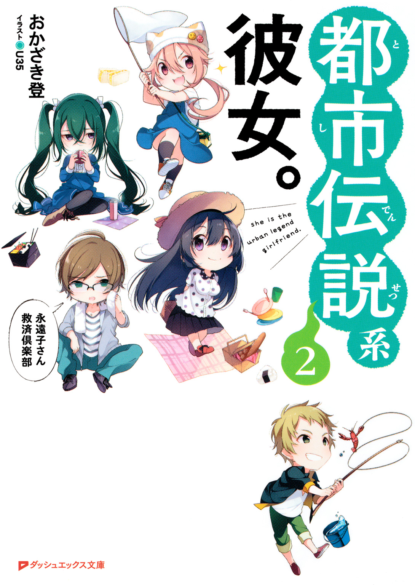
この本は縦書きでレイアウトされています。
また、ご覧になる機種により、表示の差が認められることがあります。
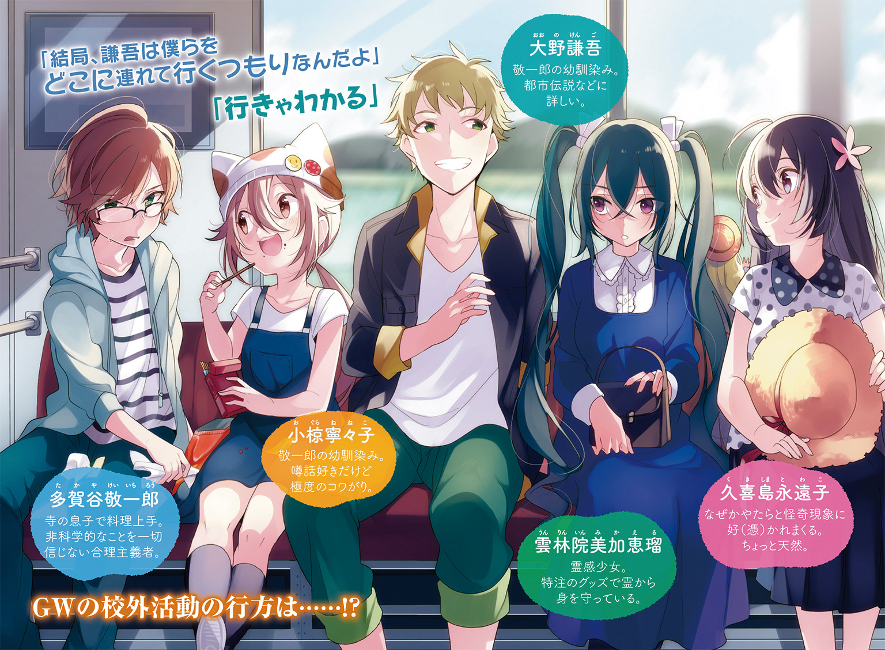
 ダッシュエックス文庫DIGITAL
ダッシュエックス文庫DIGITAL
都市伝説系彼女。２
～永遠子さん救済倶楽部～
おかざき登
プロローグ
なぜ僕ら三人が朝っぱらから部室に来ることになったのかについては、少し説明が必要かもしれない。
毎朝のように、僕は、ちびっこくて元気で猫っぽいニット帽を被った怖がりの小椋寧々子と、大柄で元柔道家の民俗学オタクにして読書マニアの大野謙吾と連れだって登校している。
腐れ縁の幼なじみなんてものは家が近いものだ。
田舎の電車は本数が少ないから、同じ駅を使っていれば自然とホームで顔を合わせることになるのだ。
そして、妙なトラブルに縁があって黒髪が綺麗で超高校級のスタイルを誇る久喜島永遠子さんも、乗り込んでくる駅こそ違うものの、同じ電車を使っている。田舎の電車は車両の数もそれほど多くないから、自然と電車の中で落ち合うようになり、遅くとも高校の最寄り駅で改札を通る頃には合流している。
僕らが発足させた文化人類学研究会、略して文類研には、中二病系自称霊感少女の雲林院美加恵瑠さんもいるけれど、彼女だけは完全に通学経路が違っているので、たいてい顔を合わせるのは教室に着いてからだ。
その四人に僕、多賀谷敬一郎を含めた五人が文類研のメンバーである。
まあ、それはさておき。
そんないつもと変わらない登校の一幕で、学校の生徒玄関に入った頃、
「あ、そうだ！ あたし、昨日部室に忘れ物しちゃったんだよね。ね、誰か取りに行くの付き合ってよ」
と寧々子が言い出した。
「子どもじゃあるまいし、一人で行くって選択肢はねえのかよ」
謙吾は苦笑しつつ、
「大方、こないだの『スミ子さん』でやったスクエアが結構ガチで雰囲気あったから、一人で行くのが怖いんだろ」
「そ、そういうわけじゃないし？」
強がって答えた本人の目が宙を泳ぎまくっている。図星なことこの上ないな。
と、そんな話をしているところに我らが顧問の津島響子先生がハッカパイプをくわえたまま通りかかった。
「お、お前ら、いいところに」
そう僕らに声をかけてきた津島先生に、僕らは口々に「おはようございます」と頭を下げた。津島先生は「ん」と雑に応え、謙吾に向かって、
「生徒会の連中に伝えるよう言われていたんだ。なんか確認したいことがあるから、できたら昼休みまでに一回顔を出してほしいそうだ」
「マジっすか」
謙吾は面倒くさそうにため息をついた。
「なんか書類に不備でもあったか......？ 悪ぃけど、そういうわけだから、俺はここから別行動だ」
言うなり、謙吾は俺たちに背を向けて生徒会室の方へと行ってしまった。津島先生も、伝えるべきことを伝えたからか、すでにこの場から立ち去っていた。
こうして三人になったところで、寧々子が上目遣いで子猫のように何かを訴えてきた。
「敬一郎さん、一緒に行ってあげましょうよ。ちょっと遠回りになるだけですし」
「しょうがないなあ」
まあ、こんなことで恨まれてもつまらないしなあ。
「ありがとう、永遠ちゃんマジ天使だわ！」
目に涙まで浮かべて、寧々子が久喜島さんを拝んでいる。
まあ、怪談に出てくる幽霊にさえも本気で同情してしまう久喜島さんがマジ天使であるという点について異論はない。
と、僕らが朝から部室に向かったのは、こういう事情があったわけだ。
＊
部室に入るなり、久喜島さんは窓を開けた。
もう前庭の桜はかなり散ってしまったが、葉桜のまだ残っている花と若葉とのコントラストにはまた違った趣がある。
澄んだ朝の空気の中、陽の光に照らされた葉桜は、放課後に見るよりもキラキラしているように感じられた。
開けた窓から少し身を乗り出すようにして、久喜島さんはその葉桜に目を奪われていた。
「で、寧々子、何を忘れたの」
寧々子の方を見やってそう訊いた瞬間、僕の背後で久喜島さんが「きゃっ」と小さな悲鳴を上げた。
「えっ」
何ごとだろう、と振り返ったときには、よろけた久喜島さんが僕の方へと倒れ込んでくる真っ最中だった。
「な、ちょ......!?」
支えるために体勢を整える暇さえなく、久喜島さんは僕の背中にすごい勢いでぶつかってきた。
「うわっ」
それでも背中にぶつかってきた感触がとても柔らかかったのは、当たった部位の問題なのか、女の子ってそういうものなのか。
とはいえ、僕は謙吾のように屈強な肉体を持っているわけでもないし、受け身のための訓練を積んだ経験があるわけでもない。
僕は一秒たりとも踏み止まることができず――、
「ちょ、敬ちゃん!?」
事態に気がついて驚きに目を見開く寧々子の方へと倒れ込むしかなかった。
「ふぎゃっ」
寧々子が僕の下で、潰れた猫みたいな声を上げた。
痛い。
だが、背中にはしっかりと久喜島さんの重みと柔らかさと温もりを感じているわけで、二人分の重さの下敷きになってしまった寧々子こそ一番の被害者だろう。
「いたた......」
僕の胸にすっぽり収まるように下敷きになってしまった寧々子の声に、
「ごめん、すぐに退くから」
と返して身を起こそうとする。
「へ!? あ、えっと、別に急がなくてもいいっていうか......」
「はあ？ だって、重いでしょ」
「そ、そうだけど、ええと......あ！ ほら、もしどこか打ってたら、急に動いたら危ないかもしれないし！」
取って付けたように何を言ってるんだ。っていうか、寧々子こそ頭でも打ったんじゃないのか。
それに、いくら事故とはいえ、まるで抱きしめてるみたいな距離感で寧々子と密着し、しかも背中には、久喜島さんの......おそらくアレかなっていう二つの柔らかい感触が当たり続けているわけで。
きっかけは事故でも、早くこの状態を脱しないとさすがにまずい。なんていうか、僕の良識や良心といった尊厳の部分はもちろん、ちょっとドキドキし始めている品性があんまりない方面の事情でも。
とにかく、久喜島さんに退いてもらわないことには、僕も身動きが取れない。背中の柔らかい感触に酔いしれている場合ではないのだ。
「久喜島さん、さっきから動かないけど、どうかした？ もしかして、怪我？」
肩越しにそう声をかけると、
「え、あ、大丈夫です......っ」
少し慌てふためいたような声が返ってきた。
そして、これまで微動だにしなかった久喜島さんが、あたふたと僕の背中から離れた。それで僕も、ようやく自由を取り戻して起き上がる。
僕の下では、寧々子が顔を紅くしつつ、不満そうに唇を尖らせていた。
「いや、怒るのはわかるけど、これは事故で......」
「別に怒ってないもん」
明らかに不機嫌そうな顔で、寧々子は立ち上がった。見やれば、久喜島さんもなぜか頰を上気させていて、なんだか恥ずかしそうに僕から目を逸らした。
「......ねえ、永遠ちゃん。今、なかなか退かなかったのって......」
「そっ、そんなことないですよ！」
「えー。ホントにぃー？」
何かを疑って追及する寧々子と、困ったように目を逸らし続ける久喜島さん。
そんな二人を、この事態を引き起こした張本人であろう黒猫が、不思議そうな顔で見つめていた。
＊
「......それで結局、黒猫を部室から出すために追いかけっこさ」
散々ドタバタ追いかけ回して、どうにかこうにか黒猫を窓から外に逃がした顚末を、僕は教室に戻って謙吾と雲林院さんに話して聞かせた。多少脚色というか、言わなかった部分はあるにはあるが。
「そりゃ災難だったな」
「ホントだよー。猫は好きだけどさ、ほら、黒猫ってなんか縁起悪いとか言うじゃん？」
何気ない寧々子の言葉に、
「そんなことはねえぞ」
「そんなことはありませんわよ」
謙吾と雲林院さんの言葉が重なった。
最近は慣れてきて「また始まったか」くらいにしか思わないけど、ホントにこの二人は息が合ってるなあ。たぶん、それを言うと二人とも怒るんだろうけど。
ほら、実際、雲林院さんは面白くなさそうに謙吾を睨んでいる。
経文をプリントしてあるという包帯を制服の首元や袖口から覗かせたりしている中二病ファッションの雲林院さんがツインテールの先っちょを指でくるくるしながら睨んでいたりしていると、傍目にはちょっと怖い。
「黒猫に関する吉凶はどちらかというと欧米のジンクスで、それが日本に入ってきたんだろう。黒猫は魔女の使い魔、なんて言われたりしたそうだから、中世の魔女狩りと関係があるのかもしれねえな。まあ、不吉だから魔女と結びつけられたのか、魔女と結びついたから不吉とされたのかは鶏が先か卵が先かだが。でもな、実は黒猫のジンクスは悪いものばかりじゃねえんだぜ」
「そうですわ！ 見知らぬ黒猫が家の前にいると幸運が訪れるとか、黒猫に敬意を持ってお世話をすると幸せを運んできてくれるとか、特にイギリスでは幸運のジンクスの方が多いと聞きますわ。何より、黒猫は性格が人懐っこい傾向にありますから、現在は多くの愛猫家に可愛がられていますのよ」
へえ、そうなのか。
「まあ、確かに毛の色がなんであれ猫は猫だしな」
「そうですよね。黒い色に生まれたのは猫のせいじゃないのに、それで不吉だなんて決め付けられるのはかわいそうです......」
「しかし、俺は実際の猫のことはよく知らないんだが、本当に毛並みと性格の関連性なんてあるのか？」
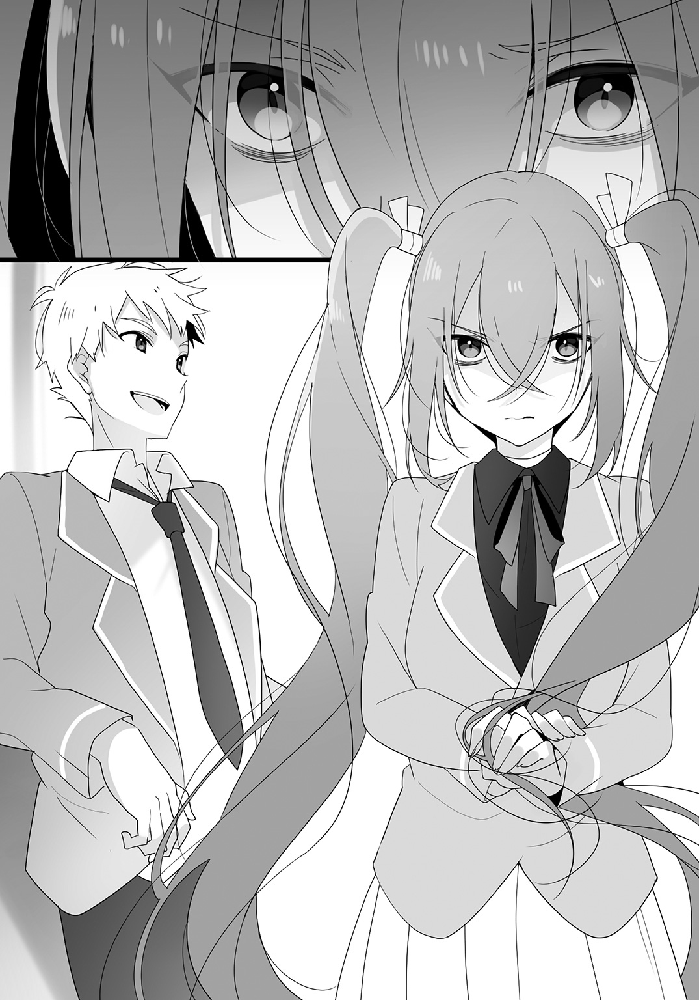
謙吾が首を傾げる。
「科学的な根拠を示せ、と言われると困りますわね。いわゆる俗説、人間の血液型性格診断みたいなものですわ。ただ、多くの愛猫家たちの経験則が加味されていることは確かですわね。統計、というほどしっかりしたデータがあるとは思いませんけれど。まあ、うちのガブリエルはシルバータビー......銀と黒の虎縞なのに、黒猫みたいな性格ですから、あくまで傾向程度ですわね。もちろん、そこが可愛いんですけれど」
ふふん、となんだか誇らしげな顔で、雲林院さんは胸を張って言った。
「雲林院さんの家でも猫を飼ってるんだ」
「ええ。わたくしが生まれたのと同じくらいに、知り合いのブリーダーからアメリカンショートヘアの子猫を譲ってもらってきたのだそうですわ。ですから、わたくしとは姉妹のようなものですわね」
口ぶりからも、雲林院さんがガブリエルという名の猫を可愛がっているのだということは伝わってきた。ペットは家族同然とよく言うが、生まれたときから一緒だというなら、そうした想いはいっそう強いのだろう。
「俺たちと同い年ってことは、猫としてはかなり高齢だよな」
「ええ。人間の年齢に換算すると八〇歳のお婆ちゃんですわね」
「それはまた、ずいぶんとご長寿だな」
「今では大切に飼われて、二〇年以上生きる猫も少なくありませんのよ。でも、野良の寿命は七年から八年と言われていますわね」
倍以上違うのか。猫の世界にも、生まれながらの格差があるんだなあ。
「野良猫も大変なんだねえ」
「まあ、食べ物を探し回ったりする必要もあるし、その過程で交通事故に遭ったりもするだろうしね。怪我をして感染症になっても動物病院に連れていってもらえるワケじゃないし」
厳しい環境での自由と、大切にしてもらえる不自由。果たして、ペットにとってはどちらが幸せなのだろう。
「交通事故......かわいそうですね......」
「ですから！ 無責任に犬や猫を捨ててはいけないのですわ！」
拳を振り上げて、雲林院さんが熱弁を振るう。
ごもっとも。
雲林院さんの主張に異論は何一つないが、まさかここまで猫好きだとは思わなかった。
それにしても、今日は特に久喜島さんが変なトラブルを持ち込むでもなく、寧々子がおかしな噂を拾ってくるでもなく、平和で何よりだ。
第一話 産女の春
四月も半ばになると、新しい環境にも慣れ始めてくる。
今日も特に示し合わせるわけでもなく、なんとなく落ち合って、学校へと向かう。これも、慣れたがゆえのいつもの流れだ。
だから、今朝も僕らは四人揃って最寄り駅から学校へと向かっていた。
「春の風は気持ちいいよねえ」
大きく伸びをして、寧々子が言った。
確かに空は抜けるように青いし、陽の光に白さを際立たせる雲は夏が近づいてきていることを示しているように思えるけれど、寒くもなく暑くもない風は新緑や花の香りを運んでくるような気さえして爽やかだ。
花粉症の人には辛い季節なのかもしれないけれど、幸い僕はその苦しさを知らずに済んでいる。
「山菜も美味いしな。タラの芽とかコシアブラとか」
「謙ちゃん渋いねえ。普通は竹の子とか苺とかじゃないの？」
「だって、近所のおじさんとかが山に行っちゃ採ってきてお裾分けしてくれたりするじゃねえか。山菜の方が馴染みはあるだろ」
「えー。あたしんちそんなにもらわないし、山菜って苦いじゃん」
「舌が小学生のまんまかよ。ほろ苦いのがいいんじゃねえか」
......寧々子がお子ちゃま舌なのは確かだが、ちょっと謙吾の味覚も極端に大人びている気がする。
「ねえ、敬ちゃんはどう思う!? 山菜より苺よね!?」
竹の子はどこへ行った。
「他にもたくさんあるよ。エンドウ豆とかアスパラガスとか、新ジャガ、キャベツ、タマネギ、菜の花......。海のものでも、サヨリ、サワラ、白魚、鯛、アサリ、イカも種類によっては......」
「あー、はいはい、ストップストップ！」
「料理ができるヤツに訊いたのは失敗だったな」
寧々子と謙吾が苦笑しながら顔を見合わせた。訊いておいてその反応はなんなんだ。
「ねえ、永遠ちゃんは苺......あれ？ 永遠ちゃんは？」
キョロキョロと辺りを見回しながら、寧々子が言った。
確かに、言われてみれば久喜島さんの姿が見えない。
どこだろう、と見回していると、
「あ、いた！」
と寧々子が叫んだ。
寧々子が指さす方向を見やれば、久喜島さんは路地に向かって誰かと話しているようだった。建物に隠れて、話している相手はよく見えない。
「久喜島さん」
僕らは久喜島さんに駆けよって、
「どうしたの？」
と声をかけた。
「あ、はい。こちらの方が、乱れた髪を直したいから、ちょっと赤ちゃんを抱いていてほしいって......」
見れば、久喜島さんは胸に赤ん坊を抱いており、路地の方には影のような女性が立っていた。
その黒髪は久喜島さんと同じくらい長いが、対照的なまでにツヤがない。前髪に隠れて顔の上半分はよく見えないが、瘦せすぎだろう、というくらい頰がこけていた。
服も黒いワンピースで、髪の毛も含めて一分の隙もなく真っ黒だった。
........................。
人を見かけで判断する気はないのだが......いや、たぶん僕が感じたのはもはや外見とか人となりの問題ではなくて――
久喜島さんの目の前にいる女性に感じる何かは、『スミ子さん』のときに感じたあの悪寒と酷く似ているのではないか......？
「敬ちゃん、どうしたの？」
寧々子にポン、と腕を叩かれて、ハッと我に返る。
久喜島さんも謙吾も寧々子の声につられたのか、不思議そうな顔で僕を見ていた。
「あ、いや、なんでも......」
気のせいに決まっている。『スミ子さん』のときだって、別に何も不思議なことは起こっていないのだから。
しかし、そう思って一度頭を振って顔を上げると、もう黒衣の女性の姿はどこにもなかった。
「えっ!? いない......！」
僕の言葉に、全員の目が僕から路地へと向いた。
そして、全員が息を呑む。
その後、みんなで周辺を探し回ったものの、黒衣の女性はどこにもいなかった。
そして僕らは、久喜島さんが抱きかかえた赤ん坊の幸せそうな寝顔を見て、途方に暮れることになった。
「やっぱ、警察に届けるべきじゃねえか？」
腕組みをして、難しい顔で謙吾が言った。
僕も同意見だったが、直後に通りかかったクラスメイトの一言によって、その案はいきなり頓挫することになった。
クラスメイトは、笑いながらこう言って、通り過ぎていったのだ。
「おはよう！ あはは、久喜島さん、何そのポーズ！ 変なの！」
それを聞いて、僕と謙吾は顔を見合わせた。
「おい、敬一郎......」
「わかってる。おかしいよね」
「え？ え？ 何が？」
キョトンとした顔で、寧々子が僕と謙吾の顔を交互に見た。
「普通、この状況で赤ん坊のことをスルーするのはどう考えてもおかしいでしょ」
「それに、『変なポーズ』と言っていた。久喜島さんのことをちゃんと見た上でそう言ったとしたら――」
謙吾は一度言葉を切って一拍間をおき、真面目な顔で、
「もしかして、赤ん坊が見えてなかったんじゃねえのか？」
と、一度考えはしたものの、僕が絶対に認めたがらない、その推論を口にした。
＊
人間の脳は、『あるはずのないものを見てしまう』以外にも『あるはずのものを見逃してしまう』という誤作動もあるのだという。
あってほしくないという願望や、あるはずがないという固定観念が、視覚という機能を狂わせるのだ。
だから、僕はクラスメイトが赤ん坊に気がつかなかったのも、そういうことなのだろうと考えていた。逆に言えば、それ以外に説明のしようがなかった。
だが、学校に近づくにつれてその考えは打ち砕かれていき、教室に着く頃には別の理由付けが出来ないものかと考え始めていた。
なぜなら、教室に着くまで、誰一人として久喜島さんが抱いた赤ん坊に反応しなかったのだから。
僕はトイレに行っていてその場にはいなかったのだけど、先生に相談しに行った久喜島さんたちは「何を言っているんだ、からかうんじゃない」と取り合ってもらえなかったという。
教室に着く頃には寧々子はもうすっかり怖がってしまって、僕の制服の裾をギュッと握ったまま離そうとしなかった。
まあ、気持ちはわかる。一人や二人ならともかく、会う人会う人全員が見えていないなんて、どう考えてもおかしい......。
ただし、一人だけ例外がいた。
「ちょっと、なんてモノを連れてきたんですの!?」
僕らが教室に入るなり、久喜島さんが抱えている赤ん坊にギョッとして、後退りながら雲林院さんがうめくように言った。
「美加ちゃんにはこの子が見えるの!?」
寧々子の言葉にうなずきつつ、大きくため息をついた。
「そういう言い方をするということは、それの正体に薄々感づいていますのね？ なのに、わざわざ連れてきちゃいましたの？」
「でも、美加さん、赤ちゃんを置き去りにするなんて、かわいそうすぎてできませんよ」
「それ以前に、赤ん坊を置き去りになんかしたら犯罪だよ」
「そんなあからさまに怪しい存在ですのに？ 現に、他の人には見えていないんですわよね？」
「馬鹿なことを言っちゃいけない。赤ん坊は赤ん坊だよ。他の人は事情を聞きづらいから見ないようにしてるとか、そんなことだと思うよ」
「さすがに敬一郎の解釈は苦しいんじゃねえかと思うが、まあ、正体がなんであれ、赤ん坊を捨ててくるなんて後味が悪すぎるだろ」
「だよねー。そりゃあ、ちょっと怖いけどさ......」
「これも、きっと神が与えたもうた試練ですよ」
やれやれ、と雲林院さんは肩をすくめた。
「いつものパターンですわね......」
「まあ、この手の話はたくさんあるが、現時点で悪いことが起こっていないから、そう酷いことにはならねえと思うがな」
「たくさんあるのか」
僕の質問に、謙吾は「ああ」とうなずいた。
「あれはおそらく『産女』だ」
「うぶめ......？」
すやすやと眠る赤ん坊を抱いたまま、久喜島さんがオウム返しに訊いた。
「姑獲鳥と書く場合もあるが、こっちは中国の化け物の名前だ。伝承が入ってきたときに混同されたんだろう。鳥の姑獲鳥はどっちかっていうと赤ん坊を連れ去る化け物だからな」
「じゃあさ、鳥じゃない方は？」
寧々子が訊いた。
「日本産の産女は死んだ妊婦が化けたモノだと言われている。中国の姑獲鳥が赤ん坊を奪うのに対して、日本の産女は道行く人に赤ん坊を預けるんだ。この子を少し抱いていてくれ、と言ってな」
なるほど、久喜島さんがこの子を預かったときの状況と同じか。
「まあ、もちろん、日本にも赤ん坊を奪い去る産女らしき逸話もあるんだが、中国の話が伝わって変形したんじゃねえかって考え方もできて、イマイチ起源とか由来がハッキリしねえんだよなあ......。まあ、海外から入ってきて定着したってのは、それはそれで面白い事例ではあるんだが......」
「謙吾、脱線しかかってるよ」
「ああ、悪い悪い」
「で、子どもを預かるとどうなんの？」
怖がりのくせに訊きたがるんだよなあ、寧々子は。しっかりと僕の腕にしがみついて、ちゃっかり赤ん坊から隠れるような位置取りをしてるのはさすがというか、いつものことというか。
「預かったあとどうなるか、というのにはいくつものパターンがあるんだが、多いのは夜が明けてみると抱いていたのは石だったとか、石塔だったとかってケースだな。類似のパターンでは、どんどん重くなっていって石だったと判明するんだが、その試練に耐えると怪力を授かる、なんて話もある。あるいは、黄金や宝物で親切に対するお礼をする、という伝承も少なくねえな」
「なんだ、いいお化けじゃん」
寧々子がホッとしたように僕の腕を放しかけた。
「ところが、預かった赤ん坊が喉に嚙みついてくるなんて話もあるし、頼みを断って逃げようとすると悪寒に襲われて高熱にうなされて死ぬ、なんて話もある」
「ひぃぃ」
離れかけていた寧々子の手が、また僕の腕をガシッと摑む。忙しいな、まったく。
「まあ、産女の話は仏教説話なんかにもかなり取り込まれているんだ。赤ん坊を抱いてくれと頼まれるのが若い頃の名僧だったりして、身ごもったまま死んだ女の霊を成仏させてやった、とかな。あるいは、お礼の話はそうした善行に対するわかりやすい報酬として付け加えられた要素なのかもしれねえな」
「なるほど。つまり、産女の災厄は赤ん坊を受け取ったときか、お願いを拒否した場合に発生するものだから、そのシチュエーションを乗り切った現状では危険は少ないのではないか、と言いたいわけだ」
「ああ、そういうことだ」
「あら、ついに超自然的なモノの存在を認めましたの？」
揶揄するように、雲林院さんが僕を見て小さく笑う。
「ご冗談を。謙吾の言葉を要約しただけだよ」
あくまで、伝承は伝承。そういう伝承がある、ということと、その伝承が事実である、ということは、当たり前だがイコールではない。
「あら、そうなんですの？」
当たり前だ。そんな非科学的で非論理的な存在、断じて認めるもんか。
「ちなみに、産女と関係あるかはわかりませんけれど、現代でも赤ん坊を抱いて現れる幽霊の話はわりと聞きますわよ。東京の某所では、事故が多発する交差点ではそんな女性が手招きする姿が何度も目撃されていて、その女性がドライバーを死後の世界に誘っているのだともっぱらの噂らしいですわ」
「ちょ、美加ちゃん、そういう話はやめてよ！」
仕入れてきた怪談を「聞いて聞いて！」って話す寧々子がどの口で言うんだ。
「大丈夫ですわよ。東京の話ですもの、上京しない限り、わたくしたちは関係ありませんわ。それに、そこで事故に遭うのは決まって男性のドライバーだそうですわよ。男性にどんな恨みがあるのかはわかりませんけれど、ますますわたくしや寧々子ちゃんには関係ありませんわ」
「そういう問題じゃないってば！」
自分が巻き込まれそうにないと知っても、寧々子は僕の腕から離れない。
「ちなみに、似たような話は静岡にもあって、事故に遭ったバイクの乗り手は『老婆を避けようとした』と供述しているにもかかわらず、目撃者の小学生はその老婆の姿を見ていなかったそうですのよ」
「それ、産女に関係あるの？」
僕の質問に、雲林院さんはよく訊いてくれた、という顔で笑って、
「その土地は、『産女新田』、古くから地名に『産女』という名がついているそうですの」
と得意げに言った。
......うーん、それ、こじつけっぽくないか？
「敬一郎、そんな顔をするな。こじつけっぽいとでも考えているんだろうが、東京の件はともかく、地名には由来があるもんだ。案外、赤ん坊を預けようにも通るのが車やバイクばっかりで、子ども預けたさに無理矢理止めようとしたのかもしれねえぜ」
「はた迷惑な話だな」
僕はやれやれと肩をすくめた。
「まあ、事故が起こりやすい場所ってのはあるもんだよ。建物で相手の車が見えにくい都市部ではもちろん、見通しのいい田舎道でも特有の田園型事故っていうのがある。十字路の左右でお互いの車が見えていても、同じくらいの速度で走っていると、相手の車が動いていない、と錯覚してしまうらしいんだ。でも、それを知らなければ、見通しのいい事故多発地帯なんて気味が悪く思えて当然だ。そんな場所で、事故が起こったときにたまたま子どもを連れた女性が通りかかったりしたのを目撃した誰かが古くからの伝承になぞらえた、そんなところじゃないかな」
「まったく、敬ちゃんは......」
「でも、敬一郎さんらしいです」
「まあ、ほとんどの事故多発地帯は、敬一郎の言うような現象とか、カーブがきついとか、何かしら科学的に説明できる原因があるんだろうな。ただ、俺としては、その中にほんの少しだけでも不思議な何かがあってくれると面白い」
「事故を面白がるなよ」
人だって死んでいるんだぞ。
「ん、まあ、それは確かにその通りだが」
「で、結局、どうしたらいいわけ？」
寧々子が誰かに、というより、おそらく全員に訊いた。
「さてなあ。基本的には、産女の話は赤ん坊を預かった時点でほぼ終わっているんだ。一部、預けた子を母親が葬られた寺に届けるようなパターンも見られるが、その場合も母親にそれを頼まれたからだったりするしなあ。預かってくれとしか言われていない以上、預かっておくしかねえだろ？」
「いーかげんだなー。もー、謙ちゃんのうんちくもいざってときに役に立たないよねー」
「うるせえな。うんちくってのはそういうもんだ」
認めるのかよ。それでいいのか。
「とにかく、返す相手を探すべきだろう」
至極当たり前のことを僕は言った。本来なら警察に届けるような案件なのだ。
何より優先すべきは、赤ん坊を母親のもとへ無事に返すことに他ならない。
「そうですね......。やっぱり、赤ちゃんはお母さんのところにいるのが一番いいと思いますから......」
「え、ってことは、わざわざ幽霊を探すの!?」
蒼白な顔で、寧々子がますます僕の腕を摑む手に力を込める。痛いんだけど。
「わたくしも、自ら超常現象に歩み寄るような真似はどうかと思いますけど......」
「だからって、いつまでも預かっていられねえだろ」
「そりゃそうだけど......」
「僕は信じてないけど、もしあのお母さんやこの子が人間じゃないなら、返さない方が後々怖いって考え方はないの？」
僕に言われて、寧々子と雲林院さんは情けない顔をした。
まったく、二人とも、ありもしないものに怯えすぎだよ。
＊
これまではおとなしく眠っていてくれた赤ん坊だが、授業が始まる頃になってぐずり始めてしまった。
眠れる獅子の目覚めである。
一限目の現国の授業での、スイーツ好きで名高い松田小桃先生のお菓子談義が気に入らなかったのか、赤ん坊はくわっと目を見開いて、大声で泣き始めたのだ。
赤ん坊のこととはいえ、授業中に大音量で大泣きしているというのに、クラスメイトたちはおろか、先生さえ何も言わない。
いくら見ないようにしているといっても、みんなよくこの騒音の中で授業に集中できるな。先生の声も搔き消されてよく聞こえない。
久喜島さんはといえば、授業中なので露骨にあやすわけにもいかず、ただただ赤ん坊の背中を優しくさすってあげるくらいしか手立てがないようだった。
二限目には、赤ん坊は泣き止みはしたが、今度は旺盛な好奇心を発揮し始めた。
最初は久喜島さんの髪や服を触りたがる程度だったが、やがて机の上に広げられた久喜島さんの教科書や筆記用具に興味を示し始め、手を伸ばしては机の上から消しゴムを叩き落とすという遊びを覚え、何度も久喜島さんに消しゴムを拾わせるために席を立たせた。
どうやら抱かれたまま久喜島さんが立ったり座ったりするのを遊園地のアトラクションか何かだと思っているようだった。
消しゴムが転がった方向によっては、何度かは僕らが拾ってサポートはしたものの、先生もクラスメイトたちも頑として赤ん坊のことは無視し続けた。
まったく、みんなどうかしている。
そして、お昼休み。
「お疲れ様」
部室で恒例のお裾分け弁当を広げながら、ぐったり気味の久喜島さんに言う。
「いえ......」
久喜島さんは僕に微笑みを返してくれたが、その表情は精彩を欠いていると言わざるをえなかった。
「赤ちゃんは可愛いですけど、さすがにずっと抱きっぱなしだと腕は疲れるし、髪の毛は引っ張られるしで大変ですね......」
確かに、この上に仕事やら家事やらに追われる世のお母さん方の苦労がわかろうというものだ。
「しかし、不思議だと思わねえか？」
ドカッといつもの席に腰を下ろして、謙吾がみんなの顔を見回した。
「何が？」
寧々子が首を傾げる。
久喜島さんと雲林院さんも、謙吾が言わんとすることをわかっていないようだ。
「もしかして、おしめのこと？」
僕の発言に、
「「「あ！」」」
と女子三名が口を揃えて言った。
そう、僕らはこの赤ん坊のおしめを一度たりとも替えていない。朝、登校時に預かってから、お昼休みになった今この瞬間まで、一度も、だ。
「その通りだ。俺はどこかのタイミングで紙おむつを買いに校外に出なきゃいけねえと思っていたんだが、その必要もなく昼休みだ。赤ん坊のことはよくわからんが、大も小も半日まったくしねえ赤ん坊ってのは不自然だと思うんだが、その点はどうだ？」
ニヤニヤ笑いを口元に浮かべながら、謙吾は僕の顔を見た。
......なるほど、自分たちはこの赤ん坊が人間ではないから、という理由を用意できるが、それを認めないお前はどう説明するのか、と言いたいわけか。
「そういう子もいるんじゃないの」
「おいおい、敬一郎、それはさすがに無理があるだろう」
「一般的にはそうかもしれないけど、体質なんて人それぞれだよ。もしかしたらその子は珍しい体質なのかもしれないし、そういう症状の未知の病気なのかもしれない。どんなに確率が低くても、幽霊だからとか妖怪だからとか、そんな説明よりは現実味があるよ」
やれやれ、という顔で、僕以外の文類研メンバーが顔を見合わせる。
「敬ちゃんも頑固だねえ」
「では、先生や他のクラスメイトに認識されていない点についてはどうお考えですの？」
「それは......」
言葉に詰まる。
学校側からすれば、女子生徒が赤ん坊を連れてきた、なんて一歩間違えば大変な不祥事になりかねない。
だから、常識的には、放置するという選択肢はありえない。
だが、現状では、そのありえない選択肢がとられている。しかも、全員がまるで口裏を合わせたように――いや、違う。箝口令が敷かれている、と考えるべきかもしれない。
生徒だけでなく、先生方全員に「無視しろ」と強要できるのは誰だ？
そして、そんな指示を出す理由とは？
「例えば――」
僕は考えを巡らせながら、言った。
「この赤ん坊が校長先生とか、この学校でかなり上位の権力者の隠し子だったとしたらどうだろう。いや、普通の先生だったとしても、こんな不祥事は学校としては表沙汰にはしたくないはず。それで、先生方が隠蔽するために協力しているとしたら......」
「ええと......はい？」
「敬ちゃん、何言ってんの......？」
「敬一郎、それはさすがに突飛すぎないか？」
「本気で言ってますの？」
全員が呆れ気味に首を傾げるが、僕は構わず指で眼鏡の位置を直し、続けた。
「当然、学校関係者が不倫してできた隠し子なんて、返せとは言えない。それは名乗り出るにも等しいからだ。それで、苦肉の策として、無視を徹底するよう先生たちに圧力をかけた。先生たちも逆らえず、すでに関わってしまった僕たち以外の生徒に対して、赤ん坊はいないものとして振る舞うよう指示を出した」
理屈として無理筋なのは百も承知だ。
だが、それなら、絶対にないとは言い切れないはず......！
「つまり、朝出会った女性は愛人で、わざと相手が勤める学校の生徒を選んで赤ん坊を預けたわけだ。動機は嫌がらせ。事情はわからないけど、よくある『奥さんと別れろ』というプレッシャーだと考えるべきかな。父親の管理下にあるところだから何か危険や不都合があれば父親が対処するだろうし、むしろ、そうせざるを得ない状況を作りたいんだ。職場の目があるところで僕らに対して『自分の子だから返しなさい』と言わせること、それこそが目的なんだ」
「なるほど。かなり荒唐無稽だが、まあギリギリ整合性は取れているか......」
超常現象説を主張する謙吾に荒唐無稽とか言われるのは非常に心外だ。
「だが、赤ん坊を預かった直後から、他の生徒には見えていなかっただろう。さすがに箝口令を敷くにはあのタイミングでは無理なんじゃねえか？」
「言ったじゃないか。あのときだけは、たまたま見逃したんだろう」
「苦しいんじゃねえか？」
「それはわかってるけど、妖怪や幽霊だって言い張るのも常識的には苦しいよね」
「でもさ、先生に言われたからって、みんな素直に従うかな？」
寧々子が「うーん」と唸りながら言った。
「だってさ、『あたしたちが赤ん坊を連れてくるけど、それをいないことにして行動しろ』なんて、怪しすぎると思うんだよねー。あたしなら、言われた瞬間に何それって思っちゃうよ」
「確かにね。だから、あるいは何か交換条件を出したのかもしれない。テストで採点を甘くしてあげるとか、ちょっとしたものをご馳走するとか」
「教師にあるまじき取引じゃねえか」
「僕もそう思うけど、教師だって聖人君子ばかりじゃないよ」
「敬一郎君の推論だと、かえって大ごとになっていませんこと？ わたくしたちにこっそり近づいて、赤ん坊を返してくれと素直に言った方が噂にならずにすむと思いますわ」
「でも、それだと僕らに『この赤ん坊の父親が誰なのか』がハッキリとわかってしまう。それが判明してしまったら、もう言い逃れはできない。でも、父親が特定されなければ、なんとか誤魔化せるかもしれない。少なくとも、今日さえ乗りきって赤ん坊を引き取れば明確な証拠はなくなる」
........................。
全員が、やはり変な顔をしている。
わかってるよ、僕だって苦しい理屈なのは自分でも感じてるんだから。
「まあ、緊急事態に冷静に最善手を選べる人間なんてそう多くないよ。みんなしてテンパって、そんな作戦になったのかもしれないし」
「論理の組み立てとしては、そりゃ反則じゃねえか？」
「まったくね」
自分でもそう思っているのだから、ため息をつくしかない。
「自分でもあまりに都合のいい解釈をしてるとは思うけど、それでも幽霊だの妖怪だのを原因にするよりはありうることだと思うよ」
少なくとも、どんなに仲間たちに呆れられようと、このスタンスを曲げるつもりはない。
「そんなことより、お昼ご飯！ さあ、残さず食べた食べた！」
定番の玉子焼き（今日はチーズ入り）とピーマンの肉詰めをたっぷり詰め込んだ大きな弁当箱を、僕は指さした。
「そうだな。長々話してたら、食う時間がなくなっちまう」
「おっと、それは困るね！」
言いながら、寧々子が玉子焼きを手でひょいっと摘まんで口に放り込んだ。
「ん、今日のも美味い！」
「寧々子さん、手づかみというのはちょっと......」
「あ、ごめーん、永遠ちゃんってそういうの気にする人？ 直箸とか」
「いえ、気にはしませんけど、お行儀的に......」
「そうですわね。学校の部室で礼儀作法をどうこう言う気はありませんけど、さすがにそれはどうかと思いますわ」
「えへへ、ごめんごめん。お腹空いちゃってさ」
悪びれもせず、寧々子は玉子焼きをもう一切れ、手で摘まみ上げて口に入れた。
反省の色ゼロかよ。
とにかく、そんなこんなで、昼食を食べ始めたのだが......。
「あ、ちょっと......！」
久喜島さんの膝の上から手を伸ばした赤ん坊が、久喜島さんが食べようとしていた玉子焼きを強奪してパクリと食べてしまった。
その、強奪してから口に入れるまでのあまりの早業に、僕らは誰もそれを阻止することができなかった。
「ちょ、おい！ 固形物を食って大丈夫な歳なのか!?」
謙吾は慌てて叫ぶが、僕も含めて、そんな赤ん坊事情に詳しい人間がこの場にいるはずもない。
そもそも、この子は生まれてどのくらいなのかさえ、僕たちにはよくわからない。
「わかんないけど、喉に詰まらせちゃったりしたらヤバいよね!?」
「どっ、どうしたらいいんですの!?」
寧々子と雲林院さんは食事の手を止めて、腰を浮かせはしたものの、どうしていいのかわからないまま、あわあわとパニクっている。
そして久喜島さんはといえば、二個目の玉子焼きを求めて机によじ登ろうとする赤ん坊を押さえるのに必死になっていた。
少なくとも喉に詰まらせたりはしていないようでホッとしたが、かといって赤ん坊の未発達な消化器官では腹を壊さないとも限らない。
「とにかく、お腹が空いてるみたいだから、何か食べるものを......ちょっと待って」
僕はスマートフォンを取り出して、『離乳食』というワードで検索してみた。
その間にも、赤ん坊は食べ物を求めて久喜島さんの腕の中で暴れ回る。
......あ、赤ん坊め、目標を変更して久喜島さんの豊かすぎるおっぱいに手を伸ばし始めやがった！
「あん、ちょ......っ」
赤ん坊に胸を触られて、久喜島さんがアレな声を出した。
その声に、地下倉庫での一件が思い出されて顔が熱くなる。
とにかく、早く検索を......！
表示されたページを見ると、諸説あるにせよ、一般的に離乳食は生後五カ月くらいからあげ始めるものらしい。基本はお粥をベースにすり潰した野菜などを混ぜるらしいが、卵も材料候補として挙げられている。
その他の項目もざっと目を通して、さらにそれぞれの昼食を見回した。
謙吾はいつもの特大おにぎりと小さな水筒で持参した温かい焙じ茶、久喜島さんもいつものように日の丸弁当。
寧々子はコンビニで買ってきたメロンパンとヨーグルト。
雲林院さんは十字に仕切られた松花堂弁当風。懐石料理が源流で、本来は仕切られた四箇所にそれぞれ刺身、焼き物、煮物、ご飯などを見栄えよく配置された高級弁当だ。さすがに刺身は入っていないが、野菜の炊き合わせやサワラの西京焼きなどが上品に並んでいる。こんな手の込んだ高級そうなお弁当が毎日続いてるんだから、ホントお嬢様だなあ。
まあ、それはともかく。
「寧々子、ヨーグルト買ったなら小さいスプーンもらってきてるよね？」
「え？ うん。ないと食べらんないし」
「そのスプーン、ちょっと貸してくれる？」
「そりゃいいけど......」
困惑する寧々子から、使い捨ての小さなスプーンを借りて、袋から取り出した。
「謙吾、少しお茶を分けてくれ」
「そりゃ構わんが」
そして、弁当箱の蓋にチーズを取り除いた玉子焼きとご飯を取り分け、スプーンの背で潰していく。そこに、謙吾の焙じ茶を少しずつ垂らしながら練っていき、即席のなんちゃって離乳食を手早く作り上げた。
「久喜島さん、赤ちゃんをこっちに向けさせて」
「あ、はい」
僕は久喜島さんの腕の中で暴れ回る赤ん坊の口元に、スプーンでなんちゃって離乳食を近づけた。
暴れて今にも泣き出しそうだった赤ん坊も、口の中にスプーンを入れてやると、途端に次の一口を求めて「あー、あうーっ」と手を伸ばしてきた。
「はいはい、そう慌てないで」
一口、また一口と離乳食を赤ん坊の口へと運ぶ。
「なんかそうしてると、ホントの夫婦みたいだな」
ニヤニヤしながら、謙吾が言った。
「なっ」
「ええっ!?」
一瞬で、久喜島さんの顔が真っ赤に染まった。
たぶん、僕の顔も同じように赤くなっていたことだろう。そう自覚できるくらい、顔が熱かった。
「何言ってんだ、謙吾！」
「そうだよ！ 謙ちゃん何言ってんの！」
そして、なんで寧々子まで顔を真っ赤にして怒ってるんだ。
「だいたい敬ちゃん、永遠ちゃんに近すぎるよ！」
「じゃあ、寧々子、代わってくれる？」
「もちろ......」
言いかけて、赤ん坊を見て、寧々子は固まってしまった。
やっぱりまだ怖いのか。
「......茶番ですわね」
「こういうのは青春っていうんじゃねえのか？」
「お前ら、うるさいよ」
「いや、冗談だ。ほら、赤ん坊がもっとくれって言ってるぞ」
まったく、こいつらは......！
しかし、謙吾の赤ん坊がもっと欲しがっているぞという言葉は正しかった。実際、赤ん坊は僕に向かって手を伸ばし、だあだあ、と言葉にならない声で何かをしきりに訴えかけている。
「はいはい」
僕は赤ん坊に離乳食を食べさせる作業に戻った......のだが、赤ん坊にものを食べさせようとすると自然と顔も近づくことになる。
赤ん坊に顔を近づけるということは、赤ん坊を抱いた久喜島さんとも顔が近くなってしまうわけで......。
僕もかなり緊張しながらの離乳食食べさせ係の再開だったが、久喜島さんは僕以上にガチガチになっていて、なんだかぎこちない食事風景になってしまった。
そんな僕らの様子を終始ニヤニヤしながら眺めていた謙吾には、いつかきっと報復してやろうと心に決めた。
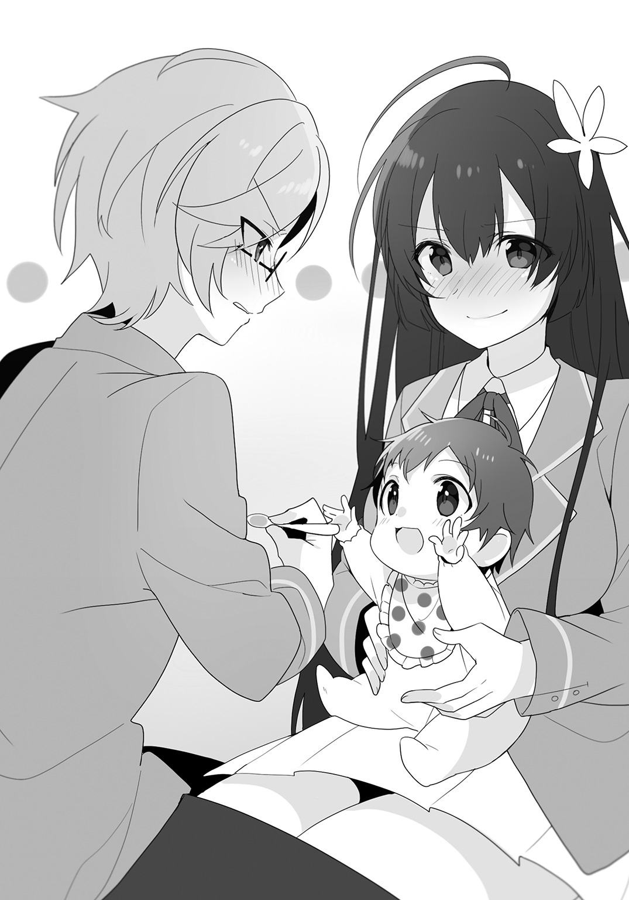
＊
午後の授業も散々赤ん坊に引っかき回されることになったその日の放課後、僕らは部室にも寄らずに早々に学校を後にした。
とにかく、久喜島さんが抱いたこの赤ん坊を、一刻も早く母親のもとに返さなければならない。
朝にあの母親と出会った路地を中心に、みんなで手分けして探し回る。
が、見つけることができないまま時間だけが虚しく過ぎていき、陽が傾き始めた。
高層とはお世辞にも言えないまばらなビルや商店が、夕陽を浴びて赤く染まっていく。この赤さのピークを過ぎれば、あとは夕闇が満ちていくだけだ。
――まずいな。
暗くなってくれば、人探しの難易度はかなり上がってしまう。もし見つからないとなれば、赤ん坊を今夜どうするのかも考えなければならない。
さすがにこのまま久喜島さんに預けっぱなしというのは気が引ける。かといって、僕も含めて、知らない赤ん坊を家に連れ帰って平気な家というのも普通はないだろう。
「謙吾！ いたか!?」
路地の奥から出てきた謙吾に向かって、訊いた。
謙吾は首を横に振りながら、僕の方へと歩み寄ってきた。
「こっちにはいねえな。そう訊くってことは、そっちもダメか」
「ああ」
赤ん坊を久喜島さんが受け取った、例の路地の前である。
そこへ、久喜島さんも寧々子も雲林院さんもやってきた。特に決めごとをしたわけでもないのに、手分けして探し回っては定期的にみんながここへ集まる、というのがもう何度も繰り返されていた。
「困りましたね......」
ぽつり、と久喜島さんが呟く。
「困ったねえ......」
はあ、と大きくため息をついた寧々子の背中を、雲林院さんが活を入れるように強めに叩いた。
「それでも、見つかるまで探すしかありませんわよ」
「まあ、そだね」
「はい。やっぱり、赤ちゃんはお母さんと一緒にいるべきです。離ればなれなんて、かわいそうです......」
「だよねー。それに、なんかちゃんと返さないと取り憑かれたり呪われたりしそうだし」
結局寧々子は怖さが先にくるのか。別に、普通の可愛い赤ちゃんだけどなあ。今日一日、おむつを替える必要がなかったことだけは普通ではなかったけれど、それは奇異ではあっても怖いってのとは違う気がするなあ。
と、話が途切れた瞬間、雲林院さんがビクッと身体を震わせた。
そして、彼女は、血の気が引いた顔を路地の奥へと向ける。つられるように、僕らも雲林院さんの視線の先を目で追いかける。
すると、路地の奥の影が、一瞬、ゆらりと揺れた。
同時に、強烈な怖気が悪寒となって背筋を駆け上がってきた。
揺れた影が、ゆっくりと近づいてくる。
朝に見た、黒ずくめの髪の長い女性が、僕らの目の前まで歩み寄ってくる。
そしてその後ろに、いつの間にかもう一人、やはり上下とも黒い服を着た幽鬼のように瘦せこけた男が立っていた。
「あ、あの、この子を......！」
久喜島さんが抱いていた赤ん坊を差し出すと、黒衣の二人は揃って深々と頭を下げ、そして女性が赤ん坊を受け取った。
『ありがとうございます。今日一日この子を預かっていただけたおかげで、この子の新しい父親を見つけることができました』
その言葉は、果たして本当に「声」として聞こえたのだろうか。その女性の口は、そう大きく動いたわけではなかった。なのに、やけにハッキリと僕の耳に届いたのだ。
そう、まるで、頭に直接響いてきたかのように。
馬鹿げた話だ。そんなこと、あるはずないというのに......。
僕が戸惑っていると、黒衣の二人は揃ってもう一度頭を下げ、二人して「きゃっきゃ」と楽しそうに笑う赤ん坊を慈しみながら、路地の闇へと消えていった。
「なんだったのよ、いったい......」
路地の闇を呆然と見つめて、寧々子が呟いた。
謙吾は「ふむ」と一度唸って腕組みをし、
「なあ、『子育て幽霊』の話は知っているか？」
と、誰にともなく訊いた。
僕も含めて誰も返事をしないところをみると、みんな知らなかったのだろう。一度僕たちの顔を見回して、謙吾は言葉を続けた。
「ある夜、店じまいをした飴屋のところに、髪をボサボサに乱した青い顔の女が訪ねてきて、一文銭を出して『飴をください』と言うんだ」
「一文銭ってことは、現代の話じゃないな。江戸時代か」
ああ、と謙吾がうなずく。
「店は閉めていたものの、飴屋はそのあまりに悲しそうな声にほだされて飴を売る。そんなことが六日続いて、七日目には『お金がもうないからこの着物で飴を譲ってほしい』と女は女物の羽織を差し出して言う」
「なるほど、六文銭か」
「え、何？ 敬ちゃん、どういうこと？」
寧々子に袖を引っ張られ、そう訊かれた。
「今でも風習が残ってるところもあるけど、昔、遺体を埋葬するときにはお金を六文、三途の川の渡し賃として一緒に棺桶に入れたんだよ」
「え、じゃあもう、飴を買いに来る女の人って幽霊確定じゃん！」
この程度の話で顔を青くするなよ。
「......続けていいか？」
「うん。まあ、だいぶオチは読めてきたけど」
「どこかで聞いたことがありますわよね」
「まあ、古典だからな。落語にもなってるはずだ」
なるほど、どうりで。
「で、だ。翌日、飴屋がもらい受けた羽織を店先に干しておいたところ、ある金持ちが店に入ってきて『あの羽織は何日か前に死んだ娘の棺桶に入れてやったものだが、どこで手に入れたのか』と訊く。飴屋は事情を話して、一緒に娘を埋葬したという墓地までやってくると、墓の下から赤ん坊の泣き声が聞こえてくる。掘り返して棺桶を開けてみると、ご想像通り六文銭はなくなっていて、娘の亡骸に抱かれた赤ん坊が飴屋が売った飴を食べていた、というわけさ」
やはりか。おおよそ、思っていたとおりの筋書きだ。
「......かわいそうに、よほど赤ちゃんのことが心残りだったんですね」
久喜島さんがそう言いながら、目元にうっすらと浮かんだ涙を拭った。
「それで？ それも産女の話なのか？」
「いや、そういうわけじゃねえ。でも、月並みな言葉だが、子を想う母親ってのは強いんだよな。だから、案外、子どものために父親が必要だと感じたら、幽霊もああやって新しい父親になってくれる存在を探しに行ったりするのかもしれねえなあ、と思ってな」
「何が幽霊だよ、まったく」
「え、敬ちゃん、まだお昼に言ってた不倫の報復説を主張すんの!?」
「うるさいな。幽霊よりマシだ」
そっぽを向く僕を見て苦笑しながら、謙吾は、
「だが、まあ、赤ん坊に何ごとも特になかったし、お母さんも恋人を見つけて春が来たし、万事上手くいったみたいでよかったじゃねえか。まさにこの春、産女にも春が来た、というわけだ」
と宣って笑った。
「ふむ、今の、なかなか上手いこと言ったと思わねえか？」
「思わないよ。まったく、なんだよ、産女の春って......」
「でも、本当に、無事にお母さんのもとに返すことができてよかったです......」
それは確かに。
「お疲れ様、久喜島さん。ずっと任せきりにしちゃってごめんね」
久喜島さんは「いえ」と首を横に振って、しかし、
「でも、ずっと抱いていたので、さすがに腕が疲れました」
と、可愛らしく苦笑したのだった。
第二話 偶然かくれんぼ
一学期もゴールデンウィークが近づいてくる頃になると、環境どころか人間関係にすら慣れというものが出てきはじめる。
だから、朝、登校してきた僕らを――というか久喜島さんを見て雲林院さんが青ざめた顔をしても、またか、と思ってしまう程度には耐性がついてしまっていた。
もちろん、霊感なんてものを僕は信じていない。雲林院さんは普通なら見えないモノが見えてしまう目を持っている、なんて話も馬鹿げていると思っている。
とはいえ、雲林院さんが久喜島さんの不調や異変に対して、僕ら以上に何らかの嗅覚を持っている、というのはどうやら間違いないらしい。
「永遠子ちゃん......貴女、今度は何に憑かれているんですの......？」
だが、久喜島さんは、
「はい？」
と不思議そうな顔で首を傾げるのみ。
少なくとも今日の久喜島さんは、以前のように眠れなくて顔色が悪いみたいなこともなさそうだし、寒気で厚着をしてきているわけでもない。
僕の目には、逆に、今日は珍しく何ごともないんだな、としか映っていなかったくらいなのだ。
しかし、雲林院さんは、
「絶対によくないものが憑いてますわよ」
血の気の引いた顔で、しかし自信たっぷりにそう宣言する。
「まあ、雲林院さんがそう言うからには、何かあるんだろうぜ」
謙吾はそう言って、ニヤリと笑った。
授業が始まるまでの朝の時間を潰すネタを見つけたと言わんばかりの、いたずらっ子のような笑顔だった。
＊
「さて」
まるで名探偵のように、謙吾は不敵な笑みを浮かべたまま、自分の顎を撫でつつ、しばし考えを巡らせるように目を閉じた。
「少なくとも、昨日の放課後まで、それの兆候はなかったんだよな？」
謙吾にそう問われた雲林院さんは、
「ええ」
と迷いなくうなずいた。
「だとしたら、原因はそれ以後にある、ってことだ」
「何の原因だよ」
思わず言ってしまった。
見る限り、今日の久喜島さんは特に体調不良なわけでもなく、奇異なこともない。本人もないと言っている。
「原因どころか、現象が起こっていないじゃないか」
「いやあ、敬ちゃん的にはそうだろうけど、美加ちゃんがこう言ってる以上、無視はできないと思うよ？」
なぜだ。
「敬一郎の言いたいことはわかるが、何かがあってからじゃ遅えんだ。事前に対策を取れるなら、それに越したことはねえだろ。何もなくて徒労に終わったとしても、そのときは何もなかったことを喜べばいい。違うか？」
「それはそうだけど......」
屁理屈に聞こえもするけどな。
「それにな、敬一郎」
謙吾は真っ直ぐに僕に視線を向けてきた。
「な、なんだよ」
いかに気心の知れた幼なじみとはいえ、この大男に真っ正面から睨まれるとたじろいでしまう。
「仲間は信じるべきだ。そうだろ？」
「......」
確かに、雲林院さんも今や文類研の仲間なのだから、その発言に一定の敬意を払うのは当然ではある。
とは思うのだが......。
「正論だが、なんだこの胡散臭さは......」
「あっはっは、まあ、細かいことは気にすんなよ」
あ、笑って誤魔化しやがった。
「で、久喜島さん。昨日の帰り道、俺たちと別れたあとに何か変わったことは？」
キリッと真顔に戻って、謙吾が訊いた。
「いえ、別にありませんでしたけど......。特に寄り道もせず、真っ直ぐに帰りましたし」
「では、帰り道に原因があったわけではなさそうですわね」
「だとすると、帰ってから？ 永遠ちゃん、家に帰ってからは何したの？」
うーん、と久喜島さんは小首を傾げるような仕草で少し考え込み、
「昨日はたまたま両親は仕事の都合で、妹は友達の家に泊まるとかで家を空けていて、私以外誰もいなかったことが、いつもと変わっていたといえば変わっていましたけど......」
「......永遠ちゃんが夜に一人きりとか、イヤな予感しかしないんだけど」
「だな」
「ですわね」
意見が合ってうなずき合う三人に、僕は思わず、
「なんでだ」
とツッコミを入れていた。
その僕の声に、久喜島さんの、
「どうしてですか......」
という小さな不本意っぽい声が重なる。
「別に変な意味じゃありませんわよ。不思議なものに好かれやすい永遠子ちゃんがたった一人で夜を過ごすということ自体が、何かを招きやすい状況になっているかもしれないでしょう？」
「そうなんでしょうか......？」
久喜島さんが不安そうに首を傾げた。
僕にも、その理屈はさっぱりわからない。
「まあ、そこの議論は置いとこうぜ。今問題にすべきは、久喜島さんが昨日、家に帰ってから何があったのかってことだ」
「だね。永遠ちゃん、帰ってから何をしたの？」
「あ、はい。まず部屋着に着替えて、居間でお茶を飲みながらテレビを見ました。温かい焙じ茶です」
「焙じ茶って、永遠ちゃん、ちょっと渋すぎない？」
「いえ、そんなに濃く淹れたわけでは......」
「そういうことじゃねえと思うが」
「えっ!?」
「飲み物のチョイスが渋い、もう少し高校生らしい飲み物はなかったのか、って寧々子は言いたいんだよ」
「や、敬ちゃん、あたし、そこまでは言ってないよ？ 渋いとは思ったけど」
「ええと、焙じ茶なら茶葉の買い置きがあるもので......」
「なるほど、まあ、だったらわざわざ買いに行く必要もねえな。それで？」
「あ、はい。テレビを見ていたら、いつの間にか眠ってしまって、目を覚ましたらテレビが砂嵐になっていたんです」
「砂嵐？」
寧々子が首を傾げた。
「放映時間が終わった後の、灰色のザーッて画面のことだな。その画面になんらかの暗号が映し出されているとか、それを読み取ることができる子どもがいるとか、都市伝説ではたびたび登場する単語だが――」
そう説明して、謙吾も不思議そうな顔で首を捻った。
「でも、テレビの放映時間が終わったあとって、色彩調整か何かのカラフルなバーか、真っ暗になって『現在放送休止時間です』みたいなメッセージが表示されないか？」
「そう、そうなんだ。今は普通にテレビを使っていたら砂嵐にはならねえ。まあ、俺もテレビの専門家じゃねえから絶対にとは言えねえけどな」
「え、じゃあ、もうその時点で不可解な現象が起きてたってこと!? 永遠ちゃん、どんだけおかしなものに愛されてんの!?」
「え？ ええと......すみません......」
「いや、まあ、それは今に始まったことじゃねえしな。それで？」
「ええと、寝ぼけた頭で、『いけない、やろうと思ってたことがあったのに』と思って、目をこすりながら立ち上がって自分の部屋に行きました」
「テレビは点けっぱなし？」
寧々子の問いに、
「はい、たぶん。何しろ半分寝ぼけているような状態でしたので......」
とうなずいた。
「ふうん。で、そのとき永遠ちゃんがやろうとしてたことって？」
「実は、セツナちゃんがあちこち破けてしまっていて、直してる途中だったんです」
「セツナちゃん？」
「あ、幼い頃に祖母が買ってくれたクマさんのぬいぐるみです。このくらいの小っちゃいぬいぐるみなんですが」
言いながら、久喜島さんは空中に両手で丸を描いた。その動きから察するに、五〇〇ミリリットルサイズのペットボトルより少し大きいくらいだろうか。ゲームセンターのクレーンゲームなんかで見かける標準的なぬいぐるみサイズか、それよりちょっとばかり大きいものだ。
「なるほど、永遠に対して刹那、か。やや中二病臭いセンスと言えなくもねえが」
「そんなこと言わないでください。お祖母ちゃんが付けてくれた名前です」
ぷくっ、と久喜島さんが頰を膨らませた。
「ああ、悪ぃ。別に馬鹿にしたつもりはねえんだ」
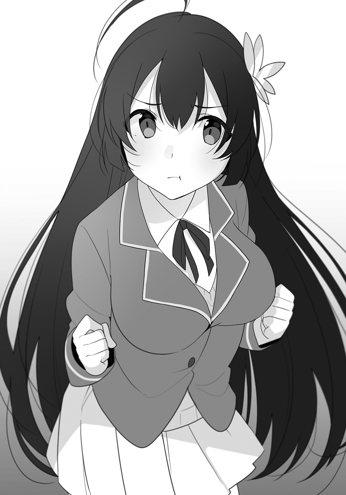
「もー、謙ちゃんは先を促すくせにそうやって話の腰を折って！」
「だから、悪いって言ったろ。すまん、続けてくれ」
「セツナちゃんは、前の日に中身の綿を抜いて、破けたところを修繕して、あとは中身を詰め直せば終わりくらいだったんですけど、それを始めようとしたら急にお腹が空いていることに気がついて、セツナちゃんを手にしたまま台所に向かったんです」
「ぬいぐるみは置いていけばいいのに」
「はい、今考えるとそうなんですけど、つい」
あっはっは、なんか久喜島さんらしいなあ。
「それで、お米を研ごうと思ったんですけど、ふと、セツナちゃんにお米を詰めてみたら、縫い残したほころびとか見つけられるんじゃないかな、って思って」
「まさか、詰めたのか。ぬいぐるみに、米を」
「はい」
うなずく久喜島さんを見て、謙吾は腕を組んで難しい顔をした。
雲林院さんも、眉をひそめている。
「もしかして、それって......」
何かを言いかけた雲林院さんだったが、
「まあ、とにかく先を聞こう」
と謙吾がそれを制した。
「ですわね」
雲林院さんも、素直にうなずいた。
「お米を詰めてみて、詰めた口を仮縫いして、他に破れてるところがないか確認したところで、そういえばお風呂も沸かしてないなって気がついて」
「なんで一つのことをまず終わらせようと思わないのさ」
「すみません、家族にもよく言われるんですけど......」
「もしかして、その仮縫いに使った糸の色は、赤だったんじゃありませんの？」
「はい。仮縫いですし、目立つ方があとで取りやすいかなって」
どういうわけか、謙吾と雲林院さんが頭を抱えている。
「もう、馬鹿じゃありませんの!? なんでよりによって......！」
「まあまあ」
なぜかキレ気味に言う雲林院さんを、謙吾がなだめる。
「永遠ちゃん、続き続き」
「あ、はい。それで、先にお風呂の用意をして、沸くまでの間にご飯を作ればいいかなって思って、お風呂場に行ったんです」
「......だろうな」
「ええ、ですわね。理屈の上では、そのぬいぐるみの中にはお米の他に爪も入っていなければいけないはずですけれど......」
「爪ですか？ いえ、まさか。そのあと研いで炊いて食べるつもりでしたし......」
「あら？ おかしいですわね」
「いや、別説もある。爪の代わりに髪の毛とか血を数滴とか」
「あ、それでしたら」
久喜島さんは、言いながら、絆創膏を巻いた自分の指をみんなに見せた。
「赤い糸で仮縫いしてるときに、指を刺してしまって......」
「マジかよ......」
「血って、もしかしたら爪より力が強いんじゃありませんの......？」
謙吾と雲林院さんが、ますます困った顔でまた頭を抱える。
が、僕と寧々子にはさっぱり事情がわからない。この二人が揃って訳知り顔ってことはその手の話なんだろうけど、いつもは怪談や都市伝説を率先して仕入れてくる寧々子にしては珍しいな。
「それで、お風呂場に行ったら水を張ったお風呂にセツナちゃんを落としてしまって。慌てて拾い上げたんですけど、びしょ濡れのまま持って出るわけにもいかないなって思って、お風呂の準備をしたあと、お風呂場で干しておいたんです」
まあ、確かにその判断は妥当だ。中身が米では絞るわけにもいかないだろうし、そのまま持ってお風呂場を出たら、きっとぬいぐるみからボタボタ垂れる水で廊下や台所が濡れてしまう。
「その後は台所に戻ってお料理を再開したんですけど、野菜を切っているときに、そういえばお米はセツナちゃんの中だった、って気がついて」
「気がつくの遅いな」
思わず言ってしまった。
「はい、すみません......」
「あ、いや、別に責めてるわけじゃないんだけど」
「いえ、よく考えてみれば、干すにしたって中身を抜いた方がきっと乾くのも早かったはずですし、本当に抜けてるなって」
久喜島さんがこつん、と自分の頭を小突くような仕草をする。
......うん、その、ちょっと抜けたり天然だったりするところはあるけれど、それは必ずしも欠点にはならないっていうか、そういうところが可愛く見えたりすることだってあるわけで......痛ッ！
「何するんだよ！」
寧々子につねられた腕を押さえながら、僕は理不尽な暴力に対して抗議した。
「べーつーにー」
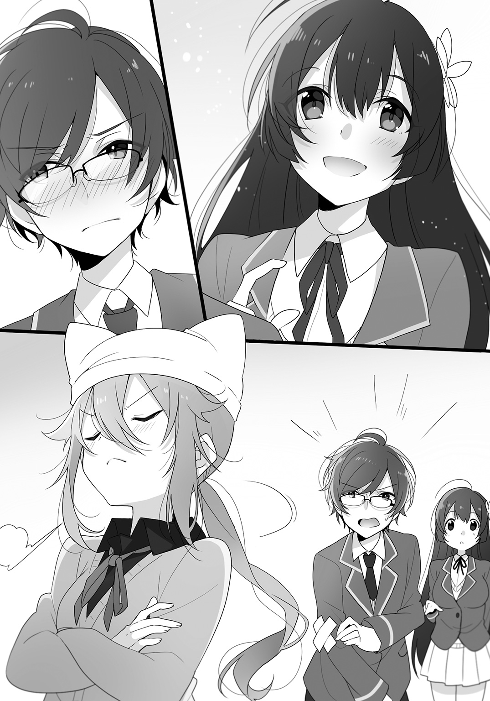
ふん、と鼻を鳴らして、寧々子がそっぽを向く。
......白々しいな。
「そこ、じゃれ合うなら他所でやれ」
「なんだよ、それ」
「なな、何よ、それ！」
僕の声と寧々子の声がピッタリと重なる。
ふう、と雲林院さんが大きなため息をついた。
「永遠子ちゃん、とにかく、話を進めてくださる？」
「はあ。それで、またお風呂場に向かったんですけど、うっかり包丁を持ったままで」
「だろうと思ってたぜ」
「あまりに偶然が重なりすぎていて、張り倒したくなりますわね」
うんうんとうなずく謙吾と雲林院さん。
「さっきから二人だけ訳知り顔だが、どういうことだ？」
「まあ、そう結論を急ぐなよ。あとでちゃんと説明するから、まずは久喜島さんの話を最後まで聞くべきだ」
ずいぶんもったいぶるな。
「なんとなく想像はつきますけど、そのときに何か言ったんじゃありませんの？」
「いえ、そんなことは......。確かに独り言は言っていたかもしれませんけど」
「永遠ちゃん、一人で夜中にお料理やお風呂の準備をしながら独り言って、なんかちょっと怖いんだけど」
「すみません、でも、つい......」
「ちなみに、独り言でどんなことを言ったのか覚えてねえか？」
謙吾に問われて、久喜島さんは少し考え込んだ。っていうか、謙吾はなんでそんなことを気にするんだ。
「ええと、味見してみて『不味っ！』って言ったり、昨日はすっごく安くマグロの尻尾の端っこを魚屋さんから分けてもらったんですけど、これがなかなか切れなくて『とわーっ！』って気合いを入れたりとか、洗面所の鏡を見て、もう少し顔が小さければいいのに、って思って『小顔......』って呟いたり」
深夜に気合いのかけ声とか、近所迷惑になっていなければいいけど。あと、久喜島さんの顔は気にするほど大きくないと思うけどなあ。
「その後にもう一言、何か言ってるんじゃねえのか？」
「ええと......あ、はい。鏡を見て、笑顔の練習をしました。そのときに、『にー、です』って笑顔を作ったんです」
「なるほどな」
「よくもまあ......。もう呆れてものも言えませんわ」
「ここまでくると、もう何か超自然的な力が働いているとしか思えねえな......」
「......？ どういうことでしょう？」
久喜島さんが首を傾げた。僕も、何がなんだか意味がわからない。
「それについては、あとで説明するって言ってますでしょう？」
「あ、はい、そうですね......。それで洗面所からお風呂場に入ったんですけど、つまずいてしまって」
「包丁持ったままでしょ？ 危ないなあ、何につまずいたの」
「いえ、何もなかったんですが」
「なぜ何もないところでつまずくんだ」
「え、敬一郎さんは何もないところではつまずかないんですか？」
ちょっと、マジですか。なんで驚いた顔で僕を見るんですか。
「つまずかないでしょ、普通は」
そして、なぜか尊敬のまなざしで見つめられてるし。
「ほ、他のみなさんは、たまにはありますよね？」
しかし、全員が首を横に振る。
「そんな......」
そりゃないだろうし、なぜそれでショックを受けるんだ。
「それより、続きは？」
思わず、僕まで先を促してしまった。
「そうでした。セツナちゃんは浴槽のフタの上に乗せておいたんですけど、どういうわけかそこになくて」
「ちょ、ぬいぐるみが勝手に動いたっていうの!?」
寧々子が背後に回り、青い顔で椅子に座っている僕の両肩を摑んだ。
いてて、そんなに手に力を入れるな！ 僕の肩はそんなに凝ってない！
「いえ、セツナちゃんはフタの上から落っこちてて、下に置いてあった風呂桶の中に入ってたんです。『セツナちゃん、見つけた』って言って歩み寄ったんですけど......」
「転んだ拍子に包丁がセツナちゃんに刺さってしまったわけだ」
「えっ、そんなことまでわかるんですか!?」
「今回に限ってはな」
「そして、そのタイミングでも何か言ったはずですわよね？」
「はい。ええと、確か......包丁を刺しちゃったセツナちゃんを見て『あーっ！』って悲鳴を上げて、せっかく直したのに、その時つけちゃった傷は結構酷かったので、どう直そうかなって思いながら『継ぎは......』って言ったあと――」
ふむ、継ぎ接ぎの『継ぎ』か。『継ぎは（どうやろうか）』という呟きだったのだろう。
「とにかく、『せっ』って言って立ち上がって」
「......せ？」
僕のみならず、みんながそのかけ声に首を傾げた。
「あ、あれ？ 言いませんか......？ よっこらせの最後の『せ』なんですけど......お祖母ちゃんなんか立ち上がる度に言ってましたけど......」
「かけ声なら、普通は最初の『よ』の部分じゃねえか？ 『よっ』って」
「だよね」
「僕もそう思う」
「ですわね」
「えー」
久喜島さんは不服そうに唇を尖らせた。
しかし、まあ、家庭によってちょっとした習慣の違いはあるもので、親や祖父母などの影響というのはそんな簡単に抜けるものではないし、そもそも変える必要があるものではない。
ましてや、お祖母さんの形見の十字架をカバンにつけて持ち歩いているくらいだから、久喜島さんにとってお祖母さんはとても大切な人で、それゆえに影響力も大きかったのだろう。
「まあ、家族の中でしか通じない文化とか、どの家にも何かしらあるもんだしな」
「あたしの家では今でも喘息のことを『ぜこぜこ』って言うよ」
「そうそう、そういうヤツ。まあ、言われてみればそんな感じの咳が出るかも、とは思うが、いきなり『ぜこぜこ』とか言われてもわかんねえだろ？」
「確かに、ポカーンですわね」
「僕は実際に寧々子のお母さんに『今、寧々子はぜこぜこで寝てて』とか言われてフリーズした記憶があるよ。小さい頃の話だけど」
「そうそう。あのとき、お母さんが『他の家の子には通じないんだ』ってなんか衝撃受けてたよ」
「僕も何を言われたのかわからなくて、衝撃を受けたけどね」
「まあ、その話はそれはそれで興味深いんだが、今は久喜島さんの話だな。先を聞かせてくれ」
「先と言われましても、あとはセツナちゃんから取り出したお米を炊いて、ご飯を食べて、お風呂に入って、布団の中に潜り込みましたけど......」
「独り言はそれ以降言ってませんの？」
「ええと......」
久喜島さんは「うーん」と考え込んで、
「あ！ お料理ができたときに、名前をつけました！」
「ほう、名前を」
「どんな名前ですの？」
「はい、マグロの尾っぽと大根を煮込んだ『ツナの尾煮』です！」
久喜島さんが料理名を宣言した瞬間に、始業を告げるチャイムが鳴って担任の先生が教室に入ってきた。
僕らも含めて、お喋りに花を咲かせていたクラスメイトたちが自分の席へと戻っていく。
やれやれ、一旦話は中断か。
それにしても、魚と大根の煮物なんてかなり基本的な定番料理に思えるんだけど、どうしてそれが『不味っ』ってことになるのだろう。
味付けを間違えたんじゃなければ、魚の下処理がちゃんとできてなかったとかかな。
マグロで作ったことはないけど、ブリとかだと、塩を振ってしばらく置いて、お湯をかけてぬめりや汚れを洗い落とす霜降りをしっかりやらないと生臭さが残るからなあ。
あと、なぜそこでマグロをツナと言い換えた。
マグロと大根の煮物でいいだろうに。
......わからん。
マジで久喜島さんのセンスが独自路線すぎて、ときおり理解できなくなる。いや、個性的なのは素敵なことだと思うけど。
まあ、それはともかく。
朝はこんなふうにタイムリミットを迎えてしまい、話の続きはまとまった時間が確保できる昼休みにまで持ち越されたのだった。
＊
そして昼休み。
「とにかく、食いながら話そうじゃねえか」
謙吾はそう言って、いつもの席にドカッと腰を下ろして、いつものように特大のおにぎりを取り出した。
みんなもそれぞれいつもの席に着いて、お昼ご飯を取り出す。僕も、自分の弁当とお裾分けおかず弁当をみんなの中央に置いた。
「おー！ 今日はミニ春巻きだ！」
寧々子が真っ先に箸を伸ばした。
「んー！ たっぷりの竹の子がシャキシャキだ！」
「こっちの緑色は菜の花ですわね？」
「だな。ベーコンと一緒にバター炒めにしたのか」
一口食べて、謙吾が言う。
「バターの風味とベーコンの脂の甘さがあると、菜の花特有のほろ苦さもだいぶマイルドになりますわね」
「えー。でもさ、やっぱ苦いものは苦いじゃん」
寧々子が不満そうに唇を尖らせる。
「お前なあ、菜の花は栄養価がすごく高いんだぞ」
「敬ちゃん、言ってることが完全にお母さんだよ」
「うるさいな」
「寧々子さん、せっかく敬一郎さんが私たちの身体のことまで考えて作ってくれたんですから、食べなきゃダメですよ」
「あたしは春巻きとこれでいいよ」
と、寧々子は菜の花のバター炒めをスルーして、恒例の玉子焼きに箸を伸ばした。
「お？ おお？ なんか玉子焼きの中にいろいろ入ってる！」
「今日は刻んだタマネギやピーマン、挽肉を混ぜ込んだ具入り玉子焼きだよ」
具がたくさん入ったオムレツというと、スペイン風オムレツのトルティージャとかが連想されるけど、スペインのアレは平らに丸く焼くのが正式だ。あくまでだし巻き玉子型の僕の玉子焼きは、そちらには分類されない。......と思う。
「で、例の話の続きは？」
「おや、敬一郎が言い出すとはな」
朝の話で、久喜島さんのターンが終わって、これから謙吾と雲林院さんによる解説のターンに入るということは、これまでの活動を考えれば予測できることではあった。
正直、久喜島さんのちょっと不思議な日常がどんな理由でオカルトと結びつくのか、興味がないと言えば噓になる。もちろん、信じるに値しない与太話だろうとは思うが、聞き始めてしまった以上、中途半端なところで話が止まっている宙ぶらりんな状態は、なんだか収まりがつかない。
「別に。ただ、一つの話がきちんと終わってないことがイヤなだけだよ」
「まあ、そういうことにしておくか」
まったく、勝ち誇ったような謙吾の言いぐさが癪に障る。
「朝の様子からして、雲林院さんは知ってるんだろうが、お前たちは『ひとりかくれんぼ』って聞いたことはねえか？」
ひとりかくれんぼ？
「その遊びは寂しすぎないか」
「ちょっと！ 今のは聞き捨てなりませんわね！ 世の中には、かくれんぼをする友達もいない子だっていますのよ!?」
え、何、その必死な主張。あ、もしかして......。
「......それはそうか。なんかごめん」
「べっ、別にわたくしのことじゃありませんわ！ あくまで一般論として、そういう子がいることに対して配慮をするべきだと言っただけで......」
「美加さん......」
目元に大粒の涙をいっぱいに溜めて箸を置き、久喜島さんが雲林院さんの手を両手で包むようにガシッと握った。
「わかります、その気持ち！ 私も、巻き込んじゃいけないと思って人付き合いを避けてきましたから......！」
「ちょ、わたくしは別に、一緒にかくれんぼをする仲間に困るようなぼっちだったわけじゃありませんわよッ！」
どうだかなあ。
少なくとも、お札をベタベタ張り付けたカバンや手元首元から覗く包帯やら、持ち歩いているオカルトグッズやらを見る限りでは、この中で一番周りから浮いてしまいそうなのは雲林院さんなのだが。
「まあ、雲林院さんがぼっちだったかどうかはさておき」
「ちょっと！ 違うって言ってますでしょう!?」
ものすごい怖い目で睨まれてしまった。
「じゃあ、雲林院さんはぼっちじゃなかったってことで......」
「じゃあってなんですの!? しかも、じゃなかったことでって！」
あーもうめんどくさい。
「雲林院さんには昔からお友達がたくさんいたと思います。で、謙吾、なんなんだ？ そのひとりかくれんぼって」
「あたし、名前だけは知ってるよ。なんか、やると怖いことが起きる儀式みたいなののことだよね？ 自分からやらなきゃいい話だから、聞かないでいたんだけど」
「まあ、そうだな。すごく大雑把に言えば、寧々子の言う通りだ。やると何か怖いことが起きる儀式っぽい遊びだ」
儀式ねえ。ああ、もうすでに胡散臭い。
「関西や四国の方でコックリさんとともに伝わっていた遊びとも、ある大学のゼミだかサークルだかが噂の広がり方を調べるために意図的に流した話だとも言われていますわね。コックリさん系統の降霊術の一種だとも、自分に対する呪いだとも言われていますわ」
「俺は、ネット上で形成された、さほど古くない怪談である可能性がかなり高いと思っているがな」
ハッキリしてる情報がほとんどないところに、怪しげでそれっぽい怖がらせ要素を山盛りにした感じだな。
「で、その『ひとりかくれんぼ』をやると何が起きるんだ？」
「それが、はっきりしてねえんだ」
「はあ？ なんだ、その、何もかもふわっとした謎儀式は。儀式って言うからには、せめて目的くらい明確じゃなきゃおかしいんじゃないのか」
「その点に関しては、俺も同感だ。本来、儀式ってのは目的があってやるもんだからな。なのに、『ひとりかくれんぼ』は『やると何か怪奇現象が起こる』とか『儀式に使ったぬいぐるみがべつの場所に移動している』とか、曖昧な上にわりとどうでもいい結果ばかりでなあ」
なんだそりゃ。
「でも、失敗したり手順を間違えたりした場合にはかなり危険だとされていますわね」
「し、失敗するとどうなんの......？」
「ケースバイケースだとは思いますけれど、降霊術の一種だとすれば、コックリさんと同じような危険性があると思いますわ」
「まあ、心霊現象を差し引いたとしても、自己暗示的な危険があることは確かだろう。準備や手順が複雑な分、『ヤバい儀式をやっている』という認識は強いだろうからな」
「なんなんだ、そのハイリスク微妙リターンは」
ますますもって意味がわからない。なんでやろうと思うんだ、そんなことを。
「それを俺たちに言われても困るぜ。俺や雲林院さんが考案したわけじゃねえんだから」
「まったくですわ」
「まあ、それはそうだけど」
「まあ、メリットがあるとしたら、『心霊現象』を比較的手軽に体験できる、ってことかもな。興味があるヤツにしたらメリットだろ」
「全然メリットじゃないよ......」
うんざりした顔で、寧々子が言う。
「ですわね」
「とにかく、手順を説明していくぜ。まずは用意するものだが、手足のあるぬいぐるみと米、縫い針と赤い糸、錐やカッターのような鋭利な刃物、爪切り」
「それと、コップ一杯分の塩水ですわね。できれば天然塩がいいらしいですわよ」
ちらほら久喜島さんの話に出てきた道具が並んでるな。
「それらを用意したら、ぬいぐるみに名前をつける」
「永遠子ちゃんのケースでは、クマのぬいぐるみのセツナちゃんには手足はあるでしょうし、昔から呼んでいた名前が最初からあったのですから、条件をクリアしてしまっていますわよね」
「そうですね......」
久喜島さんがうなずく。
それを尻目に、寧々子は玉子焼きに箸を伸ばした。聞くことより食べることに集中して怖さを紛らわす作戦だろうか。
ま、ここまでの話で怖い要素は一切ない気もするけれど。
「で、ぬいぐるみから中身の詰め物を抜いて、米と自分の爪を詰めこんで、赤い糸を使って縫い合わせる」
「......永遠ちゃんがやったことだね」
「......はい。爪は入れてないですけど」
「ちなみに、異説もいろいろあって、爪でなく血や髪の毛としている説もある」
確かに、そんな話をしていたな。針で指を刺してしまったって。
「あと、お米は内臓を、赤い糸は血管を表している、という説もあるそうですわ」
「さすがにそれはこじつけ臭くないかな？」
思わず苦笑してしまった僕だったが、すぐ雲林院さんに睨まれてしまった。
「魔術や呪術では、こうした見立ては重要ですのよ。藁人形を憎い相手に見立てて釘を打ったりするでしょう？」
......よくわからないけど、そういうものですか。
「話を続けるぞ。そして、塩水を用意して、隠れる場所を決め、あらかじめその場所に塩水を忍ばせておく」
「あれ、これは永遠ちゃんやってないよね？」
「はい」
「まあ、これは『ひとりかくれんぼ』を終わらせるために必要なものですから、始めるに当たっては必要ではありませんわ」
「そして、深夜の三時になったら、人形に対して『まずは自分が鬼です』と宣言する。『自分』の部分には、自分の名前を当てはめる。まあ、このくだりについても三回唱えるとか、多少なり説によって差異はあるが」
「ここで、永遠子ちゃんの独り言を思い出してみるべきですわね」
「独り言......ええと、なんだっけ？」
さすがにそこまでは覚えていない。
「味見をして『不味っ』と言い、マグロの尻尾を切るのに『とわーっ』と気合いの声を上げ、鏡を見て『小顔......』と呟き、『にー、です』と笑顔の練習をした、だったな」
「あ、はい」
謙吾はよく覚えてるな。
「これを全部つなぎ合わせると、『不味っ』『とわーっ』『小顔』『にー、です』となる」
「まず、とわーっ、こがお、にー、です......まずとわこがおにです......」
寧々子が呟くように、久喜島さんの発言を繰り返した。
......『まず永遠子が鬼です』か。
「なんていうか、そんな偶然あるもんなのか」
「俺も朝、話を聞いていてそう思ったよ」
「わたくしもですわ」
確かに、頭を抱えたくもなるかもしれない。
「で、そのあと、手順では浴室で風呂桶に水を張り、その中にぬいぐるみを入れる。居間に行ってテレビを点け、砂嵐状態の画面にして目を瞑り、一〇数える」
「うわ、永遠ちゃん、一〇数える以外は全部やっちゃってるね」
「ええ、そうですね......」
「そして一〇数え終わったら、刃物を持って浴室のぬいぐるみのところに行き、『ぬいぐるみの名前』を呼んで『見つけた』を宣言して、そのぬいぐるみを刃物で刺す」
「......永遠ちゃん、それはどれもやったって言ってたよね」
「......はい、結果的にやっちゃってます......」
「そのあとに、『次はぬいぐるみの鬼』と宣言して、塩水があるところに隠れるのですわ。あ、もちろん、さっき言った『ぬいぐるみ』のところはぬいぐるみにつけた名前で呼ぶんですわよ」
「さて、ここで久喜島さんの独り言の第二ターンなんだが......確か、『継ぎは』『せっ！』『ツナの尾煮』だったよな」
「つぎはせつなのおに......」
「マグロをわざわざツナって言い換えたからこそ起きた奇跡だな」
謙吾が笑って言った。
「笑いごとじゃありませんわよ、まったく」
「ホント、なんで永遠ちゃんはマグロのことをツナって言っちゃうかなあ。缶詰でもないのに」
確かに。別にそんな言葉一つで何かが起きるとは思わないけれど、偶然というにはちょっと不自然すぎるし、それ以外の行動もかなり不自然......いや、行動に関して言えば、なんかこう、とんちんかんさ加減が想像できてしまう自分がいたりもするけど。
「久喜島さん、まさかわざとじゃないよね......？」
「違いますよう。咄嗟にマグロって言葉が出てこなくて、先に出てきたのがツナの方だっただけなんです......」
「いや、疑うわけじゃないけど、あまりにできすぎててさ」
久喜島さんがそんなことをわざとやるとは思えないけど、もう冗談としか思えない。
「話を聞きながら、俺たちもそう思って頭を抱えてたってワケだ」
「それより、肝心なのはこの先ですわよ。本来、ぬいぐるみの鬼を宣言したあとは、当然、隠れなければいけませんのよ」
「まあ、かくれんぼならそうだろうね」
言うまでもないが、今まで鬼だった自分が相手を見つけたらなら、今度は相手が鬼になり、自分が見つからないように隠れる。かくれんぼとはそういう遊びだ。
「ひとりかくれんぼには、一時間から二時間で終わりにすること、というルールがありますの。それ以上は危険すぎるから、というのがその理由ですわ」
「謙吾、何が危険なんだ？」
「さあな。ただ、他にも禁止事項は結構あるぞ。終わらせるまでは家の外に出ねえこと、電気は消しておくこと、隠れているときは静かにしていること、とかな。『ひとりかくれんぼ』に創作者がいたとするなら、禁止事項を設けることで緊迫感を出したかったのかもな」
「少なくとも、『鬼』が家の中をうろついていることになっているんですもの、そんな状態を長く放置するのがいいはずありませんわ」
「まあ、儀式ってのは妙な手順や禁則があるもんだしな。ただ、偶然にしても、久喜島さんはかなり近い形で『ひとりかくれんぼ』という儀式あるいはおまじないをなぞってしまい、そして禁止事項をやらかしちまったわけだ。もし雲林院さんが何かを久喜島さんに見たんだとしたら、ほぼ間違いなく原因はそれだろうな」
何も起きていないのに、原因とはこれいかに。
「ちなみに、『ひとりかくれんぼ』を終わらせるにはどうしたらいいんですか？」
ちょっと不安げに、久喜島さんが訊いた。
「隠れ場所に用意しておいた塩水を半分口に含んでぬいぐるみを探し、見つけたらコップに残った塩水をかけて、次に口に含んだ塩水も吹きかける。そして『私の勝ち』と三回宣言して、そのぬいぐるみを燃やして処分して終了だ」
「えっ、燃やすんですか......？」
ビックリしたように、久喜島さんが言った。
「せっかく直したのに......」
「あれ、寝る前に直したの？」
首を傾げる寧々子に、久喜島さんは、
「いえ、今朝、学校に来る前にささっと直しちゃいました」
と笑顔で答えた。
「そっかー。永遠ちゃんは料理はアレだけど、お裁縫は得意なんだねえ」
「いや、自分で作るだけ料理も寧々子よりずっと上だと思う」
「や、敬ちゃん、あたしのことはいいのよ」
......勝手だなあ。
「まあ、人形供養からの着想だろうな。ああいうのって、お焚き上げをするもんだろう？」
謙吾が寺の息子である僕に訊いた。
「うーん、ほとんどは焚き上げだと思うけど、必ずしもそうとは限らないかな。特に最近はプラスチックとか化学繊維が使われてることも多くて、燃やすと有害物質が発生する危険性もあるし」
時代は変わっているのだ。
「人形供養を受け付けている寺社はちゃんと対策を考えてると思うけどね。だから、場合によっては供養だけして、養護施設や学校に寄付したりする場合もあるんじゃないかなあ。調べたわけじゃないから、断言はできないけど」
「なるほど......有害物質は考えなかった」
「でも、やっぱりお焚き上げのところがまだ多いと思うよ。だから、着想がそこからきてるってのは理解できる。ってことは、塩水もお清めの塩かな」
「だろうな」
「あ、知ってる！ 塩って幽霊とかに効くっていうよね！」
「そう言いますわね。今でも、お店の前に盛り塩をしているところもありますもの」
そういうことをやるのは老舗って気がする。料亭とか？ さすがに親に連れてってもらうんだろうけど、このお嬢様は普段どんな店に行っているのだろう。
「いずれにしても、問題なのは、永遠子ちゃんがまだ『ひとりかくれんぼ』をきちんと終わらせていない、ということですわ」
やれやれ、と僕は肩をすくめた。馬鹿馬鹿しい。
でも、久喜島さんは『ひとりかくれんぼ』の話を聞いてしまった。聞いてしまった以上、自己暗示による変調が出ないとも限らない。
精神衛生的な意味でも、区切りはつけておいた方がいいだろう。
「現時点で時間は思いっきり超過してるし、家の外に出ちまってるし、禁止事項を無視しまくりだが......まあ、きちんと終わらせる手続きは踏んでおいた方がいいだろうな」
「ですわね」
「そうだよ、永遠ちゃん。放っておいたら、ますますいろんな幽霊が寄ってきちゃうかもしれないし！」
「まあ、安心と心の平静を買うと思えばいいんじゃないかな」
「......」
全員にそう言われても、久喜島さんは浮かない顔のままだった。
無理もない、形見を持ち歩くほど好きだったお祖母ちゃんにプレゼントされた品ともなれば、相当思い入れも強いのだろう。
そんな大切なモノが、『ひとりかくれんぼ』なんて与太話の中核になってしまうとは、なんとも運のない話だ。
実際、そのあと、昼休みが終わるまで久喜島さんの表情が晴れることはなかった。
＊
「なんだったら、僕らも立ち会おうか？ 『ひとりかくれんぼ』とやらの終了に」
放課後、そう久喜島さんに僕が持ちかけたのは、授業が終わってからも表情から憂いが消えないからだった。
「それがいいかもね。美加ちゃんに見てもらえば、本当にお焚き上げしなきゃいけないかどうかわかるかもよ？」
「ちょっと、わたくしは霊能者ではありませんのよ!? あんまり変な期待をされても責任は持てませんわ！」
「まあ、それでも参考にくらいはなるんじゃねえか？」
「はあ......それはそうですけど......」
「僕にはその理屈がさっぱりわからない」
「えっ、敬ちゃんもそういうつもりで言ったんじゃないの？」
「そんなわけあるか」
僕としては、ちょっとでも不安を和らげたり元気づけられたら、くらいのつもりだったんだけどなあ。
とにかく、そんなこんなで、放課後はみんな揃って久喜島さんの家に行くということになったのだった。
久喜島さんの家は、かなり年季の入った庭付き平屋だった。
庭とはいっても申し訳程度の広さで、パイプの骨組みにビニールだかポリエチレンだかの天幕を被せた簡易的な車庫があり、それだけでほとんどの面積を占めていた。
この地域の一軒家としては庭も家も控えめだ。
「うわ、なんていうか......雰囲気ある感じだね......。この家で深夜に『ひとりかくれんぼ』とか、絶対無理......」
「あら、そうでもありませんわよ」
じっと久喜島家を見つめながら、雲林院さんが言った。
「むしろ、守られている感じがしますわね......」
「もう亡くなってしまいましたけど、お祖母ちゃんが信心深い人でしたから、今も守っていてくれるのかもしれません......」
「いえ、そういうことではなくて......神社やお寺みたいな聖域に近いというか......もしかしたら、風水を効果的に使っているのかもしれませんわね。大きな家具や庭の木や石は、動かさない方がいいかもしれませんわよ」
「でも、そのわりには永遠ちゃんいろんなものに取り憑かれるよね？」
「この世に完全なセキュリティなんて存在しませんわよ。機動隊の盾で拳銃の弾は防げても、ロケット砲や戦車の砲弾は防げないでしょう？」
「ちょ、じゃあ、カシマレイコってロケット砲級なの......？」
「ときおり津島先生に憑依する霊のことでしたら、たぶんもっと上、きっとＩＣＢＭか何かですわよ」
「まあ、実際、マジもんの聖域、敬一郎の家である寺にまで平気でお邪魔してるからな」
「怖っ！」
「馬鹿馬鹿しい以前に脱線しすぎだよ......」
「ええと、とりあえず、どうぞ上がってください。たぶん、この時間だとお父さんもお母さんもまだ仕事ですし、妹も遊びに行ってて誰もいないと思いますけど」
久喜島さんの家の中は、外観に違わず、古い家具や家電が現役で使われているようだった。テレビなども分厚いブラウン管タイプのものが居間に鎮座していた。きっと、大切に使われているのだろう。
なんというか、きっとある程度年配の人は、今僕が感じている年季を昭和の香りなどと表現するのだろう。
そして、久喜島さんの部屋は、思った以上に渋かった。
天井近くの壁には神棚があり、壁には達筆すぎて読めない書の掛け軸、本棚には少女マンガと一緒に、時代小説などが並んでいる。その本棚のとなりにある小さなタンスの上には、いつか探し回った精密なドールのメリーさんと、おそらくはセツナちゃんであろう古いクマのぬいぐるみが寄り添うように座っていた。
「もしかして、ここ、元々はお祖母様のお部屋だったんじゃありませんの？」
「あ、はい、そうです。お祖母様の遺言で、この部屋は死後に私が使えって」
「なるほど、愛されてますのね。どうやら、永遠子ちゃんのお祖母様はかなり高度な知識をお持ちだったようですわね」
「......はい？ 確かに、お祖母ちゃんは聡明な人でしたけど......」
「いえ、そういうことではなくて......とにかく、今は『ひとりかくれんぼ』を終わらせることが先決ではなくて？」
「だな」
謙吾がうなずく。
「えっと、セツナちゃんはどこかな？」
寧々子がキョロキョロと室内を見回した。
「メリーさんのとなりにあるよ。ほら、そこ」
僕がクマのぬいぐるみを指さすと、久喜島さんが「あれ？」と首を傾げた。
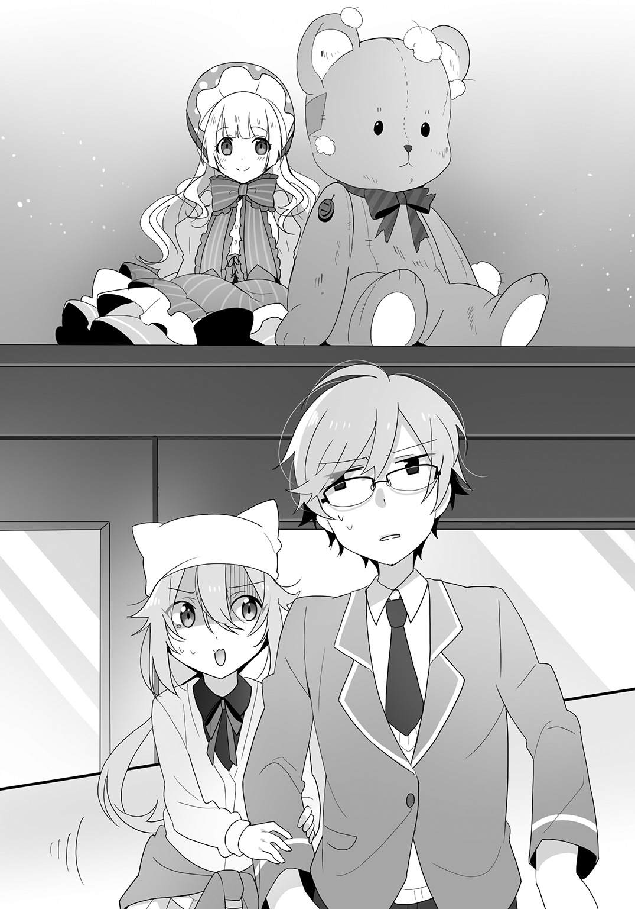
「永遠ちゃん、どうかしたの？」
「あ、いえ、朝はこっちの勉強机の上に置いておいたはずなんですけど......」
久喜島さんの言葉に、目に見えて寧々子の顔から血の気が引いていった。さりげなく脇に寄ってきて、ギュッと僕の制服の袖を摑む。
「ここまでに怖い要素あった？」
「だって、『ひとりかくれんぼ』の鬼だったぬいぐるみの位置が変わってるんだよ!? 充分怖いでしょ!?」
「誰か家の人が動かしたんじゃないの？」
「しかし、俺には、メリーさんとセツナちゃんが仲良く寄り添っているようにも見えるんだがな。雲林院さん、どうなんだ？ このセツナちゃんはヤバそうか？」
「イヤな感じはしませんわね。この家で大切に扱う限りは大丈夫だと思いますわ。でも、焚き上げはしなくても、念のために一度供養はした方がいいかもしれませんわ。敬一郎君のお家にお願いすることはできませんの？」
「うーん、業務として人形供養を受け付けてはいないけど、一応訊いてはみるよ」
「すみません、ご迷惑をおかけします......」
申し訳なさそうに、久喜島さんがぺこりと頭を下げた。
「いや、僕自身は訊くだけだし、気にしないで」
まあ、それで安心してもらえるなら、ね。
「それでも、このままでは他に良くないものが寄ってこないとも限りませんわよ。いやあな予感がします。早く『ひとりかくれんぼ』を終わらせてしまうべきですわ」
「だな。久喜島さん、コップ一杯の塩水を」
「あ、はい」
こうして久喜島さんがうっかりなぞってしまった儀式（？）のようなものは終了し、僕はクマのぬいぐるみを預かった。夜、ご本尊の前で父さんにお経を捧げてもらえるよう頼んでみよう。
これで久喜島さんも安心して、めでたしめでたし――
だと、このときは思っていた。
第三話 猿夢の中へ
翌日。
朝、父さんに供養のお経をあげてもらったセツナちゃんを紙袋に入れて家を出た。万が一、先生に見つかると面倒かもしれないが、授業中は部室に置いておけば問題はないだろう。
「よう」
駅のホームに先に来ていた謙吾が、僕を見て軽く手を上げた。
「おはよう」
「お、寧々子も来たな」
改札の方を振り返ると、確かに寧々子の姿があった。
が――、いつも朝から元気な寧々子の顔は、一目でわかるほど青ざめていた。
それを見て、僕と謙吾は顔を見合わせた。
そして、おはようより先に、
「どうしたの」
「何があった？」
ほぼ同時に、そう声をかける。
僕らの近くまで歩み寄ってきた寧々子は、血の気が引いた顔のまま、
「どうしよう......。あたし、『猿夢』を見ちゃったかもしれない......」
震える小さな声で、そう告げた。
＊
教室に着くまでの間、寧々子はずっと僕の腕を摑んだままだった。
怯えた顔のままで。
いつも明るい寧々子がここまで怯える『猿夢』とはいったいなんなのだろうか。
「イヤな予感はしていましたけど、やっぱり悪いものが寄ってきていたみたいですわね」
教室に入ってきた雲林院さんは、寧々子を一目見るなり深刻な顔で言った。
久喜島さんも、ずっと心配そうに寧々子の周りを「どうしましょうどうしましょう」と行ったり来たりしている。
「久喜島さん、少し落ち着きなよ。それで、いったい何があったのさ。『猿夢』ってのはなんなの？」
僕の問いに、寧々子は「どうしようか」とでも言いたげに、謙吾を見やった。
「そうだな、『猿夢』の説明はあとでやるとして、とにかくまずは寧々子の話を聞かせてもらわないことには始まらねえ」
「うん......」
沈んだ表情と声で、寧々子はぽつぽつと語り始めた。
「昨日の夜、夢を見たの。あたしは遊園地なんかにある列車みたいなアトラクションに並んでて、あ、ヤバいかも、って思って列から離れようとしたの」
なんでヤバいと思ったのかが僕にはピンとこないが、おそらく『猿夢』というのがそういう怪談で、それを知っていた寧々子は似たようなシチュエーションを避けようとしたのだろう。
そう納得して、話の腰は折らないで続きを聞くことにする。
「......そしたら、ボロっちい駅員の服を着たこびと四人に囲まれて、『乗車は拒否できません。速やかにお乗りください』って言われて、無理矢理アトラクションの列車に乗せられちゃって......」
「こびと......？」
僕が首を傾げると、
「うん。あたしの膝か腿くらいまでの背丈で、顔は見えないっていうか......ほら、昔のアニメで、ＳＬみたいな汽車で宇宙を旅するヤツあるじゃん？ あれに出てきた車掌さんみたいに、顔だけは見えないの」
と寧々子は詳しく説明してくれた。寧々子が言うアニメの印象だと、なんだかそのミニ車掌たちはコミカルに思える。
「さすがに夢だとなんでもありだね」
「いや、敬一郎、感想は最後まで聞いてからにした方がいいぜ」
確かに。
僕はうなずいて、寧々子に話の続きを促した。
「アトラクションの列車に乗せられて、席に座らされて、そしたら身体が金縛りみたいに動かなくなって......。それで、車内アナウンスで『次は活け造りぃ、活け造りぃ』って聞こえたときに、あーもう絶対『猿夢』確定だ！ って思ったら、あたしの携帯電話が鳴って、そっちに気を取られた瞬間に目が覚めたの......」
僕は首を傾げた。
本気で怯えている寧々子には悪いが、意味がわからない。
「謙吾、僕にはさっぱりわからないんだけど」
「ああ、まあ、元のネタを知らねえとわからんだろうな」
「ですわね。『猿夢』は有名なネット怪談ですわ」
まあ、そういう類だろうとは思っていた。
「ネットで俺が見た話だと、寧々子が見た夢のように、いわゆる『お猿の電車』的なアトラクションの乗り場にいる、という夢を見る。そこで『この電車に乗ると、怖い目に遭う』というようなアナウンスを聞く」
「ご丁寧な怪談だな」
「だな。だが、怪談の体験者は『夢だとわかった夢の中では、いつでも目覚めることができる』というタチだったらしくてな。まずい感じになったら目を覚ませばいい、と考えて電車に乗り込んでしまう」
「それはまた、怖い物知らずな......」
「まあ、夢だし、そこで引き返したら怪談にならねえしな」
「そして、出発した電車の中では、寧々子ちゃんが聞いたようなアナウンスが聞こえてくるのですわ」
「次は活け造り、っていうあれですね」
久喜島さんの言葉に、謙吾と雲林院さんが同時にうなずいた。
「そのアナウンスのあと、一番後ろの席の乗客が悲鳴を上げるのですわ。何ごとかと振り返ると、男はボロを纏った四人のこびとのような何かに群がられて、身体を切り裂かれ、まさに活け造りにされていたのですわ」
「それはグロいな......」
「そんな、かわいそう......」
僕と久喜島さんがそんな感想を漏らす中、寧々子は僕の側で両手で耳を塞いでいた。
「次のアナウンスは『えぐり出し』で、後ろから二番目の席の客が目玉をスプーンでえぐり出される。順番からすると次は自分の番、アナウンスは『挽肉』、これはまずい、と思って、体験者は必死に目を覚まそうとする。そして、無事に目を覚ますことができてホッと胸を撫で下ろす」
まあ、夢の中でも生きたまま挽肉にされたいとは思わないだろう。僕だってイヤだ。
「そして四年後」
「はあ!? ずいぶん悠長じゃないか」
「俺に言われてもな。まあ、とにかく、体験者は四年後に同じ夢を見る。『えぐり出し』のあたりからな」
「当然、そのあとの展開もわかっていますし、実際同じように展開していきますしで、また同じように目を覚まそうとするのですわ。そして、あ、また目覚めることができた、と思った瞬間に、『また逃げるんですかぁ。次に来たときは最後ですよぉ』というアナウンスが聞こえたそうですわね」
「そして、体験者はまだ三回目の夢は見ていないが、きっと次に同じ夢を見たとき、自分は夢の中で殺され、現実でも命を落とすに違いない、と締めくくっている」
「なるほど、まあ、確かに見たくはない夢だけど......でも、それ、現実にも命を落とすってのは本人がそう思ってるだけで裏付けはないよね？」
「まあな」
「僕が創作者なら、一人目が殺される日と二人目が殺される日を分けて、何らかの形で『夢で見た犠牲者と同じ顔をした見ず知らずの人が、夢を見た日に現実でも死んでいる』という情報を知るようなエピソードを入れるけどな」
「お、なるほど、それは面白いな」
「敬一郎さん、謙吾さんも、寧々子さんは本気で怖がっているんですから、面白がるのはかわいそうですよ」
「あ、ごめん」
「おう、確かにそうだな」
「まあ、とにかく、何も死ぬとは決まっていないじゃないか。特徴的な夢だとは思うけど、死ぬ夢ってのはそれほど珍しくないんじゃないかな」
僕自身、あ、ヤバい、これは死んだ！ と思った瞬間に目が覚めるような夢を見たことはある。
しかも、話を聞く限り、寧々子はその『猿夢』とかいう怪談を知っていたのだ。知識として知っていた以上、それをなぞる形で夢を見てもおかしいことはない。
「でも、寧々子ちゃんからは本当にちょっとまずい気配を感じますわ」
まずはその不安を煽るような発言をやめるべきでは、と思わなくもない。
「所詮夢だし、そこまで極端に怖がることはないと思うけどなあ」
「少なくとも、『猿夢』の話を信じるなら、二回目まで四年空いてるわけだから、今日明日に命の危険があるってことはなさそうだけどな。まあ、猶予があったとしても、具体的な対策は話の中にはねえんだよな......」
「あの、メリーさんやカシマレイコさんに訊いてみる、というのはどうでしょう？ 何かアドバイスがもらえるかもしれませんし......」
それはもはや神頼みレベルだと思うんだけど、そもそも現状で起きていることは「怖い夢を見た」だけなわけで、なんとも雲を摑むような話だ。
「わたくしとしては、あまりオススメは致しませんわ。確かに好意的に接してくれてはいますけれど、あくまで人間とは違う存在ですのよ。こちらの都合で便利に使えるなんて思わない方がいいと思いますわ」
「だな。特にカシマレイコの方は気分屋だし、実際に久喜島さんは被害に遭ってるからな」
謙吾がそう言ってうなずいた瞬間、寧々子の携帯電話が鳴った。
「わっ」
ビクッと驚きつつも、寧々子は電話に出て、二、三言話して携帯電話をスピーカーモードに切り替えた。
『私メリーさん。今、永遠子ちゃんのお部屋にいるの』
「なんてタイミングだよ」
謙吾が苦笑する。
まったく。ちょっと真剣に、この教室か僕ら自身に盗聴器でもついてるんじゃないかと疑いたくなるレベルだ。
「寧々子が電話が鳴って目が覚めた、って言ってたが、もしかして、あれはメリーさんがやったのか？ やられる前に助け出したとか？」
『そう。寧々子ちゃんがかなりやっかいなのに摑まっちゃったのがわかったから......でも、夢の中は私の専門外だから、これ以上は手出しできないわ』
「ちょ、メリーさん、助けてくれないの!?」
寧々子が泣きそうな顔をする。
『落ち着いて、寧々子ちゃん。どのみち、私は電話をかけるくらいしかできないから、ヤバいヤツから助けてあげるなんて無理なのよ。とにかくなんとか時間は稼いでみるから、みんな、その間に対策を考えて！』
ぷつり、と電話が切れた。
「対策を考えて、と言われてもな......」
謙吾が首を捻った。
「でも、事態は切迫している、ということはわかりましたわね」
「だな」
「お願い、助けてよう......」
寧々子が僕の腕にすがりついた。
「わかったわかった。まあ、寧々子が極度の不安を抱えているのは事実だし、それを解消しなきゃいけない、ってことには同意するよ」
「あの、もうなりふり構っていられないんじゃないかと思うんです。ダメモトで、心当たりに片っ端から助けてもらえるようお願いしてみませんか？ カシマレイコさんとか、『ジャンヌ』の店主さんとか......」
「そうですわね......。他にいい案もありませんし、背に腹は替えられませんわね......」
非科学的だし、全然合理的じゃないと思うけど、寧々子がそれを信じている以上、無意味ではない、か......。
不安を抱いている人にいくら「そんなものは存在しない」と言っても意味はない。その人が信じるものに沿って安心を導く必要があるのだ。
それに、他に何か妙案があるわけではない。
謙吾が時計を見やった。もうすぐ始業のチャイムが鳴る。
「今から......は無理だな。昼休みと放課後で当たってみようぜ」
うなずき合う僕らに、寧々子が、
「うう、みんなだけが頼りだよう......」
と懇願するような顔で言うのだった。
＊
結論から言えば、僕らは一日使って、誰の助力も得ることができなかった。
昼休みや放課後に図書室や司書準備室を訪ねて、自称、よくカシマレイコに取り憑かれる霊媒体質の津島響子先生に会ってみたのだが、今日はずっとハッカパイプをくわえて男前を貫いていた。
仕方なく、放課後にブティック『ジャンヌ』を目指した。
僕としては、一洋服店の店主に何をお願いするのかよくわからない。妙なお願いに変な顔をされるのではないか、と思っていたのだが、それは杞憂だった。
そもそも、僕らは『ジャンヌ』に辿り着くことができなかったのだ。
以前に行ったときのことを思い出して薬局を中心に何度も探したのだが、どういうわけかお目当てのブティックが見つからない。
そんなわけで、もう日も暮れようかという頃、僕らは帰り道の方向が違う雲林院さんと別れ、トボトボと駅に向かったのだった。
「まさか、お店が見つからないとは思いませんでした......」
しょんぼりと、久喜島さんがうつむいた。
「もしかしたら、雲林院さんの言う通り、都合よくお願いして助けてもらおうって考え方がよくねえのかもな」
「そんなぁ」
寧々子が泣きそうな顔をする。
「まだ悲観することはないんじゃない？ 夢の話を信じるなら、次は四年後でしょ。まだまだ時間はあるし、怪談では二度目の夢でも無事だったわけだし」
「それはそうだけど......まさか敬ちゃんからそんな言葉が出てくるなんて」
「あくまで信じるなら、と仮定したはずだけど」
「でも、メリーさんの慌て方も少し気になります......」
「そうだな。帰ったら夢にまつわる伝承や言い伝えを調べておくが、明日は少しアプローチの仕方を変えてみるべきだな」
確かに、どうするにせよ、超常的な存在に頼る、なんてやり方よりはいくらかマシだろう。
そう思った瞬間。
――!?
ぞくり、と背筋に悪寒のようなものを感じて、僕は何かを感じた方へ向き直った。
そこには、誰もいなかった。何もなかった。
ただ、夕闇に閉ざされそうな薄暗い路地があるだけだった。
なんの違和感もないし、異変もない、ごく普通の路地。人が隠れられるような物陰も見当たらない。
では、さっき感じた悪寒は、僕の気のせいだったのだろうか......？
何もないことが、逆に言い知れぬ不安感を僕に植え付けていく。
「......さん。敬一郎さん！」
久喜島さんに名前を呼ばれて、僕はハッと我に返った。
「どうした？ まさか幽霊でも見たのか？」
揶揄するように、謙吾が笑った。
「そんなわけないだろ、馬鹿馬鹿しい......」
僕も、だいぶ文類研の面々に毒されてきたのかもしれない。
まあ、それはともかく、こうして僕らはこの日、問題を翌日に先送りして家に帰った。だが、その判断は甘すぎたのかもしれない。
翌日、寧々子は学校を欠席した。
＊
朝、駅で顔を見なかった時点で不安に思った。
それでも、もしかしたら寝坊して乗り遅れたとか、逆に気まぐれで一本前の電車に乗ったとか、単に風邪を引いたとか、そんな事情かもしれないと思った。そうであってほしい、と願った。
寧々子以外の面々が教室に揃い、始業の時間がだいぶ迫ってきても、寧々子はやってこない。
「あの、電話をしてみてはどうでしょう......？」
久喜島さんがそう提案をしたのは、自身が携帯電話を持っていないからだろう。たぶん、所有していたなら、提案するより早く自分でかけていたのではないだろうか。
だが、一抹の不安を拭い去ろうと寧々子の携帯電話にかけてみて、逆に不安以外が消し飛んだ。
電話に出たのは、寧々子のお母さんだった。
そして、オロオロと取り乱した寧々子のお母さんは、
『ああ、敬一郎くん......どうしたらいいのかしら、寧々子がね、どんなに揺すっても目を覚まさないの』
電話の向こうで、そう言ったのだ。
昼休み。
「病院で検査をしてもらったそうだが、睡眠状態にある、以外の結果は何一つ出てねえそうだ」
寧々子の携帯電話にかけてみた謙吾が、おそらくは寧々子のお母さんから聞いたのであろう情報を、自身の携帯電話をポケットに入れながら僕らに伝えた。
「つまり、まだ目を覚ましていない、っていうことですわね」
「ああ」
と謙吾がうなずく。
「謙吾。その『猿夢』とやらでこんなケースはあるものなのか？」
「いや、昨日話したので全部だ。もう俺の知ってる話からは大きく逸脱しているな」
「あの、じゃあ、そういうお話はないんですか？」
うーん、と謙吾も雲林院さんも考え込んでしまった。
「基本的に、夢ってのは主観でしかありえねえ。基本的に都市伝説は『友達の友達から聞いた』みたいな形式で語られるんだが、そもそも夢自体がなんでもありのあやふやなもんだ。夢の時点で、伝聞に近い曖昧さが付与されるからな。さすがに『友達の友達が見た夢の話』じゃあ曖昧すぎてリアリティもへったくれもないだろ」
「ですから、『猿夢』のように、次見たらまずいことになりそう、という終わり方をするのですわね。だって、本当に死んだら語り手がいなくなってしまいますもの」
なるほど......。
「類似の話で『ばりばり』というのもありますわね」
「ありゃ『猿夢』の後追いみたいなもんだろ」
「投稿者は冒頭で違うと仰ってますわよ。信じるかどうかは別ですけれど」
「ばりばり？」
「ああ、そういう怪談があるんだ。ある男が、昔通っていた中学校の夢を見る。そしてトイレで『ばりばりばりばりばりばり......』と書き殴ったメモ用紙を見つける。するとばりばりという音が聞こえてきて、一番奥の個室では、『トイレの花子さん』のようなおかっぱ頭の少女が人の生首をばりばり食べていた」
「なんていうか......食べられちゃった人がかわいそうですね......」
うん、久喜島さんならそう言うと思った。
「そのあと、人食い少女から逃げ回る展開になるんですけれど、その過程で、前にも経験したことがあるのではないか、という既視感を覚えるのですわ」
「しかも、要所に鍵がかかっていたりして、明らかに前回より難易度が上がっている。で、学校を出て逃げ切った、と思った瞬間『今度は殺せると思ったのに』という少女の声を聞くわけだ。そして、起きて忘れる前にこのことをメモしておかなければ、とメモ帳を開くと、そこにはトイレで見つけた『ばりばりばりばりばりばり......』という文字が」
「なるほど、現実とリンクさせてるところは進化型って気がするなあ」
「だろ。そして、三度目は逃げ切れる気がしない、もし寝たまま死んでいる人のニュースが流れたら、それは夢の中でばりばり――その少女に殺された自分かもしれない、と締めくくっている」
「......結局、そのお話でも、どうやったら助かるかはわからないんですね」
「まあ、それがわかってたら先に言うさ」
「ですわね。『寝言に返事をすると夢から覚めなくなる』なんて迷信もありますけど、それも、そうなったときにどうすればいいか、なんて話はありませんものね......」
「まあ、目覚めなくなったら病院の仕事だからな」
「でも、病院任せで寧々子ちゃんが無事に助かる気はまったくしませんわ......」
「「「......」」」
おそらく、雲林院さんの言葉のあとの謙吾と久喜島さんの沈黙は、肯定か同意を意味するのだろう。
僕としても、超常的な原因を信じるわけではないが、伝え聞く検査結果からして、医者もお手上げ状態なのではないか、と思えてならない。
「とにかく、やれることをやるしかねえ。今回は、二手に分かれよう。カシマレイコに気に入られてるっぽい敬一郎と超常現象に縁がある久喜島さんは昨日同様助っ人探しに、俺と雲林院さんは図書室や図書館で資料を探す、って方向で」
ちょっといろいろ言いたいことはあったが、寧々子のためとなれば文句も言っていられない。
藁にもすがりたい、というのはこんな気持ちなのだろう。
謙吾の言葉に、僕も含めて、全員がうなずいた。
そして放課後。
探し物は見つからない。
探し物は、探すのをやめたときに見つかるなんてよく言うけれど、それでは間に合わないかもしれないのだ。
空振りを繰り返して成果を上げられない僕らに、謙吾から電話がかかってきた。
「もしもし、何かわかった？」
『いや、わかったってほどじゃねえんだが......敬一郎、お前、集合的無意識って知ってるか？』
「は？ いや、どこかで聞いたような気はするけど......」
『じゃあ、百匹目の猿は？』
「あ、イモを洗う猿の話か」
『そう、それだ。ある群れで一匹が砂のついた餌のイモを水で洗うことを覚え、群れの中でその行動が広がっていくと、まったく接触がない他の群れでもイモを洗うという行為をする猿が出始める、というアレだ』
まあ、結局は、同じ環境下でイモを洗うという発想が出るまでに少し差があった、というだけの話でしかない気もするのだが。
『各国の神話や逸話などにも多くの共通点が見られたりすることからも、そうした現象は人間にもあったのではないか、と言われている』
「それ、人の意識の根っこには民族や人種を越えた発想の原形みたいなものがあるんじゃないか、って話だよな？」
『まあな。だが、そうした現象から、個体の意識は奥底で全部繫がっているのではないか、という説もあるらしい』
「さすがに眉唾すぎない？」
『だが、そう考えれば、テレパシーやシンクロニシティといったいくつかの超常現象を説明できる』
「眉唾感が超加速した気がする」
『まあそう言うな。そういえば、THIS MANの話は知っているか？』
「は？ この男？」
『直訳すんなよ。これは比較的最近の話で、発端はニューヨークだ。ある女性が精神科医のもとを訪れて、ずっと変な男が夢に出てくる、と言った。その精神科医と女性は男のモンタージュを作成した』
「......精神科でモンタージュを作ったりするの？」
『知らん。まあ、話の流れでそういうこともあるんじゃないのか。で、別の日、まったく別の患者がその女性と同じようなことを訴える。まさか、と思ってその患者ともモンタージュを作ってみたのだが、まったく同じ顔が出来上がった』
「それはまた......」
『話はそれで終わらねえよ。その後も、同じことを訴える患者が続出したんだ。もしやと思ったその精神科医は、その男のモンタージュをネットで全世界に公開した。すると、世界各地でその男を夢で見た、という証言者が現れた。イギリス、スペイン、中国、ブラジル、日本からもな。その数は三〇〇〇以上だったとか』
「......でも、それ、最初の何件かはともかく、公開後は証言者たちが本当にその男を夢で見たのか、それは証明できないよね？ 面白そうだから話に乗っかっておけ、と思った人数が全世界で三〇〇〇なら妥当な数字って気もするよ」
『だが、最初の何件かだけでも充分な数字だろ。まあ、その話は某国の軍が夢を操作する技術の実験をやっていたんじゃないか、なんて憶測が続くんだが、それはさておき――』
「意識が繫がってる説を補強する材料になる、と？」
『まあ、多少はな』
「それでも、常識的に考えると無茶な理屈だと思うけどなあ」
『そもそも、直面している事態が常識の枠内に収まってねえだろ』
それはそうだけど。
「で、それが寧々子の件とどう繫がるんだ？」
『気合いで寧々子の夢に殴り込める可能性が、微粒子レベルで存在するかもしれねえ』
「......」
眉唾感、ここに極まる。
「もし仮に意識が繫がってる説が本当だとしても、気合いでなんとかなる確率って小数点以下のゼロが天文学的な数並ぶくらいの絶望的な数字だよね」
『だがゼロじゃない』
「仮に、の部分がひっくり返ったらゼロだよね？」
『......敬一郎、わかってくれ。無茶でもなんでも、俺たちは諦めるわけにはいかねえんだ』
「それはそうだけど」
有力な情報を見つけられなかった、って素直に言えばいいのに。
まあ、僕らもカシマレイコが憑依したと称する津島先生にも、ブティック『ジャンヌ』の女主人にも会うことができなかったのだから、他人のことは言えないんだけど。
『まあ、収穫がないのは残念だが、もうかなり遅い。今日は現地解散でいいか？』
「わかった。じゃあ、また明日」
電話を切る。
「敬一郎さん、謙吾さんはなんて？」
久喜島さんの質問に、僕は肩をすくめる。
「今日はもうお開き、現地解散だってさ」
「そう......ですよね」
久喜島さんが空を見ながら言った。
もう日はかなり傾きかけている。
「それから、もしかしたらみんなの夢は繫がってるかもしれないから、気合いで寧々子を助けに行けってさ」
「は？ ......はあ」
きょとんとした顔で、久喜島さんが首を傾げた。
うん、まあ、そりゃそういう反応になるよなあ、と苦笑するしかなかった。
＊
その夜。
僕は妙な寝苦しさに目を覚ました。
むくりと上体を起こし、その瞬間、強烈な既視感に襲われる。
――この感じ......。
寝るときに外したはずの眼鏡を、起き抜けだというのにかけている。それどころか、制服を着ていた。さすがに制服で布団に入るなんてありえない。
自分の部屋なのに、どことなく居心地が悪い。
――夢の中か。カシマレイコのときに似ているけど......何か違う気がする。
そう考えたとき、背後に悪寒にも似た気配を感じて、
「誰!?」
と振り返った。
そこには、闇に紛れるように黒衣の女性が赤ん坊を抱いて立っていた。
「貴女は......」
産女......だったか。僕は信じていないけれど、謙吾がそう定義した存在。
ふと、昨日、路地で何か気配を感じたのを思い出した。あの路地は、以前、久喜島さんがあの赤ん坊を預かった場所ではなかっただろうか。
『その節は、お世話になりました』
頭に響くような声でそう言って、黒衣の女性はぺこりと僕に頭を下げた。
「あ、いえ......僕は別に何も」
『この子からは、とても美味しい離乳食をご馳走になったと聞いております』
......離乳食を食べる赤ん坊から何をどう聞いたのだろうか。まだ喋れる歳ではないと思うのだが......。
「あり合わせで急ごしらえしたものです。お礼を言われるほどのものではありません」
だが、黒衣の女性は首を横に振った。
『善意には対価を差し上げるのが私の在り方。今回一度だけ、この子を預かってくれたお仲間の救出にお力添え致しましょう』
「お仲間って......まさか、寧々子のことですか!?」
こくり、と黒衣の女性はうなずいた。
「でも、どうやって......？」
すると、黒衣の女性は不思議そうに、
『害をなしているものが夢の中にいるとわかっているのなら、そこへ乗り込んで叩きのめせばいいのでは？』
と言った。
「それができれば苦労は......」
『でも、もしかしたら、とほんの少しは思っているのでしょう？』
「え......」
『昨日は無理だったかもしれません。でも、今夜なら、貴方の夢は彼女の夢と幽かに繫がっているかも』
「......」
果たして、信じていいものだろうか。
一瞬迷った僕に、黒衣の女性は、
『お仲間を助けなくていいんですか？』
と訊いた。
そうだ。寧々子を助けなければ。
僕が見ている夢の中で寧々子を助けたとしても、現実で寧々子が助かるとは限らない。でも、やっておいて損することもないはずだ。
探し物はなんですか？
決まっている。寧々子だ。大切な幼なじみだ。
夢であろうと幻であろうと、無駄であろうと徒労になろうと、寧々子を助けられるなら躊躇う理由はないはずだ。
「助けます」
キッパリと言い切った僕に、黒衣の女性はうなずいた。
「あ、腕っ節には自信がないんで、仏具か何か持っていっていいですか？」
夢特有のあやふやさがあちこちに見て取れる部屋を見回し、ドアに手をかけて、僕は訊いた。本堂にでも行けば、何か武器になりそうなものくらいあるだろう。
『なるほど、仏様の加護がある道具なら、もしかしたら少しは役に立つかも。でも、急いだ方がよさそうです』
僕は「はい」と返事をして、急いでドアを開け、武器になりそうなものを探すために走り出した。
黒衣の女性に伴われて玄関を開けると、そこは駅のホームのようなところだった。
だが、ホームの先には一切の風景がなく、ただ闇が広がっていた。闇の中に、ただ線路だけがどこまでも伸びている。
『この闇に落ちたら私も貴方を助けられるか自信がないので、気をつけて』
確かに、目の前に広がる闇は深く、落ちたら出てこられないのではないか、という不安を感じるのは確かだ。まあ、夢の中だし、そんなことはないと思うけれども。よもや、この闇の底に落ちて現実でも墜落死することもないだろう。
だが、そうは思っても、この無限に広がる闇から感じる底知れぬ恐怖はなんだろう。見ているだけで心が凍りつきそうになるような、そんなおぞましさを感じる。
『それから、これから貴方のお仲間が捕らえられている列車が通りますが、停車する気はなさそうですので、飛び乗ります。何度も言いますが、落ちたら終わりなので注意してください』
......サラッと無茶な要求をされている気がする。
列車に飛び乗れって、普通は無理なんじゃ......。
しかし、やがてこちらに向かってくる列車が見え始めて、少し胸を撫で下ろした。
ＳＬめいたデザインの先頭車両からして、どこかのテーマパークで走っていそうな代物だった。サイズこそちょっと小さめ程度だが、スピードに関しては僕らが知っている電車には遠く及ばない。
『さあ、飛び乗りましょう。この機を逃すと次はなさそうです』
ガタゴトと音を立てながらホームに向かって走ってくるオモチャめいたＳＬ。その緩慢なスピードよりも、広がる闇の深さの方が、感覚的には恐ろしい。
ＳＬがホームにさしかかる。
『今です』
「うわっ」
黒衣の女性は器用に右手で赤ん坊を抱き、左手で僕の腕を摑んで、先頭車両のタラップに飛び乗った。
女性の細腕とは思えない握力と腕力で、僕までもがタラップに引っ張り込まれる。飛び乗り損ねてあの闇に落ちるよりずっといいが、そのあまりに人並み外れた腕力に圧倒されてしまった。
明らかに人間の筋力ではない。人間ならば、プロレスラー並みに筋肉ムキムキでなければ出しえない力だ。
それとも、夢の中だからこそなのか。
寧々子を助けるのに、強力な味方を求める僕の意識がそうさせるのか。
――人間ではない？
産女、という謙吾が言っていた妖怪の名が脳裏をよぎる。
――いや。
何を考えているんだ。
これは夢。何が起こっても不思議はないのだ。
『さあ、早く客車に』
黒衣の女性に促され、僕はうなずいて客車への扉を開けた。
その先には――
思わず目を背けたくなって、僕はうつむいた。
二人がけの椅子が左右の窓側に全部前を向いて配置された車両内のそこかしこに、赤黒い汚れがべったりと残っていた。
床に。座席に。天井に。
血だ。乾いた、血。
直感的にそれは理解できた。死体は残っておらず加害者の姿もないが、寧々子の話を信じるなら、その想像が間違っているとは思えなかった。
車両が無人であることが、余計に気味が悪い。
『どうかしましたか？ どうやら、この車両にはお仲間も敵もいないようですが』
顔色一つ変えず、黒衣の女性が首を傾げた。
「大丈夫です。これをやったヤツらに容赦は要らない、って再確認してただけです」
そしてもう一つ。
こんなところに長々と寧々子をいさせるわけにはいかない。たとえ夢の中でも、現実ではなくても、こんなところは寧々子には似合わない。
「進みましょう。早く迎えに行かないと......！」
僕は、率先して歩みを進め、次の車両へのドアに手をかけた。
＊
それは、いくつ目の車両だっただろうか。
ドアを開けた瞬間に、寧々子が着信音に使っているポップなメロディが聞こえてきた。
――ここだ。
この車両は、これまでの車両に比べて綺麗だった。血で汚れているのは車両の後方のみ。そして後ろから三番目の席にパジャマ姿の寧々子が座り、その周りを四人のこびと車掌が取り囲んでいた。
小さな車掌たちは手に手に鉈やのこぎりを持っていたが、着信音を嫌がっているのか、寧々子に近づけないでいるようだった。
僕らに気づいた寧々子がハッと顔を上げる。その寧々子の挙動に、こびと車掌たちもこちらを見た。
が、その瞬間には、僕はもう駆け出していた。
駆けながら振りかぶり、
「それ以上寧々子に近寄るなッ！」
手にした仏具を車掌のひとりの頭に力一杯叩き付けようとする。
が、僕に狙われたこびと車掌は小さく「ヒッ」と悲鳴のような声を上げて、頭を抱えてうずくまってしまった。
他の車掌たちも、散り散りに壁際まで逃げて、怯えるように小さくなって身を震わせていた。
慌てて、僕は仏具を振り下ろそうとする手を止めた。
「敬ちゃん......！」
携帯電話を握りしめた寧々子が、泣き腫らした目で僕を見た。金縛り状態なのか、立ち上がるどころか、首から下は指一本動かせないらしい。
「敬ちゃん、敬ちゃん......怖かったよう......」
子どものようにボロボロと涙を零す寧々子の姿に、僕もホッと安堵のため息をついた。
「迎えに来たよ。さ、こんなところからはさっさと出よう」
早口でそう答え、仏具を振りかぶりつつ、
「邪魔をするなら、この仏具で思いっきりぶっ叩く！」
怒鳴って残りの車掌たちを睨みつけた。
「仏具って......それ、バール......」
「寺で使ってる道具なんだから、広い意味では仏具だよ」
寺で父さんが日曜大工をするときに使う、霊験あらたかなバールだ。もちろん、殴ったら痛いだけじゃなく釘だって抜ける。
だが、拍子抜けなことに、こびと車掌たちは怯えたような態度のまま。
『違うんですー、違うんですー』
上ずった声で、それでも車内アナウンス風の口調を崩さない声がスピーカーから流れてきた。
『我々は、人間と仲良くなりたいだけなんですー』
「「......は？」」
僕と寧々子が、異口同音に言った。
「じゃあなんで活け造りとかえぐり出しとかやんの!? マジで怖かったんだからっ！」
『あれは幻覚ですー。人間は、サプライズが好きだと聞きましたので......』
「サプライズで喜ばせる気ゼロじゃんかっ！」
確かに、サプライズにしてはやりすぎだ。
「じゃあ、もしかして、壁や床に飛び散った血みたいなのもフェイクなのか？」
『もちろんですー、もちろんですー』
......やれやれ、なんておかしな夢だ。
少し呆れて振りかぶったバールを下ろす。
すると、こびと車掌たちも、手にしていた武器を捨てて、おそるおそる僕らの方へと歩み寄ってきた。
『誤解も解けたことですしー、この際ですから貴方もー、友達になってくださいー』
「は？ え、いや、そう言われても......」
僕が反応に困っていると、黒衣の女性はまるで食卓の醬油差しを取るくらい無造作に、ひょいっと一人の車掌の首を、赤ん坊を抱えていない方の手で摑んだ。
『調子に乗るでないわ、夢を介さなければ現世に干渉もできぬ若造めが』
僕に向けられる口調とはまるで違う、嘲るような声だった。
『人はここでは生きられぬ。魂がここに囚われれば肉体は目覚めることなく、いずれ衰弱して死に至る。貴様の言う友達は生け贄と同義よ』
「うええ、マジですか......」
青い顔で、寧々子が身を震わせる。
『私の恩人を貴様らごとき若造にくれてやるわけにはいかぬ。縊り殺されたくなくば、潔く諦めよ』
首を摑まれてジタバタ暴れていた車掌が、一層苦しそうにもがく。
その様を喜んだのか、赤ん坊がきゃっきゃと笑った。
黒衣の女性に睨まれて、車掌たちは命乞いをするようにその場で跪いた。
『わかりましたー、わかりましたー』
まるで次の駅名でも告げるような調子で、アナウンスが流れた。
『もう一度言う。この人間たちは私の恩人だ。未来永劫、手を出せばただではおかぬ』
こくこくと、車掌たちがうなずく。
やれやれ、大勢は決したか。
「じゃあ、彼女は連れて帰るから」
ぽん、と寧々子の肩に手を置いて、有無を言わせるつもりなく告げた。
その瞬間、
「え、あ、動ける......!?」
寧々子の身体から、フッと力が抜けるのがわかった。
「ふええ、敬ちゃん、怖かったよう......」
――え。
握りしめていた携帯電話を放り出して、寧々子が抱きついてきた。
いやその、気持ちはわかるが、なんというか......。
フェイクであっても、こんな気味の悪い場所では、嬉しかったり色っぽかったりする気がしないというか、しないことはないが倒錯感の方が先に立つというか......。
いや、そうじゃなくて。
「とにかく、感動の再会も積もる話もここから帰ってからだ」
とんとんと背中を優しく叩いて、しがみつく寧々子を引き剝がした。そして床に落ちた寧々子の携帯電話を拾って手渡す。
『次は、解放ー、解放ー、すぐさまお降りください』
そんなアナウンスが流れて、列車が減速していくのがわかった。
やがて、列車が停まる。
僕らはなるべく車掌から目を離さないように移動し、どことも知れぬ駅のホームへと降りた。
僕らが降りるなり、逃げるように列車は走り去っていく。
「ありがとうございました」
僕は、黒衣の女性に頭を下げた。寧々子も、おそらく事情はわかっていなかっただろうけれど、僕に倣って頭を下げる。
『いえ、恩を返すことも私の性質ですので』
「でもさ、なんかちょっとかわいそうだったよね。怖いのは困るけど、友達が欲しかっただけなんだもんね......？」
「久喜島さんのかわいそうが感染った？」
「そういうんじゃないけどさ......上手いやり方、教えてあげればよかったかなって」
『無理でしょう』
こともなげに、黒衣の女性は首を横に振った。
『人があれの話に恐れを抱く限り、当人たちがそう望んだとしても、あのやり方はそう簡単に変えることはできないでしょう。また人を捕らえ、同じ過ちを繰り返すしかできない哀れな存在です』
「え、そうなの......？」
寧々子がギュッと僕の腕にしがみついてくる。
......まあ、今日は何も言うまい、思うまい。怖い思いをしたあとなのだから、いたしかたない。
それにしても、なんてリアルな夢だろう。寧々子の指の力や、ぬくもり、柔らかさ、髪の毛の感触や匂いまでもがハッキリと伝わってくる。
『ご安心を。今後も、あの者らの害からだけはお守りすると約束しましょう。この子の受けた恩に誓って』
「助かります」
そうは答えたが、だけ、という言い方が気になった。やはり気安く手助けをしてくれるというわけではないのだろう。
そういえば、産女の話は善行に対する報いを説く仏教説話にもなっている、と謙吾は言っていたような気がする。
もしかしたら彼女が言う『私の性質』というのには、そうした伝承の内容も関わっているのかもしれない。
......と、そこまでなんとなく考えて、僕は顔をしかめた。
何を考えているのだろう。
まるで、産女や猿夢のような超常的な何かが存在しているみたいな考え方じゃないか。そもそも、これは夢なのだ。夢の中で体験したことを論理的に考えてどうする。
僕は寧々子を心配していた。そして、謙吾たちが言う超常的な存在の話に連日付き合っていた。だから、こんな夢を見た。
まして、夢の中に乗り込んで助け出す、などと、この夢とまんま同じような話をしていたのだ。多少拍子抜けすることにはなったが、それらの情報と、僕の願望を、睡眠中の脳がこんな形で処理したというだけの話じゃないか。
そう、あくまでこれは夢。
今、こうして寧々子を助けられたからといって、現実で寧々子が救われているとは限らない。
「......敬ちゃん、どうしたの？」
考え込む僕の顔を、寧々子が上目遣いに覗き込んできた。
「いや、別に」
僕は眼鏡の位置を指で直しつつ、寧々子に微笑みかけた。
とにかく、今は助け出せてよかったと思うことにする。きっと、このイメージは目を覚ましたあとにもプラスに作用するだろう。
『では、私はこれで』
ぺこりと僕らに頭を下げて、黒衣の女性は赤ん坊をあやしながら改札を出ていった。
僕らはその背中にもう一度お礼を言って、見送った。
その間も、ずっと僕の腕にしがみついていた寧々子が、
「......ねえ」
と僕を見上げた。
「ん？」
「ありがと。助けに来てくれて」
頰を朱に染めて、なんだか言いにくそうに、寧々子は言った。
「いいよ、別にお礼なんて。僕と寧々子の仲でしょ」
「うん。でもね、ホント、メチャメチャ怖かったの。何度ももうダメだって思って、思う度に携帯が鳴って、それであいつらが怯んでくれて......」
「それ、たぶんメリーさんだ。なんかそんなことを言ってた気がする」
「うん、なんかね、そんな気がしてた。でも、携帯ももう電池がなくなりそうで、敬ちゃんがあと少し遅かったら......」
怖さを思い出したのか、寧々子はブルッと身を震わせた。
「友達になれてたかもな」
「もー、結局死ぬじゃん！」
左手で僕の腕を摑んだまま、寧々子は右手で僕の制服の襟辺りを摑み、僕に自身の額を押しつけるようにして懐の中に入り込んできた。
寧々子が今まで感じていた恐怖が、震えが、ダイレクトに伝わってくる。
「大丈夫。もう終わったから」
「......うん。でも、なんか敬ちゃんが助けに来てくれる気がしてた」
僕に張り付いたまま、寧々子が僕を見上げて「えへへ」と笑った。
「助けに来てくれて、すっごく嬉しかったよ......。でね、すっごくカッコよかった」
その笑顔に、思わずドキッとする。
なんていうか、寧々子が預けてくる身体から感じる震えも体温も、全幅の信頼のような気がして気恥ずかしい。
って、夢の中で僕は何を考えているんだろう。
どうやら照れが顔に出てしまったらしく、僕の顔を見て、寧々子も顔を真っ赤に染めた。
「と、とにかく、僕らも帰ろうか」
「う、うん」
寧々子は赤い顔のまま僕からパッと離れて、
「じゃあね、敬ちゃん！ また明日ね！」
と手を振りながら、改札の方へと駆けていった。
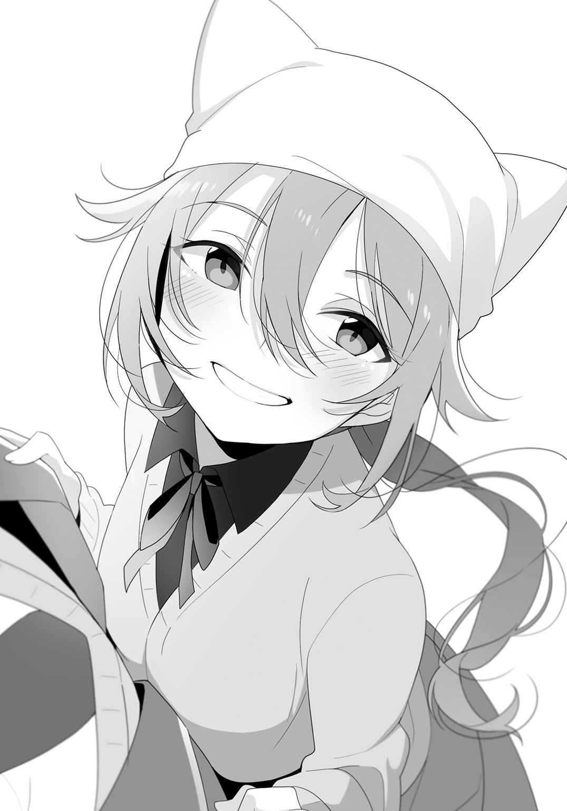
「うん」
と返事をしつつ、僕は仏具――バールを肩に担いだ。
現実でも、こんなふうに上手くいくといいんだけど。
そう思いながら、僕も歩いて改札を出た。
＊
翌朝。
寧々子が目を覚ました、と伝えるために寧々子のお母さんが電話をしてきてくれた。
僕はそれを聞いてホッと胸を撫で下ろしたわけだけれど、あんな夢のあとで寧々子が目を覚ました、という符合がなんだか不思議だった。
まあ、もちろん、偶然に決まっているわけだが。
「......そこでね、バールを持った敬ちゃんが颯爽と登場して、バールを構えて『寧々子にそれ以上近づくなーっ！』って！ しかも、敬ちゃんを連れてきてくれたのが、なんと、あのときの産女の母子だったの！ もうビックリだよ！」
教室でみんなに熱弁を振るう寧々子を見るに、もう安心だろう、と思う。
そのくらい寧々子はケロッとしていて、いつもの寧々子だった。いかに怖くても、所詮は夢。醒めてしまえば、まして聞き知っている物語のパターンを打破したとなれば、もう怖くはないというわけだ。
いや、それで良いのだと思う。
だって、所詮は夢なのだから。
雲林院さんも、どういうわけか、イヤな気配は消えた、と言い出して、どうやら僕らを振り回した『猿夢』事件は、現実には何も起こらないままに終結したようだった。
寧々子が語る夢の内容は僕が昨日見た夢とかなり似通っており、そのことに触れる度に謙吾たちが何か言いたげにニヤニヤするのがちょっと気に入らない。
「よう、まさか敬一郎が本当に集合的無意識の向こう側まで助けに出向くとは思わなかったぜ」
「単なる偶然だよ。偶然、似たような夢を見たってだけのことさ。寧々子は怖い夢から誰かが助けてくれることを望んでいただろうし、僕も『猿夢』の話は聞いていたし、寝たままの寧々子をなんとか助けたいと思っていた。同じような夢を見る下地はあったし、そう不思議な偶然じゃない」
「またお前はそういうことを......」
「でも、素敵ですよね。夢の中にまで助けに来てくれるなんて」
「あら、今回はたまたま寧々子ちゃんだっただけで、きっとそこの色男は永遠子ちゃんのことだって助けに向かうと思いますわよ？」
「本当ですか!?」
キラキラした目で、久喜島さんが僕の顔を覗き込んできた。
「だから、助けた覚えなんかないってば。もちろん、誰がピンチでもできることがあるなら全力でやるけどさ。もちろん、久喜島さんでも」
嬉しそうに、真っ直ぐに向けられた久喜島さんの天使のような笑顔がまぶしい。
それがなんだか照れ臭くて、僕はプイッとそっぽを向いた。
その反応が面白いのか、謙吾や雲林院さんがニヤニヤと笑う。
......ちっ、こっちはなんだか面白くないぞ。
なんだか癪に障ったので、今朝目覚めたらなぜかバールを握りしめていたことは言わないでおくことにしよう。
いずれにしても、あんな悪趣味な夢の中へは、もう二度と行きたくない。
第四話 くねくねしたもの
今日は、朝から寧々子がご機嫌だった。
昼休みも、そして放課後になってもご機嫌だった。
理由は明白だ。
「だから！ あたしは、ゴールデンウィークは、今から遊びの計画を立てて有意義に過ごすべきだと思うのよ！」
部室に入るなり、寧々子はそう宣言したのだった。
「それはもう何度も聞きましたわ」
そう言いながらも、雲林院さんもどことなくソワソワしているように見える。雲林院さんも、もしかしたら内心では高校生活最初のゴールデンウィークを楽しみにしているのかもしれない。
「遊ぶ遊ぶって言うけど、寧々子は何をしたいのさ」
「だからね、敬ちゃん、それを今から話し合うんだよ！ 文類研第一回総会議だよ！」
「最初の総会議が遊びの相談とは情けねえな」
謙吾が苦笑する。まったく同感だ。
「では、せめてフィールドワークとか合宿ということにしてはどうでしょう？」
「えー」
久喜島さんの提案に、寧々子が不満そうに膨れっ面になった。
「なんか楽しくなさそうだよ」
「あ、いえ、あくまで建前で......。私も、お金ないんで、本当に合宿旅行とか計画されてもちょっと困りますし......」
「あ、でも合宿いいじゃん！ 楽しそう！」
「ゴールデンウィークの直前になって旅行なんか計画しても、宿なんか取れないと思うけどなあ」
「ですから、本当に旅行を計画されても......」
不安そうに言う久喜島さんだったが、その言葉を遮って、
「ふっふっふ、あたしにいい考えがあるよ！」
と寧々子が貧相な胸を張った。
そして、にひー、とイタズラっぽい笑みを浮かべて僕の方を見る。
「な......なんだよ」
「昔よくやったじゃん、お泊まり会。敬ちゃんの家で」
「ありゃ敬一郎の家でというか、寺でというべきだろう」
「だね。地域の子ども会とかの行事として引き受けてるわけだから」
主に夏休みなどだが、そうした催しを開くのも寺のお仕事なのだ。
基本的には近隣の子ども会から頼まれるわけだが、たまに県外の学校や地域団体、施設などから頼まれたりもするらしい。もしかしたら、同門の他のお寺からの紹介とかもあるのかもしれない。
何をやるかは毎回違うが、みんなでザリガニを釣りに行ったりカブトムシを捕りに行ったりすることもあれば、竹トンボを作ったりなんてことをする場合もある。そしてみんなで協力してご飯を作り、夜には肝試しをして、本堂に布団を並べて寝る。
こうしてやることを列挙するとなんてことはない行事だが、これだけのことでも仲間と一緒だとワケもなく楽しかったりするものだ。
「でも、高校生にもなってお泊まり会もないでしょ。さすがにこの歳になったら、本堂で雑魚寝ってわけにもいかないし」
「まあ、ほら、そこは少人数なんだし、臨機応変に客間の一つも貸してよ」
「厚かましい物言いだなあ」
「まあ、ほら、ものはついでって言うじゃん？」
「その言葉、微妙に意味が通らない上に、前の言葉を何一つ和らげてないよ」
言いながらも、僕は携帯電話を取り出して自宅に電話をかけた。我ながら、優しいことだと思う。
僕は電話に出た母に『合宿』の話を伝え、予定の混み具合を確認してもらって、電話を切った。
「ゴールデンウィークの前半は立て込んでるけど、後半ならＯＫだってさ」
あっさりＯＫを出す我が家も我が家である。
「やったね！」
「あの、敬一郎さん、ご迷惑なのでは......」
「そうですわ。よろしければ、我が家の別荘を使えるようお父様にお願いしてみてもよろしくてよ？」
「うへえ、別荘!? 美加ちゃん家ってそんなにお金持ちなの!?」
「別に、お金持ちと言うほどではありませんわ。ちょっと歴史が古いだけですわよ」
田舎の旧家ってのは、何代か遡ると本当にその土地の支配者だったりするから、ときとして洒落にならない金持ちだったりするんだよなあ。
そもそも、別荘をお持ちの時点で我ら庶民とは違うことが明らかである。
「いや、もう了解も取れちゃったし、みんなさえよければうちは問題ないよ」
「とにかく、これでゴールデンウィークの予定は決まったね！」
いぇーい、と寧々子はＶサインを天井に向かって突き上げた。
それでも、本当にそれでいいのだろうか、と少し申し訳なさそうな顔のままの久喜島さんに、
「ま、昔からこんな感じだから」
と苦笑いしながら言った。
「うちの家族も客人は歓迎するタチだし。あ、でも、完全なるお客様扱いは期待しない方がいいよ」
「はあ......」
「どういう意味ですの？」
首を傾げる二人を見て笑いながら、謙吾は、
「さて、ゴールデンウィーク後半の予定は決まったが、問題は前半をどうするかだな」
と思案顔で言った。
「ピクニックとかどうだ？ ちょっと面白い場所に心当たりがあるんだが。電車代は少しかかるが、カラオケやゲーセンで遊ぶよりはずっと安上がりなはずだ。この際、弁当も敬一郎に人数分作ってきてもらえば飯代も浮くしな」
「あ、敬ちゃん、あたし鶏唐がいいな！ 塩味のヤツ！」
「お前ら、どこまで厚かましいんだ。あと、さすがに休みの日の弁当は材料費くらい出してくれても罰は当たらないと思うんだけど」
呆れ気味にため息をついて、眼鏡の位置を直す。
「やっぱり、そこまでおんぶに抱っこだとご迷惑ですよね......」
心底申し訳なさそうに、久喜島さんが言う。
「あ、いや、久喜島さんは遠慮しないで。金払えなんて言わないから」
「ちょっとぉ！ なんで永遠ちゃんにばっか優しいのよっ！」
「お前らはもう少し遠慮とか感謝の気持ちを持てって言ってるの！」
まったく、親しき仲にも礼儀ありって言葉を知らないのか。
＊
そんなこんなで日は巡り、ゴールデンウィークがやってきた。
全国でも有数の雪国であるこの辺りは、同時に有数のお米の産地でもある。
現に、電車の車窓を流れていく景色は青々とした田んぼばかりだった。
延々と続く田園風景というのは、都会の人には何かしらの感動を与えるのかもしれないけれど、日々をそこで過ごしている僕らにとっては見慣れた退屈な風景だ。
「......でさー、昨夜もメリーさんがね、お泊まり会には連れていけってうるさいのよ」
「寧々子、まだメリーさんと電話でやりとりしてるの？」
「だって、かかってくるんだもん。ガールズトークとマンガの話ししてるだけだし、確かに最初はちょっと怖かったけど、慣れると普通の友達と変わんないよ」
「まあ、メリーさんには特に危害を加えられたわけじゃねえからな」
「危害どころか、私と敬一郎さんは地下倉庫で助言をもらっていますよ」
「そうだよ！ あたしだって夢の中で助けてもらったし！」
それについては、感謝の気持ちはあるのだが、僕としてはそもそも超常的なことを認めたくないわけで、夢の中の話を持ち出されても困ってしまうというか複雑だったりする。
「むしろ、ヘタに機嫌を損ねて怒らせる方が怖いかもしれませんわね」
「確かにな。何しろ相手は人間じゃねえんだ、わざわざ要らないケンカを売るのは得策じゃねえな」
「......だから、その前提がおかしいんだって。そりゃまあ、悪い人ではないんだろうと思うけどさあ」
たとえ電車の中でも、いつもの面々が揃えば会話の内容もいつもと変わらない。
とはいえ、みんな私服姿なのはちょっと新鮮だ。
久喜島さんは白地に黒のドット模様が入ったヒラヒラしたシャツに、シンプルな黒のスカートという出で立ちだった。白系のシャツは、久喜島さんの長くて綺麗な黒髪がとてもよく映える。
寧々子はいつものニット帽にデニム地のワンピース。靴もスニーカーというカジュアルさだった。おてんばの寧々子らしい服装だ。
雲林院さんは濃い青が印象的なワンピースだった。襟と袖口だけが白いデザインだが、その首元と手首のところは几帳面すぎるほどにピシッと留めている。きっと、その下にはいつものように経文が印刷された包帯を巻いて身を守ろうとしているのだろう。
僕はといえば、Ｔシャツとジーンズ、その上に適当にパーカーを羽織った程度。なのに、謙吾はこじゃれたジャケットをラフに着こなしたりしていやがる。お前、いつからそんなオシャレさんになったんだ。
まあ、それはともかく。
「お、次で降りるぜ」
「結局、謙吾は僕らをどこに連れていくつもりなんだよ」
「行きゃわかる」
何度訊いても、これの一点張りである。
僕らが降りたその駅は、とても小さな、そして閑散とした駅だった。無人駅でないだけマシ、というくらいの。
駅ビルどころか、申し訳程度の待合室があるくらい。駅の前にはロータリーもタクシー乗り場も商店街もない。
あるのは駐輪場と小さな商店が一軒、そしてまばらに見える民家以外は一面の田んぼだけという有り様だった。ここで降りたのも僕ら以外に数人だけだ。
「何もないみたいだけど、一体どこにピクニックに向かう気なんだ......？」
「ピクニックなんかどこでもできる。目的地までちょっと歩くから、それで兼ねるってことでいいだろ」
「それはピクニックって言えるんでしょうか......？」
「言いませんわよね......」
「まあまあ。謙ちゃんのやることはいつもこんなもんだから」
「つまるところ、言ったら誰かが嫌がるような目的地を設定したんだな、謙吾は」
ちらり、と寧々子の方を見たが、何？ みたいな顔で首を傾げられてしまった。
......気付こうよ、短い付き合いじゃないんだから。絶対に謙吾は心霊スポットか何かに連れていこうとしてるぞ。
「山を歩くのも人工林を歩くのも田園を歩くのも似たようなもんだろ」
「謙吾、その理屈は強引すぎるだろ」
「まあ、一応は部活の延長のつもりなんだから、何もないところに行くよりは、見るべきモノがあるところに行った方がいいと思わないか？」
まったく、ああ言えばこう言うなあ。
「ま、とにかく、話は歩きながらにしようぜ」
そう言って謙吾は先頭に立って歩き出した。
が、雲林院さんはずっと今降りたばかりの駅を見つめていた。
「......この駅名、どこかで......」
「美加ちゃーん！ 置いていかれちゃうよー!?」
寧々子に呼ばれた雲林院さんはようやく小さな駅舎から目を離して僕たちを追ってきたけれど、それでも何度か振り返って駅を気にしていた。
「なんか、くねくねでも出そうな光景だよねー」
道路の両サイドに広がる青々とした田んぼを見回しながら、寧々子が言った。
「ですわね。あんまり田んぼの方は見ない方がいいですわよ」
「あの、くねくねってなんですか？」
久喜島さんが訊いた。
「田園や海岸で出るっていう妖怪みたいなもんだ。チラッと見るくらいなら問題ねえけど、しっかり『それがなんなのか』を認識すると精神が崩壊するそうだから注意な」
「くねくねを見て精神を壊された者はくねくねと変な動きを始めて、やがてくねくねになるとも言われていますわ」
「そんなのがホントにいるなら、危なくて農家の人たちは仕事なんかできないと思うけどなあ......」
そんな話をしつつ田園風景の中をのんびりと三〇分ほど歩くと、道路の先に見えてきたのは大きな山門だった。
「ここには、昭和四〇年代の水害で亡くなった人たちを弔うために建立された観音像があってな」
謙吾の説明に、雲林院さんがハッとした。
「思い出しましたわ！ ここ、『童女石』があるところですわよね!?」
が、雲林院さんに食ってかかられても、謙吾はどこ吹く風でニヤニヤ笑っている。
「美加さん、ここのことを知っているんですか？」
「知ってるも何も、我が県有数の心霊スポットですわよ！」
「えーっ!? ちょ、謙ちゃん、どういうことよ!?」
「どうもこうもねえよ。一応は文類研の活動の一環って建前なんだから、史跡の一つも巡っておくべきだろ。幸い、ここは拝観料とかも要らないし」
「まあ、廃屋だの病院跡みたいな単なる心霊スポットだったら僕も呆れたと思うけど、ここの観音像には建立にまつわる原因や信仰心があるんだし、少しは見る価値はあるんじゃないかな」
「お、話がわかるな。敬一郎の言う通りだ」
「あと、怖がることはないと思うよ。仮に、あくまで仮に幽霊だの霊魂だのが存在するとしても、それを鎮めるために立派な観音像を建てて長い時間祈っているのなら、もう死者たちはとっくに慰められているだろうからね」
「おう、さすが『寺の息子のＴ』の言うことは違うな」
「僕の主義信条はともかく、仏教をあんまり軽く見られても困るからね」
実際に御利益があるかどうかはともかく、霊魂に観音様が簡単に負けると思われても困ってしまうのが我が家の商売だ。や、商売って言ったら語弊はあるのかな......？ 家業であることは間違いないけど、宗教だしなあ......。うーん、難しい。
「確かに、心霊スポットとはいっても、『童女石』という不思議な石が祭られているというだけで、幽霊が出るとか怪奇現象が起こるとか、そういう話は聞きませんものね」
「そ、そうなんだ......」
ホッとしたように、寧々子が胸を撫で下ろす。どんだけ怖がってたんだ、お前は。
「で、ここではその『童女石』とやらを見るのか？」
「ああ。ここの建築物はさっき言ったとおり歴史的に価値があるってわけでもねえからな。まあ、ここの観音立像は青銅製のものとしては日本一の大きさだっていうし、それは見ておくべきかな」
「へー、そんな立派なものがうちの県にあったんだねー」
「地元の観光地って、超メジャーなところでも案外行かないもんなあ。まして、ここは決して超メジャーってわけじゃないだろうし」
「あら、ここは心霊スポットとしてはかなりメジャーですわよ」
そうだったのか。
「そもそも心霊スポットってのがメジャーな括りじゃねえよ」
苦笑しながら、謙吾は先に立って山門をくぐった。
阿吽の仁王像の間には、唐獅子の像をあしらった銅製の香炉があり、線香の香りを漂わせていた。
すでに観音様のお姿が木々の合間に見えていて、そこへと続く広い石段が伸びている。
右手には小さなお土産屋があったが、シャッターが閉まっていた。もう営業はしていないのだろうか。
「さて、お目当ての『童女石』は左側の建物の中だが、まずは観音様に手を合わせておくべきかな？」
謙吾が僕に向かって訊いた。寺の息子への配慮だろうか。
「そうだね。仏様はその程度の無礼で腹を立てるほど心が狭くないとは思うけど、水害で亡くなった人たちには礼を失してはいけないと思う。そこに手水舎があるから、口をすすいで手を清めてからお参りしよう」
「あれ？ 敬ちゃん、霊魂は信じてないんじゃなかったの？」
「信じてないよ。でも、それは死者に対して敬意を払うこととは別の問題だよ」
「敬一郎らしい物言いだな」
「私も、まず観音様にご挨拶するべきだと思います。亡くなった人たちにも手を合わせるべきだと思いますし......」
「うん、あたしもそうした方がいいと思うよ」
「わたくしも、いたずらに死者にケンカを売る気はありませんわ」
というわけで、手水舎を経由して、石段を登って観音像の前へ。
見上げるほど大きな観音立像は、とても端整な顔立ちをしていた。細部も精緻に作り込まれ、木々に囲まれた中で合掌するその姿は、事実、死者のために祈りを捧げ続けているように見えた。
僕らは、黙って観音像に手を合わせ、一〇秒ほど瞑目した。
そして石段を降り、目的のものがあるという、八角形の特徴的な御堂に入る。
さほど広くない御堂の中は、山門以上に線香の香りが立ちこめていた。
仏壇の前、硝子ケースの中に鎮座しているその石は、拳くらいの大きさだった。思っていたより小さい。てっきり、頭くらいの大きさはあると思っていたのに。
「これが、水害で亡くなった少女の姿が浮かび上がっているという『童女石』だ」
謙吾に言われて、石をまじまじと見てみるが、これのどこに童女の姿が......？
「うーん」
僕は見る角度を変えたりしてみるが、ちょっと期待外れと言わざるをえなかった。
「ここじゃありませんの？ ほら、ここが髪の毛で、ここが目で」
「えー？ 確かに言われればそう見えないこともないけどさ......」
「このくらいの模様なら、河原でも探せば見つかりそうですよね」
他の面々も、反応は僕と同様だ。
「まあ、確かにな。でも、こっちに発見当時のこの石の写真があるぜ」
謙吾が指さしたのは、『童女石』の硝子ケースの横にある額縁だった。
「......ッ！」
その写真を見て、正直、背筋を寒気のようなものが走り抜けていくのを感じた。
写真の中の石には、ハッキリと少女の白い顔が見て取れた。
「うひゃあっ」
写真を見るなり、寧々子が僕にしがみついてくる。
「でも、この石からも、写真からも、イヤな感じはしませんわよ」
「私も、ちょっともの悲しいような、そんな印象を受けます......」
見ようによっては笑っているように見えなくもないが、確かにおぞましいとか、怖いとか、そういう感じとは少し違うかもしれない。
「どうも、今はこの顔もだいぶ薄くなってしまっているみてえだな。もしかしたら、長いことここで供養されて、未練や無念の思いが薄まってるのかもしれねえな」
「いや、ただの化学変化だと思うけど」
「でも、時間の経過で石の模様が変わるなんて、あるんでしょうか......？」
「根拠があるわけじゃないし僕も詳しくはないけど、酸化とかそういうので色が変わるような鉱物があってもおかしくないんじゃないかな」
「科学的な理由付けも結構ですけど、わたくしは供養説を支持したいですわ。こうして長く大切に供養されているということは、残された人たちの優しさと温かさの証明ですもの」
「うん、あたしもそう思う」
「まあ、現象に物語を見出すのは人間の性だな。そういう気持ちが伝承になって今に伝わっていると思えば、やっぱそこにはロマンを感じるよな」
ロマンねえ。
「ぶっちゃけ、俺は幽霊やら化け物が実在してようがしていまいがあんまり関係ねえんだ。いた方が面白えとは思うが、俺が興味あるのは、そうした逸話を脈々と伝え続ける人々の営みと文化だからな」
「お前、それが霊魂を慰める場と観音様のお膝元で言うことか。僕が指摘するのもどうかと思うけど」
「なんていうか、どっちもどっちですね......」
久喜島さんが苦笑した。
「ホントにねー」
「まったく、そのうち罰が当たるか祟られるかしますわよ、きっと」
バカを言ってはいけない。ありもしないものが人間に影響を与えることなど、あるはずがないのだから。
＊
近くの道の駅に併設された公園の芝生の上でお弁当を広げて、ランチタイム。
唐揚げが食べたい、という寧々子のリクエストがあったので、塩麴と生姜を使って仕上げた唐揚げをメインに、マカロニサラダと、たくあんや白菜漬けなどのお新香各種、そしてキノコと新竹の子の炒めもの。新竹の子は、時季的に今年はこれが最後だろうなあ。
それと、食べやすいように小さめに握ったおにぎりには、冷凍してあった猪チャーシューを刻んで味をつけ直したもの、自家製の鮭フレーク、小さく切ったチーズと鰹節を和えて醬油で味付けしたチーズおかか、さっと炙った明太子などを具に入れてある。
「このサイズのおにぎりってのも、一口で食べられていいな」
「確かに小さめに握ったけど、一口はおかしい！ っていうか、謙吾のいつものおにぎりが大きすぎるんだよ！」
「塩唐揚げ、んまーい！」
そうかそうか、リクエストした当人に喜んでもらえるのは何よりだが、お前は野菜もちゃんと食べなさい。
「あ、チーズと鰹節っておにぎりに合うんですね......」
一口おにぎりを齧って、驚いたように久喜島さんが言う。
「意外とね。チーズは思った以上に日本食と相性がよくて、味噌漬けにしても美味しいんだよ。どっちかっていうと、味噌漬けはお酒のつまみ系だけど」
「チーズがですか!? それはホントに意外です......」
「チーズはかなりの汎用性がありますから、和食系の創作料理なんかではとてもよく使われますわよ」
「だね。明太子とも相性がいいから、こっちのおにぎりに入れても美味かったと思うよ。チーズおかかと被るから、明太子はシンプルに単品で握ったけど」
「この鮭のフレーク、市販品じゃありませんわよね？ 柔らかさとしっとりした感じが段違いですもの」
「うん、自家製。フライパンで鮭の切り身をお酒とみりんで軽く煮て、ほぐしながら塩で味付けしたんだ。あとは水分が飛んだら完成。隠し味はゴマ油」
フライパンひとつで手軽にできるわりにかなり美味しいし、常備菜としてストックしておくと何かと便利なのだ。
僕もその鮭のおにぎりを一口食べて、出来に納得して「うん」とうなずいた。変わり種もいいけど、こういうのが最終的には一番落ち着く。
「えっ、鮭のおにぎりもあったんですか......？」
驚いたように久喜島さんが言った。
「え、うん。この列は全部鮭......」
そう言って大きな弁当箱を指さそうとして、絶句した。
すでに鮭おにぎりが全滅している。いや、他のおにぎりも残り少なかったけど。マジか、かなりの量を作ってきたのに。
「あ、ごめんごめん、永遠ちゃんまだ食べてなかったの？ 知ってたら三つも食べなかったのに」
「すまん、俺も四つ食っちまった」
謎はすべて解けた。犯人はお前らか。まったく......。
「あ、いえ。残念ですけど、別に......」
そう遠慮する久喜島さんと、自分が手にしたおにぎりを見比べる。
「僕が一口食べちゃったけど、これでよかったら――」
僕が久喜島さんにおにぎりを差し出すと、言い終わる前に、
「あーっ、ずるいっ！」
と寧々子が叫んだ。
「いや、寧々子は鮭のは三つも食べたんでしょ」
「そ、そうですよ。寧々子ちゃんはたくさん食べたじゃないですか」
「そうだけど、そういうことじゃないっていうか......！」
何を言ってるんだ、お前は。
「つまり、二人は敬一郎君の間接キスを取り合っている、ということですわね？」
雲林院さんに冷ややかに言われて、
「なっ、ちがっ......！」
「そ、そそ、そういうわけでは......！」
二人は顔を真っ赤にしてうつむいてしまった。
いや、冗談じゃない、巻き込まれた僕こそ逃げ出したいんですけど！
「で、このおにぎりはどうするの......？」
二人は、うつむいたまま首を横に振るのみだった。
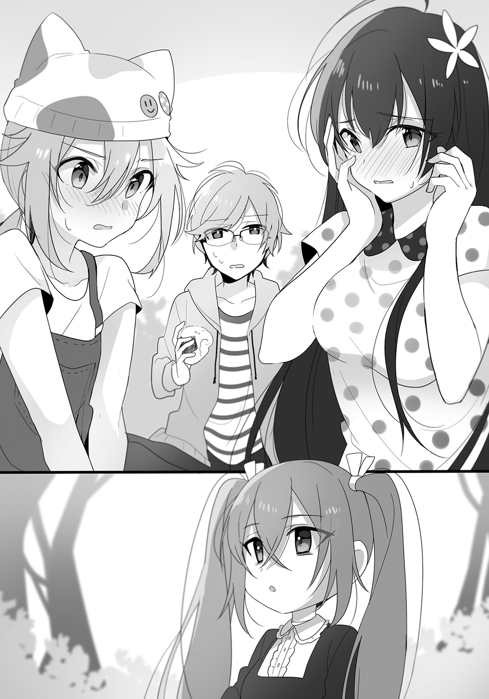
......。
まあ、その、なんていうか、思った以上におにぎりも好評で嬉しい限りだ。
なんか返答を待っても一向に進展がないので、おにぎりを二つに割って、久喜島さんと寧々子に半分ずつ渡すことにした。
「ま、まあでも、どっかの池とか廃病院とか、ガチでヤバい心霊スポットじゃなくてよかったよね！ 謙ちゃんならそんなところにも平気で連れていかれそうだし！」
話題や空気を変えたかったのか、寧々子があからさまに唐突に言った。僕としても話題の転換はありがたいので、あえてツッコミも入れずに乗っていくことにする。
「その手のスポットには謙吾は興味はないんじゃないのかな。『童女石』みたいに由来や歴史がハッキリしてるところなら好きそうだけど」
「いや、そんなことはねえぜ。そういう新しいスポットも、なぜ噂になるほど怖がられるのかは興味がある。でも、そういうところは危ねえからな」
「そうですわよ！ 本当に危険な悪霊がいたらどうしますの!?」
「いや、そうじゃなくてな、そういう場所は息巻いて肝試しに来るようなチンピラまがいの連中も多そうだろ？ もしかしたら住みついてる浮浪者もいるかもしれねえし。そんなのとは鉢合わせしたくねえよ」
「確かに、その脅威は実害があるからね。僕もそれはゴメンだな」
「あと、そういうところは老朽化とかもしてそうですから、やっぱり危ないかもしれませんよね」
「あ、それあるかもねー。床が抜けたりとか壁が崩れたりとか！ うん、永遠ちゃんいいこと言った！ やっぱそういうところは行くべきじゃないよ！」
力説する寧々子だが、本音は間違いなく「幽霊とか怖いから行きたくない」だろう。
「そうだな。崩れた壁の中から白骨死体でも出てきたら洒落にならねえもんな」
「ぎゃー！ やめてよ！ リアルに想像しちゃったじゃん！」
憤慨しつつも唐揚げに箸を伸ばす寧々子の姿に思わず笑ってしまったのは、僕だけではなかった。
＊
「あそこの古民家レストランもさ、ちょっと行ってみたいよね」
公園でのランチタイムを終えて駅へと戻る道すがら、寧々子が田園風景の中に見える家屋を指さして言った。
寧々子の指の先には、大きな駐車場を備えた趣ある古民家があった。
駅前はほとんど何もない寂れた場所も、少し離れて国道にまで出れば、案外いろいろな商業施設があったりする。僕らの住む田舎では、特に冬場はそうなのだが、自動車がなくては生活ができない。そのため自動車の普及率が高く、一時間に一本しかない電車が走る駅の前より、大きな道路沿いの方が客が集まるのだ。幸い、都会に比べて土地はあるので、駐車スペースも確保しやすいし。
「寧々子は古民家の風情より、食べ物が目当てなんじゃないの？」
「うん」
あっさり認めやがった。あれだけ食べたあとに、よくもまあ......。
でも、それなら古民家レストランじゃなくても、飲食店ならどこでもいいような気がする。それとも、味の方でも評判のお店だったりするのだろうか。
「お前、敬一郎の弁当をあれだけ食って、まだ食い足りねえのかよ」
「えー、謙ちゃんほど食べてないよ」
そりゃそうだろう。体格が違いすぎる。このメンバーの中でどころか、学校全体でもトップクラスに大柄なのが謙吾で、トップクラスに小っこいのが寧々子なのだから。
それでも、僕に言わせれば食べ過ぎだ。どっちもね。
「でも、敬一郎さんのお料理は美味しいですから、ついつい食べすぎちゃいますよね」
「あら、いいじゃない、永遠子ちゃんは食べた栄養が全部胸に蓄えられそうですもの」
「えっ」
「もー、どうやったらそんなに大きくなりますの？」
「それを人並みに不自由してない美加ちゃんが言うのも違う気がするんだけど！」
いきなりなんて話を始めるんだ。
「あー、さすがにそういう話は女子だけのときにやってくれねえか」
「同感」
「「「あ」」」
三人揃って、顔を赤くする。
いや、顔を赤くしたいのはこっちだよ、まったく。
そして少し歩いて、駅が近くなってくると、また田んぼメインの光景が視界を埋め尽くすようになる。
「あら、あれはなんでしょう？」
歩きながらどこまでも続く田園風景を眺めていた久喜島さんが、何かに気がついたように声を上げた。
みんな立ち止まって、久喜島さんの視線の先に目を向ける。
なんだろう、確かに、何かが見えた。
青々とした稲田の向こうに、ずーっと向こうに、米粒ほどの白い何かが動いているように見える。
「なんだろう......」
揺らめく小さな白い何かをもっとよく見ようと凝視した途端に、
「見てはダメですわッ！」
と雲林院さんが鋭く叫んだ。
「くねくねかもしれませんわよッ！」
くねくね――。
たびたび話題に出た、人の心を壊すという化け物。
そんなものが、まさか実在しているとでも？
今は、距離が遠すぎるせいか、それがなんなのかよくはわからない。だが、それを認識してしまったら心が壊れるなんて、そんなことが本当にあると？
まさか。
ありえない。
背筋をイヤな汗が伝っていく。
「まさかとは思うが、確かに見ない方がいいな」
しかし、見るなと言いつつも、謙吾も雲林院さんも、田んぼの向こうに見えるそれから目を離せないでいる。
僕も久喜島さんも寧々子もそれは同様だった。
なぜ目が逸らせないのだろう。まるで、見えない手で頭をガッチリと摑まれているようだった。
「ね、ねえ、あれ、近づいてきてない......？」
震える声で、寧々子がうめくように言った。いつものように僕にしがみついてこないのは、たぶん恐怖で凍りついて身動きが取れないからだろう。
確かに、米粒大だったその何かは、徐々にこちらに移動しているようだった。
「ほ、本当にくねくね動いてませんか......!?」
久喜島さんの言う通り、それは不気味な動き方をしていた。人のように四肢があるように見えるのだが、その動きは人間離れした不規則さで、『くねくね』とはよく名付けたものだ、と感心しそうになる。
「み、み、見ちゃ......だめですわ......」
ぞわぞわと鳥肌を喚起するような、イヤな空気がどんどん濃度を増していく。
どんどん近づいてくるそれは、今や人の姿をハッキリと見て取れるまでに距離を詰めていた。
その姿は――
「なあ、謙吾。ハッキリ認識したら頭がおかしくなるんじゃなかったのか」
「あくまで噂ではな。俺に言われても困るし、それが事実じゃなくてよかったじゃねえか。っていうか、あれのどこがくねくねだ、チクショウ」
「......私は別の意味で怖くなってきました」
「あたしも。悪い人じゃないんだけど、着せ替え遊びを始めると長いんだよね......」
「......お知り合いですの？」
「あ、雲林院さんは会ったことないんだっけ。ほら、『猿夢』のときに探し回った人のひとりだよ」
「ああ、そういうことですのね......」
そう、僕らも一度メリーさんの一件で出会っている、ブティック『ジャンヌ』の女主人その人だった。お店では黒系のドレス姿だったけど、今日は真っ白いドレスを身に纏っていた。いや、ドレスというか、なんというか......どっちかというと、構造的にはレオタードに近いというか、ダンスか何かの衣装のような出で立ちだった。
「あら、この間のお嬢さんたち。奇遇ね、こんなところで」
数メートルの距離までやってきて、女店主はようやく珍妙なくねくねした動きをやめ、何ごともなかったようにそう声をかけてきた。
僕らは緊張から解放されて、一様に大きく安堵の息を吐いた。それにしても、探し回っても会えないと思ったら、こんなところで不自然に会えるとか、何かに意地悪をされているような気さえする。
「何してるんすか、こんな田んぼのど真ん中で」
「何って、社交ダンスの練習ですわ。最近趣味で始めましたのよ」
社交ダンス......？ あのくねくねした動きが、か......？ ええと、ものすごく独創的な踊りですね......。
「私の知ってる社交ダンスと少し違うような......」
「っていうか、田んぼで練習しないよね、普通は」
「......ですわね」
「あらあら、だって、こんなにいいお天気だもの。外で練習した方が気持ちいいと思いませんこと？」
すみません、あんまり思わないと思います、普通は。っていうか、一度ちゃんとした練習場で鏡を見て、自分の珍妙な動きを確認した方がいいと思います。
「まあ、いずれにしても、くねくねじゃなくて一安心ですわね」
雲林院さんの一言に、女主人はくすっと妖艶に微笑んだ。
「くねくね、ですって？」
妖艶さだけではなく、その笑みには凄絶さというか、何か得体の知れない不気味さが潜んでいるように感じられた。
「ああ、それで合点がいきましたわ。きっと、その噂に引っ張られた、ということなのでしょうね」
「引っ張られた？」
オウム返しに、謙吾が訊いた。
女主人は艶然と微笑んだまま、
「噂、都市伝説、怪談、伝承......人が語るそうしたモノは、あなたたちが考える以上に世界に影響を与えるものだ、ということですわ」
まるで幼子を諭すように言った。
「そんな、まさか」
思わず言ってしまった僕に、今度は女主人が顔を向ける。
「言霊ってご存じ？」
「はい？ ええと、まあ、聞いたことくらいは......。確か、口に出した言葉には力が宿ってるから、良いことを言い続けることで実現するとか、悪いことは言わない方がいいとか、そんな信仰ですよね？」
「ええ。だとすれば、噂話も人々が語り続ければ真実になる、ということになるとは思わなくて？」
「......それは少し極端っていうか、荒唐無稽すぎると思いますけど......」
そもそも、言霊だって、あくまでそういう信仰がある、というくらいのもので、存在そのものが認められているわけではない。
「ええ、すべてがすべて、そうなるというわけでもないようですしね。でも、あなたたちは少し気をつけた方がよろしくてよ」
「気をつけるって、何をですか？」
「今は無害な噂や怪談も、この先ずっと無害なままだとは限らない、ということですわ。例えば、『くねくね』だって、今回はわたくしだったけれど、次は本当に『くねくね』に遭遇してしまうかもしれませんわ」
この人は何を言っているんだろう。
「では、わたくしはこれで失礼いたしますわね。お嬢さん方は、またお店に遊びに来てちょうだいな。そこの新顔の子も、是非ね。では、ご機嫌よう」
そう言うと、女主人はまた珍妙な自称社交ダンスのくねくねした動きを披露しながら、青々とした稲田の向こう側へと去っていった。
「な、なんだったんでしょうか......」
「あの人もたいがい人間離れしてるよね......」
久喜島さんと寧々子が顔を見合わせて苦笑する。
だが、雲林院さんは青ざめた顔のまま、女主人が消えた田んぼの向こうを見つめ続けていた。
「ねえ、あの方は本当に人間なんですの......？」
その声は、心なしか震えているようだった。
「や、やだなあ、美加ちゃん、いくらなんでもお店を構えてる人が人間じゃないわけないじゃん」
「そ、そうですよ、美加さん」
そうは言いながらも、久喜島さんも怯えた表情を浮かべていた。
「でも......みなさんは見ませんでしたの？ あの人、田んぼの中を......仮にそうでなくても畦道をあんな速度で踊りながら近づいてきたのに、息も切らしていませんでしたわ。しかも、ドレスの裾にも靴にも泥一つついていなかったですし......」
「えっ、美加さん、それは本当ですか......？」
「マジで!?」
うーむ、と謙吾が腕を組んだ。
「敬一郎、どう思う？」
「どうって言われても、僕は彼女の裾も靴も見てなかったよ。まあ、確かにあの人には人間離れした何かを感じはするけど、息を切らしていないことだって、鍛えていればある程度なら息を乱さないように移動することもできるだろうしさ」
やれやれ、と僕は肩をすくめた。
「だいたい、あの人が人間じゃないわけないでしょ。みんな、一回深呼吸して冷静になった方がいいと思うよ」
「本っ当に、貴方は超常的なものを絶対に認めませんのね」
「だって、今のは知人がちょっとおかしな行動をとっているところに出くわして、立ち話をしただけじゃない」
「それはそうですけれど......」
「みんな、過敏になりすぎだよ。怪談とか都市伝説とか、そんな話ばっかりしてるから意識しちゃって、なんでもそんなふうに見えちゃうんじゃないかな」
「......だそうだ」
久喜島さんと寧々子がくすりと笑った。
「敬一郎さんは相変わらずですね」
「ホント、敬ちゃんはブレないよね」
「ブレるも何も、事実を言ってるだけだよ。そんなに気になるなら、今度『ジャンヌ』に行って確かめてきたらいいじゃないか。お店に冷やかし目的で行くのは感心しないけど、いつでも来てくれって言ってくれてるんだし」
「でも、あのお店は......ちょっと......」
「ねえ。行ったら絶対に着せ替え遊び数時間コースだもん......」
「何を言われようと、あの女性に積極的に関わることは、わたくしはあまりお勧めはいたしませんわ」
「だな。『猿夢』のときにも痛感したが、こっちの都合で何かをお願いしようとか助けてもらおうとか、そんなことを頼める相手じゃねえんだよ、きっと」
「そういえば、夢の中で敬ちゃんと一緒にあたしを助けてくれた産女の人は、なんか『自分は恩を返す性質を持っているから』みたいなことを言ってたよ。もしかしたら、あの人たちはあの人たちで、違う世界のルールみたいなものに縛られてるのかもね」
「まあ、いいじゃないですか。今のところ、カシマレイコさんやメリーさん、あの『ジャンヌ』の人とも、仲良くやれてるんですから」
久喜島さんはニコニコ笑ってそう言うけど、なんか人間扱いしてないのって失礼なんじゃないかなあ。......人間離れしてるとは思うけど。
「そんなことより、ここで突っ立って田んぼを眺めててもしょうがないよ。帰りの電車、逃したら一時間待ちなんだから」
「だな」
僕らは駅へと向かって歩き出した。
一度田んぼの方を振り返ってみたけれど、もうくねくね動くものの姿はどこにも見えなかった。
第五話 お泊まり百物語
ゴールデンウィーク後半。
合宿という名のお泊まり会当日の午後、文類研の面々は揃ってやってきた。動きやすい服装で来るように、と事前に伝えておいたので、女性陣も全員がジーンズなどのパンツスタイルだ。
「いらっしゃい。息子がいつもお世話になっております。敬一郎の母です」
僕と一緒に玄関まで迎えに出たスーツ姿の母が、フレームレスの眼鏡の位置を直しながら、冷静沈着な態度と口調で言った。
「あ、は、初めまして......！ 私、久喜島永遠子です。こちらこそ、敬一郎さんにはいつもお世話になりっぱなしで......！」
「わたくし、雲林院美加恵瑠と申します。お目にかかれて光栄ですわ」
久喜島さんは、あわあわしながら、雲林院さんは優雅に、そうあいさつした。
「これはご丁寧に。こんな美少女たちに囲まれて、ずいぶん恵まれた学生生活ね」
うるさいな。確かにそう思うけど余計なお世話だ。
「小母さん、お久しぶりでーす」
「お世話になります」
寧々子と謙吾も、そう言って母に頭を下げた。
「ええ。二人とも......いえ、謙吾くんは大きくなったわね。寧々子ちゃんは、とても綺麗になったわ」
「......あの、言い直したのって、もしかして、あたしに『大きくなった』って言いづらかったから......？」
母は笑って寧々子の問いを誤魔化した。それ、肯定と大差ないよ。
「では、早速お願いするわね」
そう言って、母はほうきとちりとりを差し出した。
「ういっす」
「了解でーす」
勝手知ったる感じで、謙吾と寧々子がそれを受け取る。
「敬一郎、急な話で申し訳ないけれど、私は葬儀屋さんとの打ち合わせに出かけます。帰りは遅くなりますから、あとをお願いしますよ」
「うん」
急にそうした話が入るのはいつものことだった。そもそも、人の不幸に予定が立っている方がおかしいのだ。
「それから、あの人がまた変な肉を持って帰ってきたら、私の目に入らないうちにササッと片付けておいてくださいね」
「はいはい」
母はそれだけ言い残して、颯爽と玄関を出ていった。
きょとんとする久喜島さんと雲林院さんに、僕は、
「あ、うちはね、一家庭としても寺としても、お泊まり会は可能な限り受け入れるようにしてるんだ。ただし、お泊まりに来た人には境内や廊下の掃除のお手伝いをしてもらうのが決まりなんだよ。母さんの発案なんだけどね」
と説明した。
「あ、動きやすい服で、っていうのはこのためだったんですね」
「うん。お寺って結構忙しいんだよ。だから、掃除だけでも手伝ってもらえるなら大助かりなんだよ。あまつさえ、小学生のお泊まり会プランなんか、お金取った上で『お寺のお掃除体験』とか銘打って掃除をやらせるからね。しかもそれが『子どもの躾にいい』なんて評判になってたりするんだから、まったく、母さんも上手いこと考えたもんだよ」
特に、外から来た客なら父さんや母さんが相手をする必要があるけど、僕の身内なら基本僕に相手をさせて放置でいい。単純に、我が家としては掃除要員だけがやってきてくれてメリットしかなかったりするわけだ。
「実際、敬一郎のお母さんはこの辺じゃ切れ者で有名だからな。この寺の経理、営業、広報と経営の肝心な部分を一手に取り仕切ってるそうだ」
「ああ」
事実なので、僕は素直にうなずいた。お泊まり会のような企画立案までやる。
「すごいよねー。なんかすっごい仕事できそうなクールビューティーって感じで、超カッコいいよね！」
寧々子の言葉に、久喜島さんと雲林院さんがうなずいた。
「っていうか、一目で敬一郎さんのお母さんだってわかりましたね」
「同感ですわ。そっくり。特に、眼鏡の位置を直す仕草が」
寧々子と謙吾が苦笑した。
なんとなく複雑な心境ではあるけど、よく言われる。
「さあ、とにかく、やるべきことをやっちゃおう。五人もいればそんなに時間はかからないと思うよ」
というわけで、とりあえず荷物を家の中に置いてもらって、五人で揃って庭へ。
とはいえ、文化財があるわけでもなし、観光客が来るような名刹でもないので、境内もそんなに汚れるものではない。
境内には松の木もあるので、風が強い日のあとなどは松葉が散らかって大変なことになる。松葉はものすごく掃きにくいのだ。だが、まだ台風シーズンでもない今の時期なら、松葉もそこまで庭を汚してはいない。
「あ、こっちにお墓があるんですね」
掃き掃除をしながら、久喜島さんが寺の裏手を見て言った。
「寺だからね。でも、そっちは掃除しなくていいよ。檀家さんからの預かり物だし、さすがに僕らだけじゃ何かあったときに困るから」
「仮に小父さんか小母さんがいても、あたしはお墓には近づきたくないなあ」
寧々子は怖がりすぎ。名前が彫り込まれただけのただの石じゃないか。
「あら、ここから見た限り、このお寺のお墓にはイヤな感じはしませんわよ。きちんとご供養されているみたいですわね」
それがうちの家業ですからね。
「まあ、小母さんが雑多なことを全部テキパキやってるから、住職の小父さんはそっちに専念できるってことなんじゃねえか」
「それはあるかもね」
実際、母は信心とか信仰とは無縁のデジタル思考の持ち主だ。僕より数段上の合理主義者である。仏教についても知識として知っているだけで、寺の経営も一個の事業としてしか見ていない節がある。
「敬一郎さんのお父さんはどんな方なんですか？」
「「メチャメチャ良い人」」
寧々子と謙吾が異口同音に言った。
「あと、眼鏡だよ」
「ああ、眼鏡だな」
「はあ。敬一郎さんの家は、一家揃って眼鏡なんですね」
「そうだけど」
「久喜島家は真逆で誰も眼鏡をかけていないので、なんだか面白いっていうか、興味深いです」
「まあ、父さんならそのうち帰ってくるよ。何か仕留めてれば肉を持って帰ってくるかも」
「小父さん、猟に行ってんの？ 今だと何狙い？」
「さあね。でも、父さんは農業被害対策でやってるから、猪の個体数の管理とか、そんな目的じゃないかなあ。あとは熊とか」
「熊って食べられんの!?」
「もちろん。まあ、父さんが熊を撃ってきたことはまだ数えるほどしかないけどね。この時期はあんまり人里には出てこないし」
「それでも、撃ってきたことあんのかよ、熊」
「うん。熊肉は臭みが毎回不安定なんだけど、どうやら仕留めたあとの処理でかなり差が出るらしいんだ。でも、旨味がすごい強いから、臭み消しのネギや生姜と一緒に鍋にすると美味しいよ。ただ、煮すぎるとすぐ固くなるから、火の通し加減が難しいんだよね」
「敬一郎はもう寺継ぐより料理人目指した方がいいな」
「寺を継ぐかどうかはまだ決めてないけど、考えとく」
まあ、僕が寺を継がないと、いずれここの寺には住んでいられなくなるんだよなあ。寺って借り物だから。
そんな話をしながら庭の掃除を進めていくこと一時間。
少し陽が傾いてきたのを見て、僕は、
「謙吾、寧々子、あとお願い。久喜島さんと雲林院さんにわからないことを教えてあげて。僕は夕ご飯の用意をしてくるから」
と声をかけた。
「おうよ」
「っていっても、もう終わるじゃん」
「うん、だから片付けとか、その後とか。終わったら僕の部屋か居間で何か適当に時間を潰しててよ」
「そんなこと言うと、なんかえっちなものないか探しちゃうぞー？」
イタズラっぽく、寧々子が言う。
「ダ、ダメですよ、そんなこと......」
「あら、永遠子ちゃんは興味ありませんの？」
「えっ、それは......その......」
久喜島さんは顔を真っ赤にしてうつむいてしまった。
やれやれ。
「ご自由にどうぞ。ただし、散らかしたら責任をもって片付けてもらうけど」
「ふうむ。敬一郎のこの自信は、本当に何もないのか、絶対に見つからない隠し場所があるからなのか......」
「ご想像にお任せするよ」
笑ってそう言い残し、僕は台所に向かった。
＊
父から『帰りが遅くなる』という連絡が入ったのは、もう夕ご飯の支度が終わろうかという頃だった。猟で汚れるだろうと、合間にお風呂の準備までしておいたのになあ。
なんでも、猟友会の仲間のひとりが怪我をしてしまったのだという。そう酷い怪我ではないらしいのだが、念のために病院へ連れていくとのことだった。
忙しくないからとこの日を選んだのに、両親とも不在になるとはどういうことだ。
「やれやれ」
小さく呟いて、微かに話し声が聞こえる僕の部屋に向かう。
「おーい」
声をかけつつ部屋に入ると、謙吾は壁にもたれるように座って持参したハードカバーの本を読み、寧々子と雲林院さんはゲーム機を持ち出して無双系アクションで共闘し、久喜島さんが持ってきたのであろう人形のメリーさんが僕の勉強机にちょこんと腰掛け、当の久喜島さんは本棚を物色していた。
「あ、いえ、別に、えっちな物を探していたわけでは......」
大慌てで顔真っ赤にして言われても、全然説得力がないんですが。
「あ、もしかしてご飯？」
寧々子が僕を振り返る。
「......やられてますわよ」
雲林院さんが指摘したとおり、操作を放棄された寧々子のキャラクターは、テレビ画面の中で敵にタコ殴りにされている。
「ご飯も出来てるけど、お風呂も沸いてるよ」
「でも、風呂っていっても順番だろ？ 全員が入り終わるまでとなると、結構時間かかるんじゃねえか？」
「まあ、さすがに大浴場ってわけにはいかないからね」
子どもたちのお泊まり会なんかを受け入れているとはいえ、そこまで用立てることは難しい。そういう日は、自動車で二〇分くらいのところにある温泉施設へ行ってもらっている。場合によっては、父か母が大きめの自動車をレンタルして送迎したりもする。
「ねえねえ、敬ちゃん、ちなみにご飯は何？」
「カレーだけど」
「ご飯にしよう！」
コントローラーを投げ出して、寧々子が立ち上がる。
特に異論は出なかったため、ご飯が先、ということに決定した。
僕が作るカレーは、たいていチキンカレーかシーフードカレーだ。でも、鶏も海鮮も火を通しすぎると固くなって旨味も抜けてしまう。食べるのが両親と自分の三人だけならいくらでも調整できるのだが、人数が増えるとその手間と時間はちょっと厄介だ。
ましてや――
「おかわりっ」
こんなふうに、どのくらい食べるのかちょっと未知数の寧々子みたいなタイプがいたりすると、なおさら。
なので、今日はスタンダードにポークカレー（中辛）。それにベーシックなグリーンサラダとオニオンスープ。福神漬けとらっきょう漬けも、忘れずに添えてある。
「それで、このあとはどうしますの？」
カレーを食べながら、雲林院さんが誰にともなく訊いた。
「別に、このままダラダラ過ごしてもいいんじゃん？ そういうのもお泊まり会の醍醐味だし」
「いや、どうせなら合宿らしいことをやってみねえか？」
謙吾の提案に、寧々子が露骨にイヤな顔をした。
「お墓で肝試しとか絶対やだからね!?」
「お掃除をしてるときにも言いましたけど、あの墓場ならむしろ安全ですわよ？」
「そういう問題じゃないわよ！」
「うん、安全面に関して言えば、今は管理者がいないから、僕としても賛成はできないな。暗い中で怪我をしたり何かを壊したりしたら大変だし」
「や、敬ちゃん、たぶん言ってる安全の意味が違うと思う」
どう違うというのか。
「安心しろ、肝試しなんて言わねえよ。それのどこが文類研の合宿らしいんだ」
「じゃあ謙ちゃんは何やろうとしてんの？」
「百物語だ」
「それ、肝試しとどう違うのよっ!?」
「あのー、寧々子さん、食べながら叫ぶのはどうかと......」
まったくな。
「で、その百物語っていうのは？」
「おっと、敬一郎は知らないか。昔から伝わる怪談のスタイルさ。一〇〇本のロウソクを点して、集まったメンバーがひとりずつ怪談を披露し、話が一つ終わる度にロウソクを一本消していくんだ。そして最後のロウソクが消えて闇が訪れたとき、何か奇怪な出来事が起こるといわれている」
僕は呆れ気味にため息をついた。
「ホントに謙吾は好きだなあ、そういうの」
「だーかーらー！」
「わたくしも、軽率にそういうことはしない方がいいと思いますわ」
「ええと、私も......つい先日、うっかり『ひとりかくれんぼ』とかいうのをやってしまったばかりですし」
「そうだよ！ また『猿夢』みたいなのを呼び寄せちゃったらどうすんの!?」
「だから、別にそこまで本格的にやる気はねえって。ロウソク百本とか無理だし」
「ロウソクは危ないから、本数を減らしても却下だよ」
「お前ら、ノリ悪ぃなあ」
そういう問題ではない。父も母もいない以上、火の管理だって注意を払うのは僕の役目なのだ。
と、その瞬間、寧々子の携帯電話が鳴った。
スプーンを置いて、「もしもし？」と電話に出た。
「え？ なんで......まあいいけど」
寧々子は困惑気味にうなずきながら、携帯電話をスピーカーモードに切り替えた。
『もしもし、私メリーさん。今、敬一郎くんのお部屋にいるの』
......やっぱりお前か。
『いいじゃん、面白そうじゃない、簡易百物語』
「ちょっと、何言ってんのよ！」
寧々子が電話に向かって憤慨する。
「まあ、そう言うなって。やることは別にいつも部室で話してることと変わらねえよ。ちょっと雰囲気を出そうと思っただけで」
『大丈夫だってば。管理者がきちんとやることをやってるお寺や神社は聖域よ。学校なんかよりよっぽど安全だわ。ロウソクもなしで、本来一〇〇語る話を一〇にも満たない数で代用なんかできるわけもないし、儀式の儀の字にも満たないもの』
うーん、こいつの言うことは、なんか信用できないぞ。
「本音は？」
試しに、そう訊いてみた。
『もちろん、一晩一緒なんだから、女の子たちをちょっとくらい怖がらせておいた方がラブコメが捗る――』
「寧々子、切れ」
「うん」
即、寧々子が僕の指示に同意して携帯電話の通話を切った。そして携帯電話をテーブルに置き、スプーンを手に取って食事を再開しようとする。
が、再度、携帯電話が鳴った。
「あーもう、うるさいなあ」
面倒くさそうに、寧々子がもう一度通話ボタンを押す。
『ちょっと、なんで切っちゃうのよ！』
「メリーさんがアホなこと言うからじゃん！」
『何よ、よかれと思って言ってるのに！ 寧々子ちゃんだって――』
「わーっ！ それ以上言うんじゃなーいっ！」
ぎゃーぎゃー騒ぐ寧々子とメリーさんを他所に、謙吾は大きなため息をついた。
「あーあ、本堂でロウソクの灯りだけでやったらいい雰囲気だと思ったんだがなあ」
「ご本尊の真ん前で何をやる気だよ......。話をするだけなら僕の部屋やこの居間でも充分じゃないか」
「演出だよ、演出。ほら、暗い本堂ってなんか怖いだろう」
「罰当たりな」
「合理主義の権化みたいなお前がそれを言うのか」
「なるほど、それは確かに」
「敬ちゃん何納得してんの!? あたし、暗い本堂で怪談話とか絶対やだからね！」
「よし、わかった。じゃあ、折衷案といこうぜ。本堂はさすがにやりすぎだというなら、その演出案は取り下げよう。敬一郎の言う通り、場所はここか敬一郎の部屋でやる。それならいいだろ」
「うん、まあ、それならいいけど」
いいのか。百物語自体はいいのか。
「寧々子ちゃん、上手く言いくるめられていませんか......？」
久喜島さんが苦笑しつつ小声で言った。
「いつものパターンだよ」
と、僕も苦笑で返す。
「まあ、寧々子も怪談自体は、よく自分から噂を拾ってきて喋ってるし」
「まあ、確かに合宿なのですから、少しは部活動らしいこともするべきですものね」
部活らしいことが怪談話ってのはどうかと思うけどね。
＊
というわけで、食後。
片付けを終えて、順にお風呂に入って、みんな僕の部屋に集合した。
『ちょっと、なんで全員パジャマじゃないのよ!? お泊まり会で寝る前のトークはパジャマでって決まってるんじゃないの!?』
寧々子の携帯電話から、ヒステリー気味に怒鳴るメリーさんの声が聞こえてきた。僕の机にちょこんと座っている人形の顔も、一瞬、なんだか怒っているように見えた気がしたのだが......まあ、気のせいに決まっている。
「何言ってんの。決まってるわけないじゃん」
「女の子だけならともかく、男の子もいるんですから......」
「マンガの読み過ぎですわね」
しかし、きちんと髪を乾かし、パジャマではない服を着ていたとしても、風呂上がりの上気した肌とか、ちょっと目をやりづらくて困るんだけどね。これでパジャマだったら、さすがにちょっといろいろまずい。
「まあ、とにかく、全員揃ったんだし――」
言いかけた謙吾だったが、
『違う違う違う違う！ 席順が違ぁ――う！』
またメリーさんに遮られた。
『なんで敬一郎くんは謙吾くんのとなりに座ってるのよ！ 違うでしょ！ ちょっとアレな薄い本みたいな想像するわよ！ いわゆるＢＬの！ それでもいいの!?』
「何言ってるのかわからねえよ」
『いいから、あんたらの間には寧々子ちゃんが入るの！ で、敬一郎くんの反対側のとなりは永遠子ちゃん、そのとなりが美加恵瑠ちゃんでしょ！ 空気をちゃんと読みなさいって言うのよ、まったく！』
「わかったわかった。もう面倒くさいから言うことを聞こうぜ」
「もー。メリーさん、あんまりウザいと嫌われるよ？」
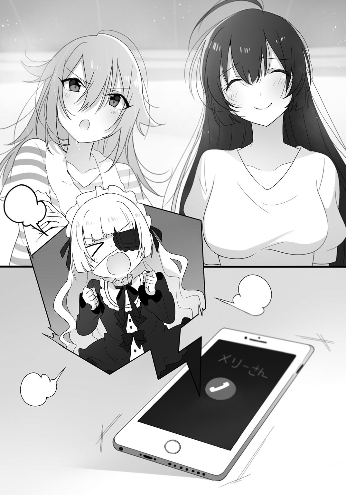
そんなことで長々言い争うのも馬鹿馬鹿しいとみんな思ったようで、謙吾、寧々子、僕、久喜島さん、雲林院さんという順で車座になった。
「さて、ちょっとゴタゴタしたが、始めようじゃねえか」
謙吾が楽しそうに言う。
「まあ、気負う必要はねえぜ。怪談を怖く聞かせることより、話題の提供を求めてるって感じだと思ってくれればいい。さて、誰から話す？」
「じゃあ、僕が」
率先して、僕は手を挙げた。
「珍しいな、敬一郎は一番興味がねえと思ってたが」
「だからだよ。さっさと話して楽になりたい。それに、興味がない分、明らかに僕は他のみんなより知ってる怪談が少ない。手持ちのカードが誰かと被ったら目も当てられないじゃないか」
「なるほど、合理的な判断だ」
謙吾はうなずいた。
久喜島さんの顔にも、寧々子の顔にも、雲林院さんの顔にも、異存がありそうな気配は見られなかった。
了承された、と判断して、僕は口を開いた。
「実は僕も、みんなに感化されたのか、ちょっと暇を持て余したときなんかに『都市伝説』とかそんなワードで検索をかけてみるくらいのことはするようになっているんだ。もちろん信じているとかではなく、みんなとの話についていけるように、程度の目的ではあるんだけど」
「おお、合理主義者の敬ちゃんが超常現象にデレ始めてる！」
「言ってる意味がわからないし、そういうんじゃないよ。まあ、そうやって調べてかなり簡単に見つかったヤツだし、もしかしたら有名な話かもしれないけど」
「ほう、ネットで拾った話か」
「他に入手経路を知らないし」
というか、高校に入ってからこれまでの人生でないくらいの勢いで怪しげなエピソードだの知識だのを入手しているけれど、仕入れ先はここにいる面々だから、この局面で使えるはずもない。
「その話は、ある女の子が女子大生になって一人暮らしを始めて間もない頃に起こったらしいんだ」
僕には、久喜島さんのように臨場感たっぷりに雰囲気を盛り上げる話し方はできそうにない。だから、なるべくシンプルに、内容の把握をしやすいように、とそれだけを心がけて話すことにした。
「その日、話の流れでその女の子の家に大学で仲良くなった女友達が遊びに来ることになって、一緒に帰宅した。その夜は友達も泊まっていくことになって、女の子は自分のベッドに寝て、友達は床に布団を敷いて寝てもらうことにしたんだけど、その友達は布団に入って間もないというのに、しきりにコンビニに行こう、と言い始めた」
「ああ、あの話か」
「それ知ってる！」
「あの話ですわね」
「......？」
やはり有名な話だったか。どうやら、知らないのは久喜島さんだけらしい。まあ、一人でも知らないなら最後まで話すべきだろう。
「女の子は特にコンビニに用はなかったから一人で行ってはどうか、と友達に提案したんだけど、友達は一緒に行こうと何を言っても譲らない。とうとう根負けして一緒に部屋から出ると、その友達は青い顔でこう言った。『ベッドの下に潜んでいた刃物を持った男と目が合った』と。床に布団を敷いて寝た彼女は、ちょうどベッドの下を覗き込める位置関係にあったというわけだね」
「それは......思ってたのと違いましたけど、想像すると怖いですね......」
「いわゆる『ベッドの下の斧男』だな」
「有名な話だよね」
「ええ。アメリカ発祥の都市伝説らしいですわよ。泊まりに来るのが姉妹だったり、複数だったり、凶器も斧だったり鎌だったり鉈だったり、いろいろなバリエーションがあるみたいですわね」
「ふむ。敬一郎がその話を選んだというのは、とてもらしいな」
「別に、他意はないよ。単に自分で探した中では一番怖いと思ったから選んだだけで」
「いや、それがお前らしいんだよ。お前が怖いと思ったのは、『実際にそういう目に遭うことがあるかもしれない』と思ったからじゃねえのか？」
少し、考え込む。
「なるほど、そうかもしれない」
「だろ。何しろ、この話には何一つ超常現象が出てこない。どうやって斧男が部屋に入り込んだのかという謎は残るが、決して不可能なことじゃないからな。ピッキングなり、合い鍵を盗むなり、窓を割って侵入するなり、状況によってはいくらでも方法が考えられる。しばらくストーキングすれば、何かしら方法を導き出すことは可能だろう」
「ちょ、ちょっと、やめてよ！ 今日のお泊まり会っていうシチュエーションとモロ被りじゃない！」
寧々子がまた腕にしがみついてくる。
いやちょっと、寧々子こそやめろよ、学校とは違うんだから！ 洗いたての髪からほんのりシャンプーの香りが漂ってくるとか、反則すぎだっての！
『よっしゃ！』
つながりっぱなしの寧々子の携帯電話から聞こえてきた声に、
「もう席順の魂胆通りですわね......」
と白い目で雲林院さんが呟いた。
いつもは怖さが収まるまで放してくれないのに、今日に限っては、寧々子はパッと僕から離れた。
「まあ、そんなに怖がらなくても、この話は簡単に対策できましてよ。だって、防犯と戸締まりにきちんと気をつければいいだけですもの」
「そうですね。まあ、うちはわりと玄関開けっ放しですけど......」
雲林院さんの言うことはもっともだが、久喜島さんの言葉を不用心と責める者も、この場にはいないだろう。
この辺りではご近所はみんな顔見知りだし、ちょっとくらいの買い物なら鍵もかけずに出かける家も多い。田舎特有の不用心だが、逆に言えば近所の目が都会以上に不審者を監視する。果たしてどちらが防犯に有効なのだろうか。
「実際、ときおりストーカー殺人のニュースとかも聞くし、僕に言わせれば人間が一番怖いと思うよ」
「確かに、サイコホラーもホラーですものね。この流れは当てが外れたのではなくて？」
ちょっと意地悪そうな顔で、雲林院さんが謙吾を見やる。
だが、謙吾は雲林院さんに不敵な笑みを返した。
「いや、そんなことはねえな。そもそも、民俗学にせよ文化人類学も、対象は人間だ。それに、『ベッドの下の斧男』も立派な都市伝説。議題としては面白い」
「美加ちゃんはそっち方面は興味ないんだ？」
「ええ。さっきも言いましたけれど、相手が人間ならいくらでも対処のしようがありますもの。もちろん、完璧なセキュリティなんて不可能ですけど、対処の方法さえわからない超常的なものと比べたら、怖がるに値しませんわ」
僕とは真逆の考え方だ。さっぱり理解できない。
「あ！ じゃあさ、間をとってこんな話はどうかな」
寧々子が手を挙げて言った。
「雨の日に、ボロボロの白い服を着た女の人が人形みたいなものを引きずりながら歩いててさ。でも、それがよく見ると人形じゃなくて――」
「人間なんだな。小学生くらいの」
「ひきこさんですわね」
「ちょ、なんで開始五秒でネタバレ!? そりゃ有名な話だけど！」
「いや、話し方からして、臨場感とか盛り上げる気がねえんだな、と思って」
「臨場感!? 噂で聞いてきた話に臨場感!?」
「まあ、確かに久喜島さんの話し方と比べちゃうとなあ」
「永遠ちゃんのはだいたい体験談じゃん！ 勝てるわけないじゃん！」
うん、まあ、そういう話術では久喜島さんが圧倒的に上で、寧々子には勝ち目がないだろうなあ。寧々子が得意なのは大勢の人の中に溶け込んでいく話術で、そっちでは久喜島さんの勝ち目がゼロだろうけど。
「で、謙吾、その『ひきこさん』ってのは？」
「敬ちゃんもさあ、あたしに訊こうよ！」
「あ、ごめん。で、寧々子、どういう話なんだ？」
なんとも釈然としない表情で、しかし、寧々子は喋り始めた。
「雨の日に、小学生を捕まえては脚を摑んで引きずって殺す、っていう怪人の話だよ」
怪人ときたか。
「その怪人が『ひきこさん』なわけか」
「うん。もともとは、『森妃姫子』って名前の背が高くて可愛くて成績もいい、優しくて先生にも可愛がられてる女の子だったみたいなのよ。だけど、それを僻まれていじめに遭うようになって、加減を知らないいじめっ子たちに学校中を引きずり回されて、......廊下の角やいろんなものにぶつかりまくった顔はメチャクチャになっちゃったんだって」
「暴行事件じゃないか」
「うん、まあ、そうなんだけどね。で、それがきっかけで引きこもるようになっちゃって、いじめられた恨みでおかしくなって、醜い顔を見られにくい雨の日に外に出ては自分を酷い目に遭わせた小学生に復讐しようと襲うっていう話」
「ふうん......あ、なるほど、『森妃姫子』は『引きこもり』のアナグラムか」
「アナグラムってほど複雑に弄ってねえけどな。苗字と名前をひっくり返しただけなんだから。あとは、バリエーションとして、両親からの虐待が原因だったり、イジメと虐待の両方を絡めたりするのもある」
「......ひきこさん、なんだかかわいそうですね」
「あたしは、ひきこさんに襲われる無関係の小学生の方がかわいそうだと思うけどなあ」
「それはそうですけど......」
「安心しろ、『ひきこさん』の話はどう考えても創作されたネット怪談だ。犠牲になった小学生も、ひきこさん本人も実在しねえよ」
「だろうね」
僕もうなずいた。
「概要を聞いただけだけど、それでもひきこさんの境遇が過剰すぎる。それに、いくら相手が小学生とはいえ、引きこもってた女性が死ぬまで人を引きずるとか体力的に無理だよ。仮に執念でやったとしても、そんな凄惨な犯行が隠し通せるはずないし、それ以前にいじめのくだりの暴力行為も問題になる」
「また敬ちゃんは、ロマンのないことを......」
「いや、だが、いいところを突いてる。確かに、ひきこさんは暴力要素が強くて過剰だ。それがなぜかといえば、聞き手、読み手だけではなく他のものも意識せざるを得なかったからだと思う。それが何かと言えば、他の書き手や過去に語られた怪談だ」
「ネット怪談が寄せられるのは、主にネット上の掲示板ですものね。過去ログが残っていれば、競争相手の名作はいくらでも出てきますわよ」
なるほど、他の怪談やその書き手より目立とうと、内容もどんどん過激になっていくというワケか。
「でも、それならよかったです」
ま、確かに、誰も酷い目に遭っていないのなら、それが一番だ。
「さて、ネット怪談に話が及んだのなら、俺もそれに関して少し話しておくか」
「次は謙ちゃんの番、ってこと？」
「そう考えてもらっても構わねえぜ」
こう答えて、謙吾はニヤリと笑った。
「ネット怪談でよく使われる題材として、カニバリズムがある」
「かにばり......？」
寧々子が首を傾げた。
「人が人肉を食べる、という行為、あるいは風習のことですわよ」
「うげ」
寧々子が気持ち悪そうに口を手で押さえた。
そこまで露骨な反応は見せずとも、あまりその話題を歓迎している者はいないようだった。もちろん、僕も含めて、だ。怖いというより、生理的嫌悪に近い。
「そう、そうなるだろ。恐怖や狂気を演出するには最も手っ取り早い方法の一つだろうと思う。だから多用されるんだろうな。例えば......」
謙吾は数秒考え込んで、再び口を開いた。
「ある男が、ネットにこう書き込んだ。会社をクビになってもう何日も経ち、貯金もそこをついてしまった、明日からどうやって飢えを凌ごうか、と。その後、しばらくは金がないなりの工夫や節約といった内容が続くんだが」
なるほど、何日にもわたってネタを仕込む、というのはその場でオチまで語る噂や伝承にはできない演出だ。
「あるときから、ちょっと様子がおかしくなり始める。日に日に瘦せていく自分の腕を見て、これ以上瘦せる前に切り落として食うべきじゃないか、とか」
「え、ちょ、それのどこが『ちょっと』なの!?」
「まだ他人に迷惑をかけまいとしてるからな」
「わかんない！ その基準がよくわかんない！」
「まあ、そうなる頃には、それを読んでいる他の連中も、半分ネタだろうと思いつつも心配するような書き込みをしていたんだがな。そして、『駅の前に行けば食えそうなヤツらがウジャウジャ無警戒に歩いてるっていうのに』とか言い出した」
「え、それって......」
青い顔をして、また寧々子が僕の腕にしがみついてきた。
いや、反対側からも、久喜島さんまで不安げな顔で僕の服の袖をギュッと摑んできた。
『くくっ......』
寧々子の携帯電話から、声を押し殺したメリーさんの笑い声が微かに聞こえてくる。
「そして翌日の書き出しが『久しぶりにたらふく食った』だ」
「ま、まさか......」
寧々子が摑んだ僕の腕をギューッと締め付ける。痛いんだけど。
「そのあとは、食ったモノがいかに美味しかったかの感想が続くんだか、それが明らかに肉なんだな。そして、『腹が減ったらまた駅前で食べ物を確保してこよう』と続く。それに対して、当然寧々子のようなレスがたくさんついたわけだが」
一拍間をおいて、謙吾は、
「そいつはそんなギャラリーに向かってこう言ったんだ。『お前ら、落ち着け。俺が駅前で捕まえてきたのは鳩だ』ってな」
「は......？」
ぽかん、とした顔で、寧々子が口をパクパクさせていた。
「そんなことだろうと思いましたわ」
「うん、僕も」
「でも、鳩はかわいそうでしたけど、人を殺すようなことになっていなくてよかったですね......」
「いや、たぶん鳩もウソだと思う」
少し考えて、僕は言った。
「これも完全な創作なんじゃないかな。だって、そんなに困ってるのにネットの掲示板に連日書き込みしてるってのも変でしょ。それだけ追い詰められてたら、たぶんガスも電気も止まってるよ」
「ああ、俺も同感だ。まあ、書き込み自体は携帯電話からでもできるし、職探しをするにしても携帯電話は生命線だから、携帯の支払いと充電だけは最優先でやっていた可能性もあるにはあるが......」
「それでも、ちょっと腑に落ちないよね」
「そもそも、鳩って美味しいの？」
寧々子が首を傾げた。
「美味しいですわよ。中華やフレンチでは定番の食材ですわ」
「だね。鳩を食べる文化自体は結構あちこちにあるけどね。でも、日本人の感覚だとちょっと出てこないよね。平和の象徴って印象の方が強いし。それに、日本では確か鳩を捕まえることは違法なんじゃないかな。きっと駅前なんかで鳩を捕まえたりしてたら、お巡りさんに怒られるよ」
駅前ってだいたいは交番があるしね。
「それに、基本的に魚でも動物でも、肉の味は『何を食べて育ったか』が大きく影響するんだよ」
「あ、そういえば、高級なお肉って、餌にこだわってるとか言うよね」
「そうそう。チーズを作る過程で出る栄養満点のホエーを与えて育てたホエー豚とかね。公園や駅前にいる鳩の食生活からすると、あんまり美味しく育ってはいないんじゃないかな。ゴミを漁って有害なものも食べているかもしれないし。あと、衛生面の問題もあるだろうから、食用に育てられた家畜と同じ感覚で食べるのは、個人的にはオススメしないよ。そういう意味では父さんが撃ってくる獲物も同じで、僕はしっかり加熱することを心がけてる。病原菌や寄生虫が怖いから、絶対に生では食べない方がいい」
僕に言わせると、超常現象より、病原菌や寄生虫の方がずっと怖い。野生の生物は、食べることはもちろん、触れることにさえリスクが伴うのだ。
「ねえ、ちょっと、謙吾君」
珍しく、雲林院さんが謙吾の腕をつついた。
「その話、わたくしは知りませんでしたわ。どこのサイトに載ってる話ですの？」
「マジか。怖い話系のサイトを回れば見つかると思うんだがなあ。じゃあ、明日にでも俺も探して、見つけたらメールするぜ」
「お願いするわ」
『ちょっと！ 何？ 何？ こっちでもラブコメの臭いがするじゃない！ いいわね、すごくいいわ！ ああ、なんか甘酸っぱい！』
「なっ、ちょ、そんなふうに見られるなんて心外ですわ」
「まったくな。おい、寧々子、その電話切れ」
『きゃー、ちょ、やめてよ！ 私だけ仲間はずれにするなんてずるいわ！』
口は禍のもととはよく言ったものだ。
「それはともかく......少しエグい話が続きましたわね。ですから、次はわたくしがあまり怖くない話をいたしますわ」
姿勢を正しながら、雲林院さんが言う。
「わたくしの家では猫を飼っているのですけれど」
「あ、前にも言ってたよね。ラファエルだっけ？」
「ガブリエルですわ！」
「じゃあ、そのガブリエルさんのお話なんですね？」
久喜島さんの言葉に、雲林院さんは首を横に振った。
「いえ、違いますわ。先代の猫の話ですわよ。とはいっても、ガブリエルはわたくしが生まれたのと同時期に家に来た猫ですから、わたくし自身は先代の猫と会ったことはないのですけれども。これは、わたくしのお父様が体験した話ですわ」
これは、少し意外だった。雲林院さんは、謙吾同様にネットか何かで拾ってきた話をするものとばかり思っていたんだけど......。
「もともと愛猫家だったお父様もお母様も、その先代の猫をそれはそれは可愛がっていたそうですわ。グレーに黒縞のアメリカンショートヘアだったんですけど、お尻のところに特徴的なハートマークがあったそうですわよ。私が生まれる何年か前、その猫が死んでしまったときには二人ともものすごく悲しんだと聞いていますわ。なので、きちんとお寺に頼んでお葬式をしてもらって、そのお寺にお墓も建てたのだとか」
「へー、猫のお葬式とかお墓とか、お寺ってやってくれんの？」
「そういうことをやっているので有名なお寺もあるね。うちにそういう話が持ち込まれたって話は聞かないけど、......母さんなら引き受けるかもしれないなあ」
「もちろん、他のお寺のお話ですわよ。そうして猫を弔って数年して、わたくしが生まれる予定日の何日か前、ふと、お父様は仕事でそのお寺の近くまで来たので、手を合わせていこうと思い立ったんだそうですの。お父様は車を走らせて、山間にあるそのお寺への一本道を行ったそうですわ。そしてお墓に手を合わせて、そのお寺のご住職と少し世間話をして、帰ろうとまた車に乗り込んだんですけれど......行けども行けども、山道から出られなかったらしくて。どう考えても、行きで走った距離の倍以上走っている気がするのに」
「え？ あれ？ 美加ちゃん、怖くないって言ってなかったっけ......？」
「あら、別に、ここまででそこまで怖い要素はないでしょう？」
「だって、それって明らかに閉鎖された空間に不思議な力で閉じ込められて、殺人鬼とか化け物とかに惨殺される流れじゃん！」
「ちょっと、わたくしのお父様を勝手に殺さないでくださる？」
「あ、そっか。美加ちゃんのお父さんの話ってことは、死んでないんだ」
「当たり前ですわ」
「まあ、猫の話って最初に言ってるんだから、これで酷い目に遭うなら猫の祟りってことになるよな。大切に飼ってた猫が祟るってのは、それはそれで愛猫家にとってはこの上なく怖い話だが」
「とにかく、しばらく山道を走ったあと、お父様は一度車を停めて、死んだ猫がもう少し一緒にいてほしかったのかな、と少ししんみりして、その猫との思い出なんかに少し浸ってから車を出したら、不思議なことにすぐ山道から出られたそうですわ」
「あら、あっさりですね......」
「ええ。でも、その日、帰り道で大きな交通事故の現場検証をやっていて、お父様は回り道をすることになった、と言っていましたわ」
「え、それって、もしかして山道から出られなくなってなかったら事故に巻き込まれてたとか......？」
「さあ、それはわかりませんけど、もしかしたらそうなのかもしれませんわね」
「でも、猫って飼い主を助けたりすんの？ あんまりそういう印象ないけど」
「いや、猫と言えば気まぐれで自分勝手というイメージがあるが、猫が飼い主を助けるって話も結構残ってるんだぜ。まあ、今は雲林院さんの話の途中だから、あんまり詳しい話はしねえけど」
「へー、そうなんだ」
「それから、そのあとお父様はわたくしを産むために入院していたお母様のところに顔を出したそうなんですけど、その帰りに病院のロビーで知り合いのブリーダーにバッタリ出会ったらしいのですわ」
「ブリーダーって？」
寧々子が首を傾げた。
「犬や猫を、血統を守って育てたり繁殖させたり、しつけたりする人のことだな。最近では悪質な繁殖屋も問題になってるみたいだが」
「もちろん、その方はそんな恥知らずではなく、誇りと愛情を持って猫を育てている人ですわよ。そしてその人は、最近生まれた子猫の写真を見せてくれたそうなんですけれど、その中に、お尻にハート型の模様があるアメリカンショートヘアの子猫が写った写真があって、お父様は何か因縁めいたものを感じて、譲ってほしいとお願いしたそうですわ」
「あ、それがもしかしてガブリエルちゃん？」
「ええ。こうして、わたくしとガブリエルは一緒に育つことになりましたのよ」
「なんだか素敵なお話ですね。もしかして、そのブリーダーさんに会わせるために足止めしてくれたのでしょうか......？」
「わたくしは、きっとそうだと思っていますわ」
「なるほどなあ。一代目が引き合わせた二代目の猫、か。良い話じゃねえか」
さて、残るは真打ち、無自覚怪談上手の久喜島さんだ。
みんなの視線が、久喜島さんに集中する。
「あの......そんなに期待されても困るんですけど......」
そう言って、久喜島さんは照れたように全員の視線から目を逸らした。
「そうですね......では、私も人間が怖いお話をしようと思います。あれは私がまだ小学生になるかどうかという頃のことでした。当時、私はお祖母ちゃんと一緒に、自転車の練習で公園に行くのが日課みたいになっていたんです」
「自転車......ああ、そうか、小学校に入る頃って、補助輪を外す頃だね」
「はい。でも、私、どんくさくてなかなか上手く乗れなくて......」
うん、なんとなく想像できるな。久喜島さんって、そういうのが苦手そうなイメージがある。
「その日は夏の終わり頃で、蟬の鳴き声と一緒に遠くで救急車か何かのサイレンが聞こえていたのを覚えています。特に根拠はなかったんですけど、なんだか『今日こそ上手く乗れそう』って気がしていたのも覚えています。でも、お祖母ちゃんはどういうわけか、いつも以上に心配そうに『気をつけなさい』って繰り返し言っていました」
久喜島さんのお祖母ちゃん、か。
自分でもお祖母ちゃん子だったと言う久喜島さんは、形見である銀の十字架のペンダントトップをカバンにつけて持ち歩いている。
そして、お祖母ちゃんの教えだと言って、多少の理不尽は『神の与えたもうた試練です』と甘んじて受け入れてしまう。
それほどまでに久喜島さんに好かれていたお祖母ちゃんがどんな人だったのか、気にならないと言えば噓になる。もう叶わないことだとわかっていても、一度会ってみたかったなあ、と思う。
「とにかく、自転車に乗る練習を始めました。ずっとお祖母ちゃんからも他の家族からも、怖がってスピードを出さないと余計に安定しない、というようなアドバイスをもらっていたので、思い切って勢いよく漕いでみたんです」
昔を思い返すように、久喜島さんはゆっくりと言葉を選びながら話を進めていく。その少し遅めのテンポが、聞き手である僕たちの先を聞きたいという欲求を刺激して、話に引き込んでいく。
「そうしたら、暑い暑いと思っていた夏の空気がフッと変わった気がしたんです。急に涼しくなって......いえ、自転車がスピードに乗って風を切ると寒いほどでした。自転車に乗れた嬉しさが半分ありましたけど、私、それ以上にスピードに怖くなってしまって、パニック状態になってしまったんです」
「あー、まあ、初めての自転車だし、小っちゃい頃だもんね。ちょっとしたことで怖くなって取り乱すことってありそうだよね」
「はい。ですから、ブレーキをかけるっていう発想が出てこなかったっていうか、手が硬直しちゃって動かないっていうか、とにかく、真っ直ぐにどんどんスピードだけが上がっていって、それが怖くてますます身体が言うことを聞かなくて......しかも、悪いことに、私は公園の入り口に向かって走っていたんです。公園の前の道は自動車の交通量も多くて、その日もひっきりなしに自動車が行き来してました」
「えっ、それってかなりまずいんじゃ......」
寧々子が息を呑むのがわかった。
まあ、今こうして久喜島さんは生きているんだから大ごとにはならなかったのだろうけど、それでも、やっぱりハラハラしてしまう。
「はい、きっとお祖母ちゃんもそう思ったんでしょうね、背後から何かをお祖母ちゃんが叫んでるのが聞こえました。その声を聞いて、ハッと我に返ったっていうか、緊張が解けたっていうか、手が動くようになって、私は慌ててブレーキをギュッとにぎったんです。なんとか道路に飛び出す直前で止まれました。目の前を大きなトラックがびゅんって通り過ぎていって、一つ間違ったら私はそのときに交通事故で死んでいたかもしれません」
はー、と寧々子が安堵のため息をついた。
大袈裟だなあ、と思いつつ、僕もホッとしていたことに気がついて、心の中で自嘲する。
「そのとき、誰かが私の後ろを通り過ぎざまに舌打ちをして、こう言ったんです。『死ねばよかったのに』って」
「はあ？」
「えっ」
謙吾と雲林院さんが同時に首を傾げた。寧々子も『マジか』という顔で固まっている。
「ひどいと思いませんか、小学生にもならない子どもに『死ねばよかった』なんて。本当に、そんなことを言うような心ない人がいるんだなって、今思い返しても、人間って怖いです」
「いやいやいやいや、永遠ちゃん、気にするところそこなの!?」
「だな。その『死ねばよかったのに』って、かなりポピュラーな怪談話で出てくるフレーズなんだぜ」
「展開もそっくりですわね。普通は自動車の運転中で、崖に向かって走ったりするんですけれど」
「あたしでも知ってる話だよ！ それ、絶対幽霊だよ！」
「まさか。だって、ちゃんとハッキリ聞こえたんですよ？」
「......それを言った人の姿、ちゃんと見たのか？」
「いえ、後ろを通り過ぎていきましたし、そのあとすぐにお祖母ちゃんが駆け寄ってきて抱きしめられたりしたので、見てはいませんけど」
「......サイレンの音が聞こえたと言いましたわね。近くで交通事故でもあったんじゃありませんの？」
「さあ、どうなんでしょう？」
「まさか、その交通事故で死んじゃった犠牲者の霊が永遠ちゃんを道連れにしようとしてた、とか......？」
「......馬鹿馬鹿しい」
僕はやれやれと肩をすくめた。
「久喜島さんも言っていたとおり、初めて補助輪なしで自転車に乗れた、という興奮状態と恐怖感がパニックを引き起こしたとしても不思議はないし、一歩間違えば事故に遭うかもしれないという経験の直後では、子どもが周りのことなんか冷静に把握できるはずもない。何も不思議なことなんか起こっていないよ。特に、サイレンの音なんか完全にこじつけじゃないか。救急車のサイレンくらい、普通に生活していれば聞くことだってあるよ。まして、交通量の多い道路の近くならなおさらね。それに、交通事故が必ずしも死亡事故だとは限らないよ」
「敬ちゃんは相変わらず敬ちゃんだねえ」
当たり前だ。
と思った瞬間、僕の背後でいきなりドアが開いた。
驚いてビクッとしてしまったが、それは僕だけではなく、みんなも一緒だった。
振り返ると、猟友会の派手なベストと帽子を被った父の姿があった。眼鏡の下にはいつもニコニコしている温和な顔があり、良い人オーラが常時放出されているので、猟友会メンバーにしか見えない格好なのに、坊主にしか見えない。
「ちょ、ノックぐらい......」
「いや、父さんは何度かノックしたよ。ただいまも言った」
「え、ウソ!?」
「お坊さんはウソをつかないぞー。よほど話に熱中していたみたいだね。やあ、みんな、いらっしゃい」
みんなが口々に「お邪魔してます」と父に頭を下げた。
「うん。ごめんね、こんな日に夫婦揃って不在で。夕飯までには帰るつもりだったんだけどね」
まあ、怪我人が出たんじゃしょうがない。
「さあ、みんなで集まって楽しいのはわかるが、今日はそろそろ寝なさい」
そう言われて時計を見ると、もう夜一〇時を回っていた。
「今の時代ではこのくらいの時間は宵の口かもしれないけど、寺に泊まるときくらいは早寝早起きを実践するのもいいんじゃないかな」
女の子たちは返事をして、女子部屋であるところの客間へと引き上げていく。
『ちょっと、永遠子ちゃん！ 寧々子ちゃんも！ 私を忘れないでよ！』
「あー、ごめんごめん」
わいわいと女の子三人と人形一体が僕の部屋から退出していく。
父も、風呂に入る、と言って僕の部屋を後にした。
「......そういえば、敬一郎の部屋に泊まるのも久しぶりだな」
静かになった部屋で、謙吾がしみじみと言った。
「まあ、そうだね」
「斧を持った男が隠れてねえといいけどな」
残念ながら、毎夜布団を敷いて寝ている僕の部屋にベッドはない。
第六話 猫の行方
合宿の名を冠したお泊まり会も滞りなく終わり、ゴールデンウィークも終わって、また学校に通う日々が始まった。
が、その日の朝は雲林院さんのクレームから始まった。
「どうやら、この間の百物語で変なモノを連れ帰ってしまったみたいですわ！ どうしてくれますの!?」
登校してきて謙吾を見るなり、雲林院さんはあいさつもそこそこに、そう言って謙吾に詰め寄った。
「マジか!? まさかの『猿夢』の二の舞か......。いや、でも、寺は聖域だから安全だとかお前も言ってたじゃねえか」
「あくまで比較的安全だ、と言っただけですわ！」
「まあまあ、美加ちゃん、落ち着きなよ」
「美加さん、いったい何があったんですか？」
「あの日以来、夜な夜な家の周りを人影のようなモノがうろつくようになったのですわ。昨夜なんか、庭にまで入ってきて」
「それ、単なる不審者じゃないの？ 警察に連絡は？」
庭にまで入ってきているなら、それはもう不法侵入だ。
だが、僕の問いに、雲林院さんは眉を吊り上げた。
「それが人間に見えるなら、謙吾君に文句を言ったりしませんわ！ あれは明らかにただの人間じゃありませんもの......！」
じゃあなんだっていうんだ。
「でも、害意があるなら、ずっと家の周りをウロウロしてるってのも変じゃねえか？ 人間じゃねえならさっさと入ってきそうなものだが」
「謙ちゃん、怖いこと言わないでよ......」
「いずれにしても、それだけじゃ『それ』がなんなのか判断がつかねえな。他に何か思い当たる節はねえのか？」
「ないから文句を言っているのですわ！」
「わかったわかった。とりあえず、似たような話がねえか調べてみるから」
「あたしも、メリーさんから電話があったら訊いてみるね」
「......そうですわね。他に打てる手もなさそうですし、これまで通販で買った護符やお守りをありったけ持ち出して防御を固めますわ」
いや、だから警察か警備会社に連絡しなよ......。
その日は、それ以外は特に変わったことはなく、珍しく久喜島さんもおかしな出来事には巻き込まれないで暮れていった。
＊
翌日。
雲林院さんの家に出没するという不審者について、特に謙吾も寧々子も有力な情報は得られなかったようだったが、どうやら進展があったらしい。
「昨夜は、例の人影は現れませんでしたわ。でも......」
沈んだ声で言い、雲林院さんはうつむいた。
「今朝から、ガブリエルの姿が見当たりませんの......」
「えっ、美加ちゃんの猫が!?」
「ええと、お散歩にでも行っているだけで、ひょっこり帰ってくるのでは......？」
「ガブリエルはずっと室内で飼ってきた猫ですわよ。たまに庭で遊ばせることはありましたけれど、家族が外に出すこともありませんし、ましてガブリエルが自力で出られるようなところはありませんわ」
「ふむ......」
謙吾が腕を組んで少し考え込み、
「敬一郎、どう思う？」
と僕に意見を求めてきた。
「どうって言われても、情報が少なすぎてなんとも言えないよ。一番可能性が高いのは、家の誰かがうっかり逃がしちゃったか、家のどこかに老朽化とかが原因でできた、人間ではなかなか気付かない脱出ルートがあって外に出た、って線だとは思うけど――」
僕も腕を組んで少し考え、そして眼鏡の位置を指で直した。
「ただ、ここ最近、雲林院さんが家の周りで不審な人影を見ていた、という情報を加味すると、その何者かに連れ去られた、ということもあるかもしれない。雲林院さん、念のために確認するけど、ガブリエルはすごく価値がある猫だったりする？」
雲林院さんは首を横に振った。
「普通のアメリカンショートヘアですわ。わたくしたちの一家にとっては家族同然で大切ですけれど、年老いている分、金銭的な価値という意味ではむしろ低いくらいですわよ」
「だよね......。だとすると、盗むメリットは薄い。なのに、不審者は何日も雲林院さんの家の周りをウロウロしている。ってことは、どの猫でもいいというわけではなく、ガブリエルでなければならなかったのではないか、って推論が成り立つ」
「敬一郎さん、それ、矛盾してませんか......？」
「そうだよ、敬ちゃん。お金にならない猫を何日もかけて盗むなんて」
「うん、盗む、だとね。だから僕が考えたのは、誘拐の可能性だよ」
「「「誘拐!?」」」
女の子三人が異口同音に言う。
「いや、敬ちゃん、それはさすがにないんじゃない......？」
「そう？ 僕が誘拐犯なら、子どもとペットならペットを狙うよ」
「え、どうしてですか......？」
「もちろんその家庭によりけりだろうけど、雲林院さんが言ったように、ペットを家族と同じように大切にしている人は多い。特にお金持ちは、人間以上に贅沢をさせて溺愛してるケースだって少なくないって聞くし、だとしたら営利誘拐の対象にはなりうると思わない？ しかも、顔を見られても証言されることはないし、万が一怪我をさせたり殺したりしても、人間相手よりずっと罪が軽い。まあ、要求できる身代金は少なくなるかもしれないけどね」
「なるほど、筋は通っているかもしれねえな。何より、不審な影の件とも合わせて整合性は取れている。不審者は猫誘拐のためのチャンスを窺うか、下調べをしていたってことなんだろうな」
「うん、というのが僕の仮説。でも、だとしたら雲林院さんの家には犯人からの要求があるはずなんだよね。その連絡が来ないうちは、ただの想像かな。できれば外れてほしい想像ではあるけど」
しかし、謙吾は認めたにもかかわらず、なんとなく腑に落ちないとでも言いたげな顔をしていた。
「謙吾、何が引っかかってるんだ？」
「ん？ ああ、お前には絶対にわかってもらえないことさ」
「はあ？」
「雲林院さんの言葉だよ。その不審者は人間じゃない、と雲林院さんは感じたと言った。これが寧々子の言葉ならビビってそう思ったんだろう、とも考えられるが、雲林院さんだからな......」
「なるほど、確かにそれは僕にはわからないな」
「だろ？ 俺は雲林院さんの霊感は本物だと思ってるからな。仮にその不審者が生きてる人間じゃねえとすると、お前の推論はガタガタになっちまう」
「前提からしておかしいと言わざるをえない」
「まあ、俺はお前のその頑なさも嫌いじゃねえから、意見や考え方を変えろと言う気はねえよ。だから、俺は俺なりに別の推論を立てる」
ほほう、お聞きしましょう。非科学的なモノに対する立ち位置からして、その推論には絶対納得できない自信があるが、まあ、何を信じるかは個人の自由だし。
「こんな迷信を知ってるか？ 死期を悟った猫は姿を消し、死に際を誰にも見せねえ、って話だ」
「ちょっと、ガブリエルが死んだって言いたいんですの!?」
「それはわからんが、かなりの高齢なんだろ。気持ちはわかるが、寿命が迫ってきていることは間違いない事実なんじゃねえのか」
そもそも、その俗説はどれほどの信憑性を持っているのだろうか。
「あるいは、熊本にはこんな言い伝えもある。年を経た猫は姿を消して、阿蘇の根子岳に行く、というものだ。根子岳の麓には猫屋敷があって、年を経た猫たちが集まって踊り狂っているのだそうだ。そこから戻ってきた猫は化け猫になる、とも言われているな。まあ、さすがに猫がここから阿蘇まで行くのは無理があるとは思うが」
「でも、前提として猫は自力では外に出られなかったはずだ。理由はどうあれ、勝手に家から出られるなら、単に外で迷子になっているだけって推論が一番ありそうじゃないか」
「まあ聞けよ。おそらく、雲林院さんが見た不審な人影は、寺での百物語が原因じゃねえよ。『ひとりかくれんぼ』のときと違って『百物語』は儀式の体を成してなかったし、あの段階で超常的な何かを呼び寄せたなら、久喜島さんに取り憑く確率が一番高い」
「そうですね。とはいえ、『猿夢』は寧々子さんのところに行ったわけですし......」
「まあ、確かに例外がある以上、根拠としては薄いが、俺たちの行動一つで何かを引き寄せたかもしれない、と考えるのは短絡的すぎる。だいたい、他ならぬ雲林院さんが家に帰るまでそれの気配に気づかないなんておかしいだろ」
まあ、いつものことだからわざわざ言わないが、なぜそんな非科学的なことをさも当然のように話しているのか。
「だから、まあ原因はわからんが、きっと敬一郎の家を出て別れたあとにどこかで取り憑かれちまったんだろう。あるいは、家族の誰かが連れてきちまったとかな」
「......それは一理あるかもしれませんわね。私が気づかなかったことも、わたくし以外の家族が連れてきてしまったというのも。わたくし、てっきり百物語が原因だと思い込んでいましたわ......」
「まあ、その真相はわからねえけどな。そして、その悪霊か何かは雲林院さんの家に入れなかった。これは雲林院さんのオカルトグッズが効果を発揮したって考え方もできるが、俺はそうじゃない気がしている。オカルトグッズが効いたんなら、雲林院さんの部屋には入れないかもしれないが、家の中に入れないってのは変な気がするしな」
「わたくしの秘蔵コレクションが役に立たなかったと仰いますの？」
じろり、と不機嫌な目で雲林院さんが謙吾を睨みつける。
「でも、コックリさんのときは役に立たなかったよね」
寧々子に突っ込まれて、雲林院さんは、
「うっ」
と言葉に詰まった。
「あの、謙吾さん、もし美加さんのコレクションを恐れたのではなければ、その幽霊さんはどうして美加さんの家に入れなかったのでしょう......？」
「俺は、雲林院さんの家をガブリエルが守ったんじゃないかと思ってる」
「ガブリエルが!? どういうことですの!?」
「歳を経た猫は化けるって言うだろ。ガブリエルは自分を大切にしてくれた家族を守ろうと戦い、その末に力を使い果たして死期を悟り、姿を消した。どうだ、なかなかいい話だろう？」
「冗談じゃありませんわよ！」
まあ、どんなに美談であっても、飼い猫が死ぬとあってはそりゃあ飼い主は穏やかではいられないだろう。
「でも、犬ならともかく、猫ってそんな献身的に人間を守ったりするもんなの？ 忠実な犬と正反対で、勝手気ままってイメージが猫にはあるよ？」
「何言ってんだ、『百物語』のときにもちょこっと言ったが、猫は義理堅いんだぞ。化け猫で一番有名なのは佐賀県の『鍋島藩の化け猫騒動』で、これは芝居になったり映画になったりしているが、これは主君に斬殺された家臣の家の猫が、主人の恨みを晴らそうと主君を苦しめる話なんだぜ。それ以外にも、命を懸けて主人を助けようとする猫の逸話は各地に残ってる」
うーん、あれってそんな忠義の猫の話だっけ？ 映画か何かで観た記憶があるけど、恨みの末に自害した母親の血をなめて妖怪になった猫とか、もっとおどろおどろしい話だったような。
「へー、そうなんだ。かなり意外だわ」
「まあ、猫には主人を殺すような話もあるし、不気味な話も多くて、両極端ぶりは勝手気ままな猫っぽいって気もするけどな」
「猫の逸話は確かに興味深い話ではあるけど、今の話でも、結局『ガブリエルは外に勝手に出られない』という前提をクリアしてないよね、謙吾」
「悪い霊を退けられるような力を得た猫が、ドアや窓の一つも開けられないわけがねえだろう」
「......それは反則じゃないのか」
「常識というルールを超えてくるから超常現象だろう」
なんだか真面目に考えるのが馬鹿らしくなってきた......。
「あの、放課後までにガブリエルさんが戻っていなかったら、みんなで探しに行きませんか......？ なんだかすごく気がかりです」
本当に心配そうな顔で、久喜島さんが言った。
「あ、そーだね。外をうろついてるだけでも、交通事故とかに遭うかもしれないし、早く見つけてあげた方がいいよね」
うんうん、とうなずきながら寧々子も賛成する。
「えっ、......でも、さすがにそれは申し訳ありませんわ。完全にわたくし個人の都合ですもの」
「いや、別にそこは気にしなくていいだろ」
「僕もそう思う。どうせ暇だし、仲間が困ってるなら協力するのは当たり前だし」
「ってか、美加ちゃん。遠慮してる場合じゃないでしょ」
「......そうですわね。みなさん、どうかお力を貸してくださいませ」
かくして、本日の部活の内容が、こうして決まったわけだ。
＊
放課後、念のために雲林院さんに自宅に電話をして確認をとってもらったが、やはりガブリエルは戻っていないという。
そして、誘拐犯からの要求もなく、この時点で僕の推測は外れてしまった可能性が高い。まあ、外れてくれてホッとしている部分もあるのだけれど。
とにかく、学校を出て、雲林院さんの家へと向かう。
雲林院さんの家は、僕らが通う高校から歩いて五分ほどのところにあった。
古くからの家柄だと聞いていたので、和風のお屋敷なのかと思いきや、見るからに近代的なデザイナーズ住宅だった。
何台もの自動車が入るであろう大きな車庫、広い庭はきちんと手入れされた芝生や植え込みがあり、庭の奥の方に大きくて真っ白い四角い建物が見えた。その形状と壁のところどころに配置された窓が、なんとなくサイコロを思わせる。
この辺りはアパートやマンションより一軒家の方が多い印象があるが、その中でも、敷地面積も建物の大きさでも目に見えて群を抜いていた。
「うひゃー、すっごい豪邸だねえ」
寧々子が目をまん丸にしている。
「それほどでもありませんわ。あ、お上がりになります？ お茶くらいならすぐに出せますわよ」
「いや、それには及ばねえよ」
「うん、すぐにガブリエルの足取りを追うべきだね」
「私も、そうした方がいいと思います。一刻も早く見つけましょう！」
「そ、そうですわね」
「雲林院さん、ガブリエルの写真はある？ あと、何か特徴みたいなモノがあれば教えてほしいんだけど」
「では、今みなさんにガブリエルの写真をメールで送りますわ」
携帯電話を取り出して、雲林院さんが言った。
僕らも、携帯電話を持っていない久喜島さん以外は、自分のそれを取り出してメールの受信を確認する。
送られてきたメールに添付された写真を確認すると、銀と黒の虎縞の猫がごろんと寝そべっている写真だった。その縞が、確かに右側の後ろ足の付け根辺りでハートっぽい模様を描いている。
赤い首輪には、銀色のドッグタグのようなプレートと鈴がついていた。猫なのにドッグタグとはこれいかに。おそらく、そこにはガブリエルの名前が彫り込んであったりするのだろう。写真では鈴も小さくしか写っていないが、きっと安物ではない。ドッグタグも含めて、特注品に違いない。
「うわあ、とっても可愛いですね！」
僕の携帯電話を覗き込んで、久喜島さんが声を上げた。
「ちょ......!?」
手に持った携帯電話の小さな画面を覗き込まれれば、当然、顔が真横にまで近づいてくるわけで。
視界の端で、光沢のある艶やかな黒髪がさらりと揺れる。
耳に入ってくる小さな息づかい。
なんだろう、この照れ臭さ。しょっちゅう寧々子には引っ付かれてるのに......。
「ちょっとー、永遠ちゃん、なんでわざわざ敬ちゃんの方に見に行くわけ？ さっきまであたしの方が近くにいたじゃん」
そんなのどっちのを見たっていいだろうに、何を寧々子は膨れっ面をしているんだ。
「え？ それはその、なんとなく......」
「二人して顔赤くしてなんとなくも何もないでしょ！」
「「えっ」」
僕と久喜島さんは、弾かれたようにパッと距離を取った。
「まったくもー！」
「じゃれ合ってるより、ガブリエルを探す方が先じゃねえのか」
うるさいな。誰がじゃれているというんだ。
「具体的にはどうする？ 僕にはご近所に聞いて回るくらいしか思いつかないけど」
「俺にだってそれ以上のプランはねえよ」
「じゃ、手分けして聞き込みだね」
「いや、あんまりバラバラになると連絡や合流が面倒くさい。二手に分かれるくらいの方が動きやすいと思う。チームはこないだ調べ物のときに分けたヤツでいいだろ」
「こないだって......学校の図書室と市立図書館で別れたあれか」
「確か、あたしと敬ちゃんと永遠ちゃんのチームと、謙ちゃんと美加ちゃんのチームだったっけ？」
「ああ、それで不都合ないだろ」
全員がうなずく。チームを決め直すのも億劫だし、時間の無駄だ。
「ガブリエルは家の外に出たことがほとんどありませんの。ですから、行きそうな場所、というものは存在しませんわ」
「だな。猫全般の習性を考えるべきか」
「猫が好む場所は、高いところ、狭いところ、今の時期なら陽の当たる暖かいところ、ですわね。あとは、基本的に猫はきれい好きですわ。大きな音も嫌いですから、交通量の多い道路は避けるかもしれませんわね」
漠然とした話だが、それでも探すしかない。
「じゃあ、僕らはこっちを探すよ」
「わかった。俺たちはあっちへ行く」
こうして、僕らはガブリエル捜索作戦を開始したのだった。
＊
とりあえず、闇雲に探しても仕方がないので、僕らは片っ端から訊いてみることにした。
ガブリエルの写真を表示した携帯電話を見せては、
「友達の飼い猫を探しているんですが、この近くで見ませんでしたか？ 歳をとったアメリカンショートヘアで、赤い首輪とお尻の辺りにあるハート型の模様が特徴です」
と尋ねて回る。
道行く人や商店はもちろん、一軒一軒呼び鈴を押しては訊いて回る。もしかしたら迷惑かもしれないが、やはり近所に住んでいる人の目撃情報が一番欲しい。どこで、いつ見たという情報が複数集まれば、ガブリエルがどんな行動を取っているのか、どんな範囲で行動しているのかが見えてくるはずなのだ。
しかし、一〇軒以上のご近所を回っても、目撃情報は出てこなかった。
「誰も見てませんね......」
「もしかしたら、こっちの方には来てないのかもしれない」
「こっちははずれかあ」
「いや、こっちに来てないらしい、ってことがわかっただけでも収穫だと考えよう。少し進む方向を変えてみようか」
「そだね。訊くのは携帯で写真を見せられるあたしと敬ちゃんでやるから、永遠ちゃんは高いところとか狭いところとか、猫がいそうなところを探してて」
「あ、はい。わかりました」
そしてもう一軒、聞き込みで尋ねたあと、道路に出てきてみると、久喜島さんの姿が見えなくなっていた。
というか、四つん這いになって、生け垣の根元の辺りに頭を突っ込んでいる見慣れた制服のお尻が目に入った。
なんていうか、別にスカートがめくれているわけでもないのに、久喜島さんのお尻が初めて会ったときのことを条件反射的に思い出させて、僕は赤面してしまった。
そうでなくとも、なんていうか、四つん這いでお尻を突き出している女の子の姿っていうのは、妙に男の子の心を刺激する。
「永遠ちゃん、何やってんの......？」
別の家での聞き込みを終えて、玄関から出てきた寧々子が怪訝な顔で、四つん這いのお尻に声をかける。
「あ、はい。せっ、と」
そう言って、久喜島さんは生け垣から頭を引き抜いて、頭に乗った葉っぱを払い落としながら立ち上がった。
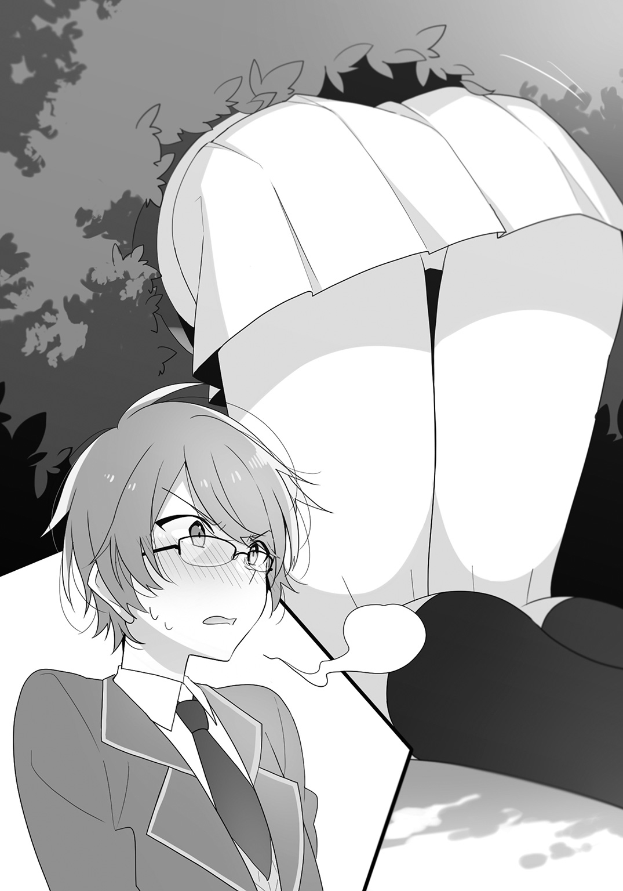
「永遠ちゃん、何をしてたの......？」
「いえ、黒い猫がこの生け垣をくぐっていったので、もしかして猫の溜まり場になってたりするのかなって」
それで生け垣の向こうを確認しようと頭を突っ込んでいたのか......。
「それで、どうだった？」
そう訊くと、久喜島さんはがっくりと肩を落として首を横に振った。
「いえ、一匹も。ガブリエルちゃんどころか、さっき入っていった黒猫さんも見当たりませんでした......」
「単に通り道になってただけなのかもね」
と、そんな話をしていると、僕の携帯電話がポケットの中で鳴った。
表示されているのは謙吾の名前だ。
「どうかした？」
『ああ、かなりの目撃情報があった。この辺にいるかもしれねえ』
「ホントに!? 今どの辺り？」
『雲林院さんの家から俺たちが向かった方に真っ直ぐ行って、信号のところを右に曲がったところだ。近くに郵便局がある』
「わかった、僕らもすぐそっちに向かうよ」
『頼む』
僕は電話を切って、二人に、
「謙吾たちが目撃した人を何人か見つけたって。一度合流しようって言ってる」
と伝えた。
「本当ですか!?」
「きっと美加ちゃんのガブリエル愛の力だね！」
なんだ、ガブリエル愛って。しかし、久喜島さんはメチャクチャ納得した顔で深くうなずいていた。
「とにかく、行こう。郵便局の方だって」
早速、三人で謙吾に言われた方へと向かって歩き出す。
そして郵便局付近に着いた頃に、もう一度謙吾から電話があった。
『敬一郎、見つけたぞ』
「マジで!?」
路上での電話だというのに、思わず大声で訊いてしまった。ガブリエル愛、本当にあるかもしれない。
『もちろん、本当だ』
「捕まえられそう？」
『いや、っていうか......うーん』
急に謙吾の歯切れが悪くなる。
「どうしたの」
『ちょっと口では説明しにくい。合流してから話すから、ここまで来てくれ。郵便局から駅の方に行くと小汚いラーメン屋があるだろう。そこの脇の路地を抜けた辺りだ』
「わかった」
電話を切る。
「見つけたんですか......？」
「そうらしいんだけど、どうにもハッキリしなくて......。もしかしたら......」
死んでいるのかもしれない。
その言葉をギリギリで呑み込んだ。
それでも、僕の懸念は二人には伝わってしまったらしい。二人は表情を曇らせた。
「で、でもさ、まだわかんないじゃん。謙ちゃんなら、良くないことでもハッキリ言うと思うよ」
「そ、そうですよ。とにかく、行ってみませんか？」
「そうだね」
うなずき合って、僕らは少し足を速めた。
＊
寂れた路地の奥、少し不気味な空き家の前に謙吾はいた。
そしてそのとなりでは、雲林院さんが道路に膝をついて魂が抜けきったような顔で放心していた。
「どうしたの」
僕が訊くと、謙吾は背後の空き家を親指でさして、
「ここの庭を見てみろよ」
言われたとおり、久喜島さんと寧々子と三人で、朽ち果てかけた門から顔を出して庭を覗き込んでみる。
写真で見た赤い首輪のアメリカンショートヘアは、確かにそこにいた。
長く放置された庭には小さな池がしつらえてあり、濁った水が溜まっていた。その池の脇には、ヤツデがまだ命を保っており、天狗の団扇を思わせるような葉が半分枯れながらもどうにか落ちまいと踏ん張っていた。
鈴つきの赤い首輪をした銀毛虎縞の老描は、その池の脇、枯れかけたヤツデの下の日だまりでのんびりと寝そべっていた。
まるで、プールサイドのパラソルの下で、バカンスを楽しんでいるかのような優雅さで。
ときおり気持ちよさそうにあくびをするところを見ると、どうやら僕らが心配した最悪の事態――死んでいるかも、という予測――は思い過ごしだったようだ。
探していた猫の姿を確認したあとで、僕らは放心状態の雲林院さんを見やり、
「で、いったい何があったのさ？」
と謙吾に尋ねた。
「それがな......」
「それは、あたしから説明するわよ」
背後からの予期せぬ声に、僕は「うわっ」と飛び退いてしまった。
「何よ、そんなに怖がらなくてもいいでしょ、ひどいわねえ」
そう言って肩をすくめたのは、ショートカットにこざっぱりしたパンツスタイルの美女だった。
津島冴子司書教諭。
僕らの高校の図書室の管理者であり、文類研の顧問を務めてもらっている先生でもある。
「先生......」
眼鏡の位置を指で直しつつ、驚きに乱れた心を落ち着けようと、努めて平静な口調で呟いた。
「っていうか、このノリと口調って、カシマレイコの人じゃない......？」
怯えたように僕の腕にしがみつきながら、寧々子が震えた声で言う。
僕は信じていないが、津島先生は『極度の霊媒体質であり、僕らと縁がある幽霊がたびたび憑依して身体を借りている』という趣旨の主張をしているのだ。
「あの、どうしてここに......？」
「んー、先生は図書委員の子に図書室を任せてそこのラーメン屋さんに遅いお昼を食べにきたみたいね。あのラーメン屋、見た目はアレだけど、味の評判は良いみたいよ？ あたしはホラ、もう場所って概念にはあんまり縛られなくなってるから」
もう先生が何を言っているのかさっぱり理解できない。
「そんな戯言より、何があったのか説明していただけるんじゃないんですか、先生」
「あらまあ、眼鏡の坊やは相変わらずあたしに辛辣ね。あたしを先生だと思ってるなら、もう少し敬意を払うべきじゃないの？」
「貴女が先生だとご自分で認めるなら敬意を払いますが、別人だと言い張っている人に先生に対する敬意を払う必要はないと思いますけど」
津島先生は苦笑しつつ、
「確かにそうかもしれないけど、わかりにくい理屈ねえ」
「もう一度言いますけど、そんなことより――」
「はいはい。といっても、込み入った話じゃないわ。あたしがあの猫の言葉を通訳してあげただけよ」
「......は？」
猫の言葉を通訳、だって？ まったく、この先生は次から次へと僕の常識を揺さぶろうとしてくださる。
「怪訝な顔ね。年を経て力を持った化け猫が人間と同等の知性を身につけたっておかしくないと思わない？」
「思わないですけど」
なぜ思うと考えるのかが理解できません、先生。
「坊やってば、これまでにいろいろと不可思議な経験をしているはずなのに、まだそんなことを言うの？」
「不思議なのはまだ科学的に説明がつかないというだけで、すべてはいずれ解き明かされるただの現象です」
先生がやれやれ、と肩をすくめる。
「うん、まあ、敬ちゃんの主義主張はわかってるから、少し話を聞こうよ」
そうだった。
「あの、ガブリエルちゃんは何を言ったんですか？」
久喜島さんがそう質問した。
「んー、まあ、簡単に言うと、辞表を出したって感じかしらね」
「「「辞表？」」」
意外な単語に、僕と久喜島さんと寧々子の声が重なった。
「そ。一身上の都合により、雲林院家のペットを辞めさせていただきます、って」
「ペットが家族同然というのはなんだったのか」
「ってか、もしかして美加ちゃんや家族がそう思ってただけ、ってこと......？」
「それは......確かに、ショックかもしれません......」
しかし、先生の言葉を信じるわけではないが、ペットからすれば自分で飼い主を選ぶことはできないのだ。もしかしたら、やむなく仕事の感覚で飼われている犬や猫もいるのかもしれない。
話を聞く限り、決して雲林院さんや一家が悪い飼い主だったとは思わないが、それでも相性みたいなものはあるだろうし。
「どうやら、俺の読みが結構良い線いってたみたいでな。最後に大仕事をしたんだし、もういいだろ、みたいなことらしい」
おかしいな。家出人探しから、いつの間にか辞めようとしているバイト仲間を引き止めるような話になりつつある。
「まあ、あの猫が言うには、あのお嬢ちゃんの家がイヤになったってことじゃなくて、余生はあちこち旅行に行ってバカンスを楽しみたいんだって」
「ええと、では、美加さんが旅行とかのときに、一緒に連れていってあげたらどうでしょう？」
「わたくしもそう言いましたわ！ でも......」
「ひとり旅がいいんだそうよ？」
「あー。それはしょうがないね......」
「なんだか無性にひとりになりたいときってありますもんね......」
なんで寧々子も久喜島さんも納得してるんだ。
「まあ、そういうことだから、あの猫はもうそっとしておいてあげなさいな」
猫や犬は、『所有物』として扱われる。そして、金銭を支払ってブリーダーから購入している以上、所有権は雲林院家にある、ということになる。命をモノ扱いすることの是非はともかく、少なくとも法ではそう定められているわけだが......。
「雲林院さん、どうするの？ 先生の話を信じるわけじゃないけど、仮に猫が嫌がっているとしても、雲林院さんにはガブリエルを連れて帰る権利が法的には認められてるわけだし。というか、野良猫を増やす、という行為はペットの飼い主としては道義上褒められたことではないよね」
「あら、人間が勝手に決めた法や道義を、人間以外の知的生命体に当てはめるのはどうなのかしらねえ」
「それは同感ですけど、ガブリエルが知的生命体であるとする根拠が先生の言葉だけである以上、それが証明されたとは言えません。仮に僕らが認めても、世間は認めませんから、野良猫を増やすという行為は正当化されません」
「......ホント、眼鏡の坊やは可愛げがないところが可愛いわよね」
言ってる意味がわかりません、先生。
「まあ、いずれにしても、決めるのは雲林院さんだ」
「それはどうかしらね」
ニヤリと笑った先生にハッとして庭の池辺りを見やると、すでにガブリエルの姿はどこにも見当たらなかった。
「そりゃあ、自分を連れ帰るかどうか、なんて話を側でしていれば逃げるに決まっているわよねえ」
その後、どれだけ探し回っても、ガブリエルを見つけることはできなかった。
＊
「まあ、生きてるってわかっただけでもよかったじゃねえか」
夕暮れが街を染め始め、今日の捜索はもう終わりにしよう、ということになった帰り道で、謙吾が言った。
「そう......ですわね」
うつむいたまま、沈んだ声で雲林院さんは答えた。
「ええと、ひとり旅を満喫したらふらっと帰ってくるかもしれませんよ」
「そうそう、案外、ひとりになってみたら、一緒に育った美加ちゃんが恋しくなったりするかもしれないし」
僕としては、なぜみんなして先生が通訳したという猫の言葉を信じて疑わないのかが理解できない。
そんな話をしながら、赤の歩行者用信号に立ち止まる。謙吾も久喜島さんも寧々子も一斉に歩みを止めたのだが――、
トボトボと、雲林院さんだけはその歩みを止めなかった。
まさか、うつむいているせいで信号が見えていない......!?
「雲林院ッ！」
謙吾が鋭く叫ぶ。
その声で雲林院さんはハッと顔を上げた。
つんざくようなクラクションが、謙吾の叫び声に続いて鳴り響いた。
かなり法定速度をオーバーした軽トラックが、雲林院さんのすぐ目の前まで迫っていた。
血の気が引く。
しかし、助けるどころか、指の一本さえ動かすことができなかった。
もう、どうにもならない――。
直感的にそう思った。
あのスピードの自動車にぶつかって、助かるとはとうてい思えない。なのに、目をつぶることさえできなかった。
が、しかし――
間一髪で、雲林院さんの身体が僕らの方へと押し戻された。向こう側から突き飛ばされた、と言ってもいい。
......その瞬間、チリン、と鈴の音が聞こえたのは気のせいだろうか。
「おっと！」
突き飛ばされて歩道にまで戻ってきた雲林院さんの身体を、謙吾が受け止めた。
「バカヤロー、気をつけろッ！」
軽トラックが罵声を残して走り去っていく。
......なんだ、あれ。確かに信号を見ていなかった雲林院さんも悪いけど、あれだけスピードを出していたらそっちだって悪いだろうに。
「美加ちゃん、大丈夫!?」
「え、ええ、怪我はないみたいですわ......」
いったい誰が雲林院さんを助けてくれたのだろう、と道路の方を見やっても、それらしき人影は見当たらない。
「あ、これは......」
久喜島さんが、落ちていた何かを拾い上げる。その拍子に、チリン、と付属していた鈴が鳴った。
「それは――！」
雲林院さんが、謙吾から離れて久喜島さんに駆け寄った。
よく見るまでもない。
その形状と、雲林院さんの反応を見れば、それがガブリエルの首輪であることは見当がついた。
そして、おそらく、誰もが確信していただろう。理屈ではない。だが、その直感が間違いであるとはとうてい思えなかった。
きっと、ガブリエルは、もう――
＊
「これは、俺の想像なんだけどな」
誰も何も言えなかった帰り道で、ぽつり、と謙吾が言った。
「たぶん、ガブリエルは旅になんか出る気はなかったんじゃねえか」
「え？」
まだ涙も止まらず、久喜島さんに肩を抱かれながらようやく歩いていた雲林院さんが顔を上げた。
「ガブリエルが姿を消してから俺たちが探し始めるまで、少なく見積もっても半日以上あった。旅に出る気なら、あんな近くにいねえで、もっと遠くまで行っていたはずだ。たとえ猫の脚でも、市外くらいまでなら出られるんじゃねえか？ まあ、もしかしたら本当に旅に憧れていたのかもしれねえが、その場合、もう旅して回るほどの体力が残っていなかったのかもしれねえな」
「じゃあ、カシマレイコはウソを言ったの？」
寧々子が問う。
「いや、違うな」
謙吾が首を横に振った。
「むしろ、彼女もガブリエルの仕込みだろう。どういう経緯で知り合っていたのかは知らねえが、ガブリエルは『旅に出る』って意思を雲林院さんに伝えてほしくてあの場に来てくれるよう頼んだんじゃねえか？ だいたい、あの場に津島先生に憑依したカシマレイコが偶然居合わせたなんて、どう考えても出来すぎだ」
猫が霊と知り合いで、そんなコミュニケーションまで取るのか。
......いや、いろいろアレだとは思ったが、僕とて空気が読めないわけじゃない。無粋なツッコミは飲み込むとしよう。
「つまり、どういうことですか......？」
久喜島さんが首を傾げた。
「ガブリエルは死期を悟っていたのさ。あるいは、謎の人影との戦いで、命に関わるほど力を使っちまったのかもしれねえけどな。だから、ずっと一緒に育って一緒に暮らしてきた愛する家族に心配をかけまいと、『旅に出た』ことにしたかったんだと思う。辞表出してもう関係ねえ、と本気で思ってたら、最後の力を振り絞ってまで雲林院さんを助けたりはしねえだろ」
......荒唐無稽だ。でも、だとしたら、すごくカッコいいじゃないか、ガブリエル。まるでヒーローだ。
「それで、最後まで姿を見せずに――自分の亡骸を見せないように、去っていったというわけか」
「ああ。きっと、それが猫の美学なんだろうぜ」
眼鏡の位置を指で直す。
「まあ、そういうことにしておこうか」
僕がそう言うと、
「「「「えっ」」」」
と四人が揃って驚きの声を上げた。
「敬一郎さん、謙吾さんの仮説にはいろんな超常現象が含まれているのに、認めちゃって良いんですか!?」
「そうだよ！ 敬ちゃんらしくないよ!?」
「明日は槍でも降るんじゃありませんの......？」
雲林院さんまで......。
「別に、認めたわけじゃないよ。ガブリエルに敬意を表して、あえて無粋なことを言う必要はないと思っただけで」
きっと、謙吾が言ったことが真実だと思っておいた方が、悲しみに暮れている雲林院さんのためにもいいだろう。
猫が、我が身を賭して飼い主を助ける。
そんな逸話があちこちにたくさん残っているのだ、と謙吾は言っていた。
昔から、愛猫家にはそんな願望があったんじゃないだろうか。勝手気ままな猫と心を通わせ、いざとなったら親友のように助け助けられる間柄になりたい、と。
人が語り継ぐ伝承には、真実と一緒に願望もたくさん込められている気がする。
寝物語に聞かされる子どもとしても、きっと、猫がツンツンしたまま終わるよりは、きちんとデレてくれた方が嬉しかったりするのだろう。
「まあ、とにかく――」
僕は雲林院さんが握りしめている赤い首輪を見やって、
「ガブリエルは最高に家族想いの良いヤツで、カッコいい猫だった――ってことでいいんじゃないかな」
わりと本心から、そう言った。
エピローグ
さすがに翌日も、雲林院さんは凹んだままだった。泣き腫らした目が隠しきれておらず、僕らもなんて声をかけていいのかわからなかった。
けれど、その翌日からは普段通りに振る舞い始めて、さらにその翌日には、表面上はすっかり元気になったように見えた。
そんな日の昼休み。
部室で、お裾分けおかずのサーモンのタルタルフライを食べながら、寧々子は、
「だから、アレは絶対にケセランパサランだったのよ！」
と力説していた。
「授業中にさ、ウサギの尻尾みたいな白くてふわふわの丸い何かが、窓の外を横切っていったの！」
「なんだそれ」
「敬ちゃん知らないの!? あのケセランパサランだよ！」
あの、と言われても、僕には化粧品か何かの名前でそんなのがあったっけ、母が使ってたっけなあ、程度の認識しかない。
「白い毛玉のような存在で、ふわふわ宙を漂っていると言われる謎の存在ですわ。おしろいを食べるとか、捕まえると持ち主に幸福をもたらすとか言われていますわね」
またずいぶん漠然とした存在だな。
っていうか、埃の塊とか、タンポポの綿毛とか、見間違えそうな物がありすぎて、仮説も立て放題だ。
「実は結構歴史が古いんだぜ。江戸中期の『和漢三才図会』にも『へいさらばさら』という似たようなものの記載があるんだ。雲林院さんが言ってたおしろい云々もここにある記述だな。まあ、同じモノなのかどうかは諸説あるようだが」
「へえ......」
そんな頃から、謙吾や寧々子みたいな人種が存在していたらしい。
「まあ、今の時期だとタンポポの綿毛ってこともないだろうから、風に飛ばされたコンビニの袋でも見間違えたんじゃないの」
「ちょっと、敬ちゃん！ いくらあたしだって、レジ袋とは見間違わないよ!?」
「どうだか。寧々子はそそっかしいからなあ。あるいは、動物も冬毛から夏毛に生え替わる時期だろうし、抜け落ちた毛が固まって風に舞ってたんじゃないの」
「むー」
寧々子がぷくーっと頰を膨らませる。
「でも、ちょっと素敵だと思いません？ 幸せの白い毛玉が、たくさんふわふわ空を漂っているなんて」
久喜島さんの言葉は、一見メルヘンチックだが、リアルに想像を寄せていくとちょっと怖くもある。謎の物質が空を埋め尽くしているとか、ＳＦホラーだ。
「ガンガン降ってきてくれるといいんだけどな。漂ってるけど手が届かねえ、なんて風刺が効きすぎだ」
空を埋め尽くす謎物質に依存する幸せとは果たしてなんなのか。
と、そんな話をしていると、ガラッとドアが開いた。
全員の目が部室の入り口に向く。そこには、我らが顧問、津島先生の姿があった。
「あ、先生......」
言いかけた寧々子だったが――
「やっほー」
津島先生が陽気に手を挙げた。
「カシマレイコだ！」
途端に寧々子は警戒心を露にする。
「そんなに怖がんないでよ。傷つくわねえ」
そう言いつつ、自称カシマレイコの津島先生は、手に持っていた箱を僕らに示した。
「なんです、それ」
僕の質問に、津島先生は、意味深な笑みを浮かべながら、
「あんたたちにお土産。渡してくれって頼まれたのよ」
僕らが食卓にしている長机に歩み寄り、それを置いた。
「マカダミアナッツチョコ？ 誰か、お知り合いがハワイにでも行ってらしたんですの？」
雲林院さんがそう訊いた瞬間、
――チリン。
確かに、鈴の音が聞こえた気がした。
どうやらそれを聞いたのは僕だけではなかったようで、全員で顔を見合わせることになった。
「肉体がなくなれば、空間的な制約はなくなるもの。変な死に方をして土地とかに縛られさえしなければ、世界中を身ひとつで旅することもできるわね。次はバリ島に行ってのんびりしてくる、って言ってたわよ」
いったいなんの話だ。まさか、ガブリエルがハワイ旅行に行ってマカダミアナッツチョコレートを買ってきたとでもいうのか。今どき、マカダミアナッツチョコレートなんか日本でいくらでも手に入れられるぞ......。
しかし、これは津島先生なりの慰め方なのかもしれない。
故人が死後、楽しくやっていると思えるのは、残された人間にとっては救いなのだ。寺という環境で育った僕は、それをよく知っている。
人は、大好きだった人の死後の生活が穏やかでありますように、と願ってお経を捧げ、手を合わせて祈るのだ。
「眼鏡の坊やは、今日は食ってかかってこないのね」
「別に、特に言うべきことはありません」
「あら、絶対に非現実的だとか言い出すと思ったのに」
僕は死後の世界も霊魂も信じていないけれど、それが生きている人間を悲しみから救えるのであれば、意義はあるものだと思っている。
だから、僕はそれを否定しない。
雲林院さんがそれを信じることで救いを得られるなら、それは、荒唐無稽であっても無意味ではない。少なくとも、僕の主義主張では、雲林院さんの悲しみをどうにかしてあげることはできないのだから。
「おっと、美味そうなものをシェアしてるじゃないの。もしかして、女子が男子に手作り弁当をご馳走してるわけ？ いいねえ、青春ねえ」
津島先生は、長机の中央に置いたお裾分け弁当箱から、ひじき入り玉子焼きをひょいっとつまみ上げて、口に放り込んだ。
「ん！ ちょっと、美味しいじゃない！ 誰が作ったのよ、これ。こんだけ料理が上手かったら、いいお嫁さんになるわよ」
その言葉に、久喜島さんと寧々子と雲林院さんが目を伏せた。
「僕ですけど」
「は？」
「だから、僕です。これを作ったの」
津島先生は露骨に「えー」とでも言いたげな顔をした。
「ちょっと、何やってんのよ、この女子力眼鏡。こういうのは女の子の役目でしょ!? 下手っぴでも、一生懸命作ってくれる女子の顔を立てるのが男の子でしょ!?」
「料理や家事が女の仕事だと思ってるのが古いです」
「あーはいはい、どうせあたしは雪崩に巻き込まれて上半身と下半身がチョンパした状態で長いこと発見されずに白骨化したから感性が古いわよ、悪かったわね」
「感性云々より、男女平等の意識の問題です。あと、その設定面倒くさいです」
「ちょ、人の死に様を中二病みたいに言わないでくれる!?」
どう違うというのか。
「とりあえず、もう一つくらいいかがですか」
大きなお裾分け用弁当箱を先生に差し出した。
「いただくわよ！」
先生はサーモンタルタルフライを食べて、
「これも美味しいじゃない！ どうなってるのよ！」
と地団駄を踏んだ。
どうなってると言われても、返答に困る。
「あの」
そんな先生に、雲林院さんがおずおずと声をかけた。
「そのお知り合いに、伝えていただきたいことがあるのですけれど」
「ん？ いいわよ」
「では、お土産をありがとう、でも、こういうお土産もいいけれど、気が向いたら土産話を聞かせに、あなたの家に帰ってきてくださいませ、と」
先生は小さく微笑んで、
「確かに伝えるわ。じゃね。あ、坊や、ごちそうさま」
そう言って部室から出ていった。
その背中を見送る雲林院さんの目は潤んでいたけれど、口元には親密な家族に向けられるような穏やかな微笑みが浮かんでいた。
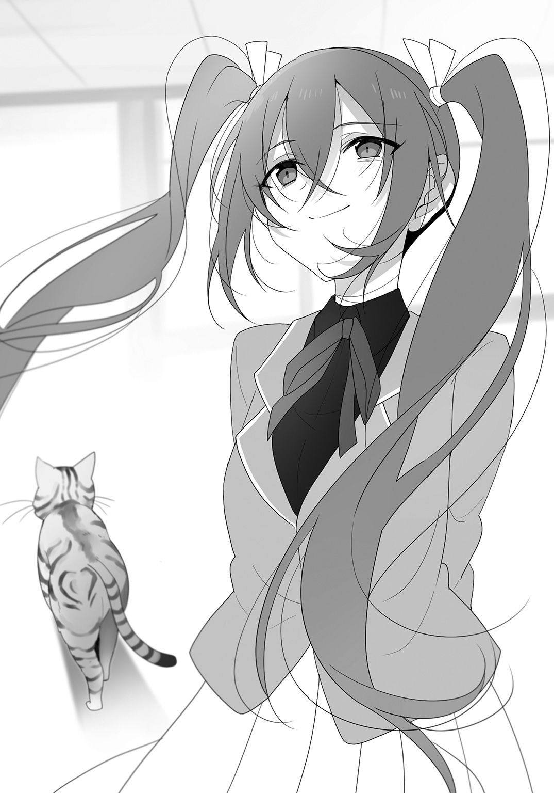
あ と が き
どうも、怪談大好きなおかざきです。フィールドワーク（ピクニック）に行ったり合宿（お泊まり会）をしたりと部活っぽくなってきた二巻のお届けです。
どうでもいい話ですが、童女石は実在のスポットです。書くにあたって取材にも行きました。ただ、結構ウソもあって、駅からは遠いし周りも田園じゃなくて山です。その辺はご了承をいただければと。
さて、それはそれとして、流行や時代の流れを無視してやりたいことをやってみたこのシリーズですが、やはりと言いますか、案の定と言いますか、苦戦気味でございます。
ただ、個人的に好きなテーマでもありますので、仮に出版が難しくなったとしても、どういう形でか続けて参りたいと思って担当様と相談中です。まだ明確に方針は決まっていませんが、なんとしても続きは読んでいただけるよう書き続ける所存であります。
まあ、売れてくれて続きを出版できるのが一番ですので、よろしくお願いいたします。
では、謝辞を。前巻に引き続き素敵なイラストを描いてくださったＵ３５様、関係者の皆様、お買い上げいただきました読者の皆様、ありがとうございます。では、また！
おかざき登
著者紹介
おかざき登 おかざき のぼる
１９７６年12月25日生まれ、新潟県出身、二松学舎大学卒。「二人で始める世界征服」で第４回ＭＦ文庫Ｊライトノベル新人賞審査員特別賞を受賞、デビュー。夏は怖い話系特番を見ながらお酒を飲むのが最高に楽しいです。
illustration
Ｕ３５ うみこ
お弁当を持ってローカル電車に乗ってどこかへ出かけたくなりました。永遠子ちゃん達に交ざりたい！
ダッシュエックス文庫DIGITAL
都市伝説系彼女。２
～永遠子さん救済倶楽部～
著者 おかざき登
© NOBORU OKAZAKI 2016
２０１６年７月31日発行
この電子書籍は、ダッシュエックス文庫「都市伝説系彼女。２ ～永遠子さん救済倶楽部～」
２０１６年６月29日発行の第１刷を底本としています。
発行者 鈴木晴彦
発行所 株式会社 集英社
〒１０１－８０５０
東京都千代田区一ツ橋２丁目５番10号
０３－３２３０－６０８０（読者係）
制作所 株式会社ＩＣＥ
本作品の全部また一部を無断で複製、転載、改竄、インターネット上に掲載すること、および有償無償に関わらず、本データを第三者に譲渡することを禁じます。なお個人利用の目的であっても、コピーガードを解除しての複製は、法律で禁じられています。